Grasshopper Components
Version 0.9.76.0, 3114 components including addons.
Curve > Analysis
| Center (Cen) Find the center point and radius of arcs and circles. | |
| Evaluate Length (Eval) Evaluate a curve at a certain factor along its length. Length factors can be supplied both in curve units and normalized units. Change the [N] parameter to toggle between the two modes. | |
| Closed (Cls) Test if a curve is closed or periodic. | |
| Control Points (CP) Extract the nurbs control points and knots of a curve. | |
| Control Polygon (CPoly) Extract the nurbs control polygon of a curve. | |
| Curve Closest Point (Crv CP) Find the closest point on a curve. | |
| Curvature Evaluate the curvature of a curve at a specified parameter. | |
| Derivatives (CDiv) Evaluate the derivatives of a curve at a specified parameter. | |
| Discontinuity (Disc) Find all discontinuities along a curve. | |
| Extremes (X-tremez) Find the extremes (highest and lowest points) on a curve. | |
| Curve Nearest Object (CrvNear) Find the object nearest to a curve. | |
| Curve Proximity (CrvProx) Find the pair of closest points between two curves. | |
| Segment Lengths (LenSeg) Finds the shortest and longest segments of a curve. | |
| Curve Side (Side) Find on which side of a curve a point exists | |
| Torsion Evaluate the torsion of a curve at a specified parameter. | |
| Deconstruct Arc (DArc) Retrieve the base plane, radius and angle domain of an arc. | |
| Deconstuct Rectangle (DRec) Retrieve the base plane and side intervals of a rectangle. | |
| End Points (End) Extract the end points of a curve. | |
| Evaluate Curve (Eval) Evaluate a curve at the specified parameter. | |
| Length (Len) Measure the length of a curve. | |
| Length Domain (LenD) Measure the length of a curve subdomain. | |
| Length Parameter (LenP) Measure the length of a curve to and from a parameter. | |
| Planar Test a curve for planarity. | |
| Point In Curve (InCurve) Test a point for closed curve containment. | |
| Point in Curves (InCurves) Test a point for multiple closed curve containment. | |
| Polygon Center (PCen) Find the center point (average) for a polyline. | |
| Curve Frame (Frame) Get the curvature frame of a curve at a specified parameter. | |
| Horizontal Frame (HFrame) Get a horizontally aligned frame along a curve at a specified parameter. | |
| Perp Frame (PFrame) Solve the perpendicular (zero-twisting) frame at a specified curve parameter. |
Curve > Primitive
| Arc Create an arc defined by base plane, radius and angle domain. | |
| Modified Arc (ModArc) Create an arc based on another arc. | |
| Arc 3Pt (Arc) Create an arc through three points. | |
| Arc SED (Arc) Create an arc defined by start point, end point and a tangent vector. | |
| BiArc Create a bi-arc based on endpoints and tangents. | |
| Circle (Cir) Create a circle defined by base plane and radius. | |
| Circle 3Pt (Circle) Create a circle defined by three points. | |
| Circle CNR (Circle) Create a circle defined by center, normal and radius. | |
| Circle Fit (FCircle) Fit a circle to a collection of points. | |
| Circle TanTan (CircleTT) Create a circle tangent to two curves. | |
| Circle TanTanTan (CircleTTT) Create a circle tangent to three curves. | |
| Ellipse Create an ellipse defined by base plane and two radii. | |
| InCircle Create the incircle of a triangle. | |
| InEllipse Create the inscribed ellipse (Steiner ellipse) of a triangle. | |
| Line (Ln) Create a line between two points. | |
| Line 2Plane (Ln2Pl) Create a line between two planes. | |
| Line 4Pt (Ln4Pt) Create a line from four points. | |
| Fit Line (FLine) Fit a line to a collection of points. | |
| Line SDL (Line) Create a line segment defined by start point, tangent and length.} | |
| Polygon Create a polygon with optional round edges. | |
| Rectangle Create a rectangle on a plane | |
| Rectangle 2Pt (Rec 2Pt) Create a rectangle from a base plane and two points | |
| Rectangle 3Pt (Rec 3Pt) Create a rectangle from three points | |
| Tangent Arcs (TArc) Create tangent arcs between circles | |
| Tangent Lines (Tan) Create tangent lines between a point and a circle | |
| Tangent Lines (Ex) (TanEx) Create external tangent lines between circles | |
| Tangent Lines (In) (TanIn) Create internal tangent lines between circles |
Surface > Analysis
| Area Moments (AMoments) Solve area moments for breps, meshes and planar closed curves. | |
| Area Solve area properties for breps, meshes and planar closed curves. | |
| Box Corners Extract all 8 corners of a box. | |
| Box Properties (BoxProp) Get some properties of a box | |
| Brep Closest Point (Brep CP) Find the closest point on a brep | |
| Brep Edges (Edges) Extract the edge curves of a brep. | |
| Brep Topology (Topology) Get and display the topology of a brep. | |
| Point In Brep (BrepInc) Test whether a point is inside a closed brep | |
| Point In Breps (BrepsInc) Test whether a point is inside a collection of closed breps | |
| Brep Wireframe (Wires) Extract the wireframe curves of a brep. | |
| Deconstruct Box (DeBox) Deconstruct a box into its constituent parts. | |
| Deconstruct Brep (DeBrep) Deconstruct a brep into its constituent parts. | |
| Evaluate Box (Box) Evaluate a box in normalised {UVW} space. | |
| Evaluate Surface (EvalSrf) Evaluate local surface properties at a {uv} coordinate. | |
| Shape In Brep (ShapeIn) Tests whether a shape is inside a brep | |
| Surface Closest Point (Srf CP) Find the closest point on a surface. | |
| Surface Curvature (Curvature) Evaluate the surface curvature at a {uv} coordinate. | |
| Dimensions (Dim) Get the approximate dimensions of a surface | |
| Surface Inflection (SInf) Compute the inflection curves for a surface | |
| Is Planar (Planar) Test whether a surface is planar | |
| Osculating Circles (Osc) Calculate the principal osculating circles of a surface at a {uv} coordinate. | |
| Surface Points (SrfPt) Get the control-points of a Nurbs Surface | |
| Principal Curvature (Curvature) Evaluate the principal curvature of a surface at a {uv} coordinate. | |
| Point In Trim (TrimInc) Test whether a {uv} coordinate is inside the trimmed portion of a surface | |
| Volume Moments (VMoments) Solve volume properties for closed breps and meshes. | |
| Volume Solve volume properties for closed breps and meshes. |
Mesh > Util
| Exposure Solve mesh exposure for a collection of energy rays and obstructions. | |
| Occlusion (Occ) Solve occlusion for a collection of view rays and obstructions. | |
| Blur Mesh (MBlur) Blur the colours on a mesh | |
| Mesh Brep (Mesh) Create a mesh that approximates Brep geometry | |
| Simple Mesh (SMesh) Create a mesh that represents a Brep as simply as possible | |
| Cull Faces (CullF) Cull faces from a mesh | |
| Cull Vertices (CullV) Cull vertices from a mesh | |
| Delete Faces (DeleteF) Delete faces from a mesh | |
| Delete Vertices (DeleteV) Delete vertices from a mesh | |
| Mesh Join (MJoin) Join a set of meshes into a single mesh | |
| Quadrangulate (Quad) Quadrangulate as many triangles as possible in a mesh | |
| Settings (Custom) (Custom Mesh Settings) Represents custom mesh settings. | |
| Settings (Speed) (Jagged) Represents 'Jagged & faster' mesh settings. | |
| Settings (Quality) (Smooth) Represents 'Smooth & slower' mesh settings. | |
| Mesh Shadow (MShadow) Compute the shadow outline for a mesh object | |
| Disjoint Mesh (Disjoint) Split a mesh into disjoint pieces. | |
| Mesh Split Plane (MSplit) Split a mesh with an infinite plane. | |
| Mesh Surface (Mesh UV) Create a Surface UV mesh | |
| Triangulate (Tri) Triangulate all quads in a mesh | |
| Unweld Mesh (Unweld) Unweld (split) creases in a mesh | |
| Weld Mesh (Weld) Weld (merge) creases in a mesh | |
| Smooth Mesh (MSmooth) Smooth the vertices of a mesh |
Curve > Util
| Polyline Collapse (PCol) Collapse short segments in a polyline curve. | |
| Seam Adjust the seam of a closed curve. | |
| Curve To Polyline (ToPoly) Convert a curve to a polyline. | |
| Extend Curve (Ext) Extend a curve by a specified distance. | |
| Fillet Fillet the sharp corners of a curve. | |
| Fillet Distance (Fillet) Fillet the sharp corners of a curve by distance. | |
| Fillet Fillet a curve at a parameter. | |
| Fit Curve (Fit) Fit a curve along another curve. | |
| Flip Curve (Flip) Flip a curve using an optional guide curve. | |
| Join Curves (Join) Join as many curves as possible | |
| Offset Offset a curve with a specified distance. | |
| Offset Loose (Offset (L)) Offset the control-points of a curve with a specified distance. | |
| Offset Loose 3D (Offset (3D)) Offset the control-points of a curve with a specified distance in 3D. | |
| Offset on Srf (OffsetS) Offset a curve on a surface with a specified distance. | |
| Project Project a curve onto a Brep. | |
| Pull Curve (Pull) Pull a curve onto a surface. | |
| Rebuild Curve (ReB) Rebuild a curve with a specific number of control-points. | |
| Reduce (RedPLine) Reduce a polyline by removing least significant vertices. | |
| Simplify Curve (Simplify) Simplify a curve. | |
| Smooth Polyline (SmoothPLine) Smooth the vertices of a polyline curve. | |
| Offset Polyline (OP) Offset a 2D polyline | |
| Explode Explode a curve into smaller segments. |
Curve > Spline
| Bezier Span (BzSpan) Construct a bezier span from endpoints and tangents. | |
| Blend Curve (BlendC) Create a blend curve between two curves. | |
| Blend Curve Pt (BlendCPt) Create a blend curve between two curves that intersects a point. | |
| Catenary (Cat) Create a catenary chain between two points. | |
| Catenary Ex (CatEx) Create a variable catenary chain between two points. | |
| Connect Curves (Connect) Connect a sequence of curves. | |
| Nurbs Curve (Nurbs) Construct a nurbs curve from control points. | |
| Interpolate (IntCrv) Create an interpolated curve through a set of points. | |
| Curve On Surface (CrvSrf) Create an interpolated curve through a set of points on a surface. | |
| Interpolate (t) (IntCrv(t)) Create an interpolated curve through a set of points with tangents. | |
| Tangent Curve (TanCurve) Create a curve through a set of points with tangents. | |
| Iso Curve (Iso) Construct {uv} isocurves on a surface. | |
| Kinky Curve (KinkCrv) Construct an interpolated curve through a set of points with a kink angle threshold. | |
| Match Curve (MatchCrv) Match two curves. | |
| NurbsCurve (NurbCrv) Construct a nurbs curve from control points, weights and knots. | |
| Knot Vector (Knots) Construct a nurbs curve knot vector. | |
| PolyArc (PArc) Create a polycurve consisting of arc and line segments. | |
| PolyLine (PLine) Create a polyline connecting a number of points. | |
| Geodesic Construct a surface geodesic between two points. | |
| Sub Curve (SubCrv) Construct a curve from the sub-domain of a base curve. | |
| Swing Arc (Swing) Create a polycurve consisting of arcs defined by center points. | |
| Tween Curve (TweenCrv) Tween between two curves. |
Surface > Freeform
| 4Point Surface (Srf4Pt) Create a surface connecting three or four corner points. | |
| Boundary Surfaces (Boundary) Create planar surfaces from a collection of boundary edge curves. | |
| Edge Surface (EdgeSrf) Create a surface from two, three or four edge curves. | |
| Extrude (Extr) Extrude curves and surfaces along a vector. | |
| Extrude Along (ExtrCrv) Extrude curves and surfaces along a curve. | |
| Extrude Linear (Extrude) Extrude curves and surfaces along a straight path. | |
| Extrude Point (Extr) Extrude curves and surfaces to a point. | |
| Fragment Patch (FPatch) Create a fragmented patch from a polyline boundary | |
| Loft Options (Loft Opt) Create loft options from atomic inputs | |
| Loft Create a lofted surface through a set of section curves. | |
| Network Surface (NetSurf) Create a surface from curve networks | |
| Patch Create a patch surface | |
| Pipe Create a pipe surface around a rail curve. | |
| Pipe Variable (VPipe) Create a pipe surface with variable radii around a rail curve. | |
| Surface From Points (SrfGrid) Create a nurbs surface from a grid of points. | |
| Rail Revolution (RailRev) Create a surface of revolution using a sweep rail. | |
| Revolution (RevSrf) Create a surface of revolution. | |
| Ruled Surface (RuleSrf) Create a surface between two curves. | |
| Sum Surface (SumSrf) Create a sum surface from two edge curves. | |
| Sweep1 (Swp1) Create a sweep surface with one rail curve. | |
| Sweep2 (Swp2) Create a sweep surface with two rail curves. |
Util
| Cluster Input Represents a cluster input parameter | |
| Cluster Output Represents a cluster output parameter | |
| Data Recorder Records data over time | |
| Cherry Picker Pick a single item from a data tree | |
| Param Viewer A viewer for data structures. | |
| Gene Pool Contains a collection of genes (i.e. variables) | |
| Data Dam Delay data on its way through the document | |
| Smooth Numbers Smooth out changing numbers over time | |
| Natural logarithm Returns a factor of the natural number (e). | |
| Epsilon Returns a factor of double precision floating point epsilon. | |
| Golden Ratio Returns a factor of the golden ratio (Phi). | |
| Pi Returns a factor of Pi. | |
| Maximum Return the greater of two items. | |
| Minimum Return the lesser of two items. | |
| Transform Matrix A 4x4 Transformation matrix | |
| Merge Group Merge two groups | |
| Split Group Split a group | |
| Ungroup Ungroup a set of objects | |
| Octopus Multi-objective seach and optimzation | |
| Carve Perform boolean operations on two meshes using the Carve library. |
Vector > Plane
| Plane Coordinates (PlCoord) Get the coordinates of a point in a plane axis system. | |
| Adjust Plane (PAdjust) Adjust a plane to match a new normal direction | |
| Align Plane (Align) Perform minimal rotation to align a plane with a guide vector | |
| Align Planes (Align) Align planes by minimizing their serial rotation. | |
| Construct Plane (Pl) Construct a plane from an origin point and {x}, {y} axes. | |
| Deconstruct Plane (DePlane) Deconstruct a plane into its component parts. | |
| Plane 3Pt (Pl 3Pt) Create a plane through three points. | |
| Plane Closest Point (CP) Find the closest point on a plane. | |
| Plane Fit (PlFit) Fit a plane through a set of points. | |
| Line + Line (LnLn) Create a plane from two line segments. | |
| Line + Pt (LnPt) Create a plane from a line and a point. | |
| Plane Normal (Pl) Create a plane perpendicular to a vector. | |
| Plane Offset (Pl Offset) Offset a plane. | |
| Plane Origin (Pl Origin) Change the origin point of a plane | |
| Rotate Plane (PRot) Perform plane rotation around plane z-axis | |
| XY Plane (XY) World XY plane. | |
| XZ Plane (XZ) World XZ plane. | |
| YZ Plane (YZ) World YZ plane. |
Input
| Boolean Toggle Boolean (true/false) toggle | |
| Button Button object with two values | |
| Colour Picker Provides a colour picker object | |
| Colour Swatch Colour (palette) swatch | |
| Colour Wheel Creates a palette of related colours | |
| Control Knob A radial dial knob for settings numbers | |
| Digit Scroller Numeric scroller for single numbers | |
| Graph Mapper Represents a numeric mapping function | |
| Image Sampler Provides image (bitmap) sampling routines. | |
| MD Slider A multidimensional slider | |
| Number Slider Numeric slider for single values | |
| Panel A panel for custom notes and text values | |
| Value List Provides a list of preset values to choose from | |
| Calendar Represents a calendar | |
| Clock Represents a 24 hour clock | |
| Read File Read the contents of a file | |
| Gradient Represents a multiple colour gradient | |
| False Start Toggle Just like a normal Boolean Toggle, except it always reverts to "False" on file open. |
Maths > Operators
| Series Addition (SA) Perform serial addition until a goal has been reached | |
| Equality (Equals) Test for (in)equality of two numbers | |
| Larger Than (Larger) Larger than (or equal to) | |
| Mass Addition (MA) Perform mass addition of a list of items | |
| Mass Multiplication (MM) Perform mass multiplication of a list of numbers | |
| Relative Differences (RelDif) Compute relative differences for a list of data | |
| Similarity (Similar) Test for similarity of two numbers | |
| Smaller Than (Smaller) Smaller than (or equal to) | |
| Integer Division (A\B) Mathematical integer division | |
| Factorial (Fac) Returns the factorial of an integer. | |
| Gate And (And) Perform boolean conjunction (AND gate). | |
| Gate Majority (Vote) Calculates the majority vote among three booleans. | |
| Gate Nand (Nand) Perform boolean alternative denial (NAND gate). | |
| Gate Nor (Nor) Perform boolean joint denial (NOR gate). | |
| Gate Not (Not) Perform boolean negation (NOT gate). | |
| Gate Or (Or) Perform boolean disjunction (OR gate). | |
| Gate Xnor (Xnor) Perform boolean biconditional (XNOR gate). | |
| Gate Xor (Xor) Perform boolean exclusive disjunction (XOR gate). |
Vector > Point
| Project Point (Project) Project a point onto a collection of shapes | |
| Closest Point (CP) Find closest point in a point collection. | |
| Closest Points (CPs) Find closest points in a point collection. | |
| Construct Point (Pt) Construct a point from {xyz} coordinates. | |
| Cull Duplicates (CullPt) Cull points that are coincident within tolerance | |
| Deconstruct (pDecon) Deconstruct a point into its component parts. | |
| Distance (Dist) Compute Euclidean distance between two point coordinates. | |
| Numbers to Points (Pt2Num) Convert a list of numbers to a list of points | |
| Barycentric (BCentric) Create a point from barycentric {u,v,w} coordinates | |
| Point Cylindrical (Pt) Create a point from cylindrical {angle,radius,elevation} coordinates. | |
| Point Groups (PGroups) Create groups from nearby points | |
| Point Oriented (Pt) Create a point from plane {u,v,w} coordinates. | |
| Point Polar (Pt) Create a point from polar {phi,theta,offset} coordinates. | |
| To Polar (Polar) Convert a 3D point to plane polar coordinates. | |
| Points to Numbers (Pt2Num) Convert a list of points to a list of numbers | |
| Pull Point (Pull) Pull a point to a variety of geometry. | |
| Sort Points (Sort Pt) Sort points by Euclidean coordinates (first x, then y, then z) | |
| Sort Along Curve (AlongCrv) Sort points along a curve |
Vector > Vector
| Vector XYZ (Vec) Create a vector from {xyz} components. | |
| Deconstruct Vector (DeVec) Deconstruct a vector into its component parts. | |
| Unit Vector (Unit) Unitize vector. | |
| Unit X (X) Unit vector parallel to the world {x} axis. | |
| Unit Y (Y) Unit vector parallel to the world {y} axis. | |
| Unit Z (Z) Unit vector parallel to the world {z} axis. | |
| Vector 2Pt (Vec2Pt) Create a vector between two points. | |
| Amplitude (Amp) Set the amplitude (length) of a vector. | |
| Angle Compute the angle between two vectors. | |
| Cross Product (XProd) Compute vector cross product. | |
| Divide (VDiv) Perform vector-scalar division. | |
| Dot Product (DProd) Compute vector dot product. | |
| Vector Length (VLen) Compute the length (amplitude) of a vector. | |
| Multiply (VMul) Perform vector-scalar multiplication. | |
| Reverse (Rev) Reverse a vector (multiply by -1). | |
| Rotate (VRot) Rotate a vector around an axis. | |
| Addition (VAdd) Perform vector-vector addition. | |
| Solar Incidence (Solar) Gets the solar incidence vector for a certain time and place |
Sets > List
| Combine Data (Combine) Combine non-null items out of several inputs | |
| Dispatch Dispatch the items in a list into two target lists. | |
| Insert Items (Ins) Insert a collection of items into a list. | |
| Null Item (Null) Test a data item for null or invalidity | |
| Item Index (Index) Retrieve the index of a certain item in a list. | |
| List Item (Item) Retrieve a specific item from a list. | |
| List Length (Lng) Measure the length of a list. | |
| Partition List (Partition) Partition a list into sub-lists | |
| Pick'n'Choose (P'n'C) Pick and choose from a set of input data. | |
| Replace Items (Replace) Replace certain items in a list. | |
| Replace Nulls (NullRep) Replace nulls or invalid data with other data | |
| Reverse List (Rev) Reverse the order of a list. | |
| Shift List (Shift) Offset all items in a list. | |
| Sift Pattern (Sift) Sift elements in a list using a repeating index pattern. | |
| Sort List (Sort) Sort a list of numeric keys. | |
| Split List (Split) Split a list into separate parts. | |
| Sub List (SubSet) Extract a subset from a list. | |
| Weave Weave a set of input data using a custom pattern. |
Primitive
| Boolean Contains a collection of boolean values | |
| Colour Contains a collection of RGB colours | |
| Complex Contains a collection of complex numbers | |
| Culture Contains a collection of culture specifiers | |
| File Path Contains a collection of file paths | |
| Data Contains a collection of generic data | |
| Guid Contains a collection of Globally Unique Identifiers | |
| Integer Contains a collection of integer numbers | |
| Domain Contains a collection of numeric domains | |
| Domain² Contains a collection of 2D number domains | |
| Matrix Contains a collection of numeric matrices | |
| Number Contains a collection of floating point numbers | |
| Shader Contains a collection of display materials | |
| Text Contains a collection of text fragments | |
| Data Path Contains a collection of data-tree paths | |
| Time Contains a collection of times and dates | |
| Mesh Pipe Create a mesh pipe. | |
| Mesh Sweep Create a mesh sweep with one rail curve. |
Tree
| Path Mapper Perform lexical operations on data trees. | |
| Clean Tree Removed all null and invalid items from a data tree. | |
| Explode Tree Extract all the branches from a tree | |
| Flatten Tree Flatten a data tree by removing all branching information. | |
| Flip Matrix Flip a matrix-like data tree by swapping rows and columns. | |
| Graft Tree Graft a data tree by adding an extra branch for every item. | |
| Match Tree Match one data tree with another. | |
| Path Compare Compare a path to a mask pattern | |
| Prune Tree Remove small branches from a Data Tree. | |
| Replace Paths Find & replace paths in a data tree | |
| Shift Paths Shift the indices in all data tree paths | |
| Simplify Tree Simplify a data tree by removing the overlap shared amongst all branches. | |
| Stream Filter Filters a collection of input streams | |
| Stream Gate Redirects a stream into specific outputs. | |
| Split Tree Split a data tree into two parts using path masks. | |
| Trim Tree Reduce the complexity of a tree by merging the outermost branches. | |
| Unflatten Tree Unflatten a data tree by moving items back into branches. |
Intersect > Mathematical
| Curve | Line (CLX) Solve intersection events for a curve and a line. | |
| Curve | Plane (PCX) Solve intersection events for a curve and a plane. | |
| Line | Line (LLX) Solve intersection events for two lines. | |
| Line | Plane (PLX) Solve intersection event for a line and a plane. | |
| Brep | Line (BLX) Solve intersection events for a Brep and a line. | |
| Brep | Plane (Sec) Solve intersection events for a Brep and a plane (otherwise known as section). | |
| Contour Create a set of Brep or Mesh contours | |
| Contour (ex) (Contour) Create a set of Brep or Mesh contours | |
| Mesh | Ray (MeshRay) Intersect a mesh with a semi-infinite ray | |
| Mesh | Plane (Sec) Solve intersection events for a Mesh and a Plane (otherwise known as section). | |
| Surface | Line (SLX) Solve intersection events for a surface and a line. | |
| IsoVist (IVist) Compute an isovist sampling at a location | |
| IsoVist Ray (IVRay) Compute a single isovist sample at a location | |
| Plane | Plane | Plane (3PX) Solve the intersection events of three planes. | |
| Plane | Plane (PPX) Solve the intersection event of two planes. | |
| Plane Region (PlReg) Create a bounded region from intersecting planes. |
Geometry
| Circular Arc Contains a collection of circular arcs | |
| Box Contains a collection of boxes | |
| Brep Contains a collection of Breps (Boundary REPresentations) | |
| Curve Contains a collection of generic curves | |
| Field Contains a collection of vector fields | |
| Geometry Contains a collection of generic geometry | |
| Group Contains a collection of geometric groups | |
| Mesh Contains a collection of polygon meshes | |
| Mesh Face Contains a collection of triangle or quad mesh faces | |
| Plane Contains a collection of three-dimensional axis-systems | |
| Point Contains a collection of three-dimensional points | |
| Surface Contains a collection of generic surfaces | |
| Vector Contains a collection of three-dimensional vectors | |
| Geometry Cache Bake or Load geometry to and from the Rhino document | |
| Geometry Pipeline Defines a geometry pipeline from Rhino to Grasshopper | |
| Cloud Contains a cloud |
Intersect > Shape
| Solid Difference (SDiff) Perform a solid difference on two Brep sets. | |
| Solid Intersection (SInt) Perform a solid intersection on two Brep sets. | |
| Split Brep (Split) Split one brep with another. | |
| Trim Solid (Trim) Cut holes into a shape with a set of solid cutters. | |
| Solid Union (SUnion) Perform a solid union on a set of Breps. | |
| Box Slits (Slits) Add slits to a collection of intersecting boxes | |
| Boundary Volume (BVol) Create a closed polysurface from boundary surfaces | |
| Region Difference (RDiff) Difference between two sets of planar closed curves (regions) | |
| Region Intersection (RInt) Intersection between two sets of planar closed curves (regions) | |
| Region Union (RUnion) Union of a set of planar closed curves (regions) | |
| Region Slits (RSlits) Add slits to a collection of intersecting planar regions | |
| Mesh Difference (MDif) Perform a solid difference on two sets of meshes | |
| Mesh Intersection (MInt) Perform a solid intersection on a set of meshes | |
| Mesh Union (MUnion) Perform a solid union on a set of meshes | |
| Mesh Split (MSplit) Mesh Mesh split |
Trig
| ArcCosine Compute the angle whose cosine is the specified value. | |
| ArcSine Compute the angle whose sine is the specified value. | |
| ArcTangent Compute the angle whose tangent is the specified value. | |
| Cosine Compute the cosine of a value | |
| CoSecant Compute the co-secant (reciprocal of the Sine) of an angle. | |
| CoTangent Compute the co-tangent (reciprocal of the Tangent) of an angle. | |
| Secant Compute the secant (reciprocal of the Cosine) of an angle. | |
| Sine Compute the sine of a value | |
| Sinc Compute the sinc (Sinus Cardinalis) of a value. | |
| Tangent Compute the tangent of a value | |
| Centroid Generate the triangle centroid from medians. | |
| Circumcentre Generate the triangle circumcentre from perpendicular bisectors. | |
| Incentre Generate the triangle incentre from angle bisectors. | |
| Orthocentre Generate the triangle orthocentre from altitudes. |
Maths > Domain
| Construct Domain\x00b2 (Dom\x00b2) Create a two-dimensional domain from two simple domains. | |
| Construct Domain\x00b2 (Dom\x00b2Num) Create a two-dimensinal domain from four numbers. | |
| Construct Domain (Dom) Create a numeric domain from two numeric extremes. | |
| Deconstruct Domain\x00b2 (DeDom2) Deconstruct a two-dimensional domain into its component parts | |
| Deconstruct Domain\x00b2 (DeDom2Num) Deconstruct a two-dimensional domain into four numbers | |
| Deconstruct Domain (DeDomain) Deconstruct a numeric domain into its component parts. | |
| Divide Domain\x00b2 (Divide) Divides a two-dimensional domain into equal segments. | |
| Divide Domain (Div) Divide a domain into equal segments. | |
| Find Domain (FDom) Find the first domain that contains a specific value | |
| Includes (Inc) Test a numeric value to see if it is included in the domain | |
| Consecutive Domains (Consec) Create consecutive domains from a list of numbers | |
| Bounds (Bnd) Create a numeric domain which encompasses a list of numbers. | |
| Bounds 2D (Bnd) Create a numeric two-dimensional domain which encompasses a list of coordinates. | |
| Remap Numbers (ReMap) Remap numbers into a new numeric domain |
Sets > Sets
| Create Set (CSet) Creates the valid set from a list of items (a valid set only contains distinct elements). | |
| Find similar member (FSim) Find the most similar member in a set. | |
| Disjoint Test whether two sets are disjoint. | |
| SubSet Test two sets for inclusion. | |
| Key/Value Search (KeySearch) Extract an item from a collection using a key-value match | |
| Delete Consecutive (DCon) Delete consecutive similar members in a set. | |
| Replace Members (Replace) Replace members in a set. | |
| Carthesian Product (CProd) Create the Carthesian product for two sets of identical cardinality. | |
| Set Difference (Difference) Create the difference of two sets (the collection of objects present in A but not in B). | |
| Set Intersection (Intersection) Creates the intersection of two sets (the collection of unique objects present in both sets). | |
| Member Index (MIndex) Find the occurences of a specific member in a set. | |
| Set Difference (S) (ExDiff) Create the symmetric difference of two sets (the collection of objects present in A or B but not both). | |
| Set Majority (Majority) Determine majority member presence amongst three sets. | |
| Set Union (SUnion) Creates the union of two sets (the collection of unique objects present in either set). |
Sets > Sequence
| Sequence (Seq) Create a sequence of textual characters. | |
| Fibonacci (Fib) Creates a Fibonacci sequence. | |
| Jitter Randomly shuffles a list of values. | |
| Random Generate a list of pseudo random numbers. | |
| Range Create a range of numbers. | |
| Series Create a series of numbers. | |
| Cull Index (Cull i) Cull (remove) indexed elements from a list. | |
| Cull Nth (CullN) Cull (remove) every Nth element in a list. | |
| Cull Pattern (Cull) Cull (remove) elements in a list using a repeating bit mask. | |
| Duplicate Data (Dup) Duplicate data a predefined number of times. | |
| Random Reduce (Reduce) Randomly remove N items from a list | |
| Repeat Data (Repeat) Repeat a pattern until it reaches a certain length. | |
| Stack Data (Stack) Duplicate individual items in a list of data | |
| RandomEx (RndEx) Generate random data between extremes. |
Sets > Text
| Text Case (Case) Change the CaSiNg of a piece of text | |
| Concatenate (Concat) Concatenate some fragments of text | |
| Format Format some data using placeholders and formatting tags | |
| Text Fragment (Fragment) Extract a fragment (subset) of some text | |
| Replace Text (Rep) Replace all occurences of a specific text fragment with another | |
| Sort Text (TSort) Sort a collection of text fragments | |
| Text Distance (TDist) Compute the Levenshtein distance between two fragments of text. | |
| Text Join (Join) Join a collection of text fragments into one | |
| Text Length (Len) Get the length (character count) of some text | |
| Match Text (TMatch) Match a text against a pattern | |
| Text Split (Split) Split some text into fragments using separators | |
| Characters (Chars) Break text into individual characters | |
| Text Trim (Trim) Remove whitespace characters from the start and end of some text. |
Transform > Morph
| Map to Surface (Map Srf) Map a curve onto a surface via control points. | |
| Bend Deform (Bend) Deform a shape by bending it | |
| Box Morph (Morph) Morph an object into a twisted box. | |
| Point Deform (PDeform) Deform a shape by moving control-points individually | |
| Blend Box (BlendBox) Create a twisted box between two surfaces. | |
| Surface Box (SBox) Create a twisted box on a surface patch. | |
| Twisted Box (TBox) Create a twisted box from corner points. | |
| Mirror Curve (Mirror) Mirror a shape in a freeform curve. | |
| Mirror Surface (Mirror) Mirror geometry in a freeform surface. | |
| Surface Morph (SrfMorph) Morph geometry into surface UVW coordinates | |
| Spatial Deform (Deform) Perform spatial deformation based on custom space syntax. | |
| Spatial Deform (custom) (Deform) Perform spatial deformation based on custom space syntax. | |
| Camera Obscura (CO) Camera Obscura (point mirror) transformation. |
Mesh > Triangulation
| Delaunay Edges (Con) Delaunay connectivity | |
| Convex Hull (Hull) Compute the planar, convex hull for a collection of points | |
| Delaunay Mesh (Del) Delaunay triangulation | |
| Facet Dome (Facet) Create a facetted dome | |
| OcTree (OcT) A three-dimensional oc-tree structure | |
| Voronoi Planar voronoi diagram for a collection of points | |
| Proximity 2D (Prox) Search for two-dimensional proximity within a point list | |
| Proximity 3D (Prox) Search for three-dimensional proximity within a point list | |
| QuadTree (QT) A two-dimensional quadtree structure | |
| Voronoi Groups (VorGroup) Compute a custom set of nested voronoi diagrams. | |
| Substrate Substrate algorithm inspired by Jared Tarbell (Complexification.net) | |
| Voronoi 3D (Voronoi\x00b3) Volumetric voronoi diagram for a collection of points | |
| Voronoi Cell (VCell) Compute a single 3D Voronoi cell |
Surface > Util
| Brep Join (Join) Join a number of Breps together | |
| Cap Holes Ex (CapEx) Cap as many holes as possible in a Brep. | |
| Cap Holes (Cap) Cap all planar holes in a Brep. | |
| Copy Trim (Trim) Copy UV trim data from one surface to another. | |
| Flip Flip the normals of a surface based on local or remote geometry | |
| Isotrim (SubSrf) Extract an isoparametric subset of a surface. | |
| Merge Faces (FMerge) Merge all adjacent co-planar faces in a brep | |
| Offset Offset a surface by a fixed amount. | |
| Offset Loose (Offset) Offset a surface by moving the control points. | |
| Retrim Retrim a surface based on 3D trim data from another surface. | |
| Untrim Remove all trim curves from a surface. | |
| Divide Surface (SDivide) Generate a grid of {uv} points on a surface. | |
| Surface Frames (SFrames) Generate a grid of {uv} frames on a surface |
Surface > Primitive
| Bounding Box (BBox) Solve oriented geometry bounding boxes. | |
| Box 2Pt (Box) Create a box defined by two points. | |
| Box Rectangle (BoxRec) Create a box defined by a rectangle and a height. | |
| Center Box (Box) Create a box centered on a plane. | |
| Cone Create a conical surface | |
| Cylinder (Cyl) Create a cylindrical surface. | |
| Domain Box (Box) Create a box defined by a base plane and size domains. | |
| Plane Surface (PlaneSrf) Create a plane surface | |
| Plane Through Shape (PxS) Make a rectangular surface that is larger than a given shape. | |
| Sphere (Sph) Create a spherical surface. | |
| Sphere 4Pt (Sph4Pt) Create a spherical surface from 4 points. | |
| Sphere Fit (SFit) Fit a sphere to a 3D collection of points |
Curve > Division
| Dash Pattern (Dash) Convert a curve to a dash pattern. | |
| Shatter Shatter a curve into segments. | |
| Contour Create a set of Curve contours | |
| Contour (ex) (Contour) Create a set of Curve contours | |
| Curve Frames (Frames) Generate a number of equally spaced curve frames. | |
| Horizontal Frames (HFrames) Generate a number of equally spaced, horizontally aligned curve frames. | |
| Perp Frames (PFrames) Generate a number of equally spaced, perpendicular frames along a curve. | |
| Divide Curve (Divide) Divide a curve into equal length segments | |
| Divide By Deviation (DivideDev) Divide a curve into segments with equal deviation | |
| Divide Distance (DivDist) Divide a curve with a preset distance between points | |
| Divide Length (DivLength) Divide a curve into segments with a preset length |
Intersect > Physical
| Curve | Curve (CCX) Solve intersection events for two curves. | |
| Curve | Self (CX) Solve all self intersection events for a curve. | |
| Multiple Curves (MCX) Solve intersection events for multiple curves. | |
| Brep | Curve (BCX) Solve intersection events for a Brep and a curve. | |
| Brep | Brep (BBX) Solve intersection events for two Breps. | |
| Surface | Curve (SCX) Solve intersection events for a surface and a curve. | |
| Surface Split (SrfSplit) Split a surface with a bunch of curves. | |
| Mesh | Curve (MCX) Mesh Curve intersection | |
| Mesh | Mesh (MMX) Mesh Mesh intersection | |
| Collision Many|Many (ColMM) Test for many|many collision between objects | |
| Collision One|Many (ColOM) Test for one|many collision between objects |
Maths > Util
| Interpolate data (Interp) Interpolate a collection of data. | |
| Average (Avr) Solve the arithmetic average for a set of items | |
| Extremes (Extrz) Find the extremes in a list of values | |
| Truncate (Trunc) Perform truncation of numerical extremes | |
| Weighted Average (Wav) Solve the arithmetic weighted average for a set of items | |
| Round Round a floating point value. | |
| Complex Argument (Arg) Get the argument of a Complex number | |
| Complex Components (Complex) Extract the Real and Imaginary components from a complex number | |
| Complex Conjugate (z*) Create the conjugate of a Complex number | |
| Complex Modulus (CMod) Get the modulus of a Complex number | |
| Create Complex (Complex) Create a complex number from a Real and an Imaginary component |
Transform > Euclidean
| Sanity XForm (MWHAHAHA!!) Apply a sanity transformation to f a r - a w a y, tiny or HUGE geometry | |
| Mirror Mirror an object. | |
| Move Translate (move) an object along a vector. | |
| Move Away From (MoveAway) Translate (move) an object away from another object. | |
| Move To Plane (MoveToPlane) Translate (move) an object onto a plane. | |
| Orient Orient an object. Orientation is sometimes called a 'ChangeBasis tranformation'. It allows for remapping of geometry from one axis-system to another. | |
| Rotate Rotate an object in a plane. | |
| Rotate 3D (Rot3D) Rotate an object around a center point and an axis vector. | |
| Rotate Axis (RotAx) Rotate an object around an axis. | |
| Rotate Rotate an object in a plane. |
Dimensions
| Text Tag 3D Represents a list of 3D text tags in a Rhino viewport | |
| Text Tag Represents a list of text tags in a Rhino viewport | |
| Aligned Dimension Create a distance annotation between two points | |
| Arc Dimension Create an angle annotation based on an arc. | |
| Circular Dimension Create an angle annotation projected to a circle. | |
| Angular Dimension Create an angle annotation between points. | |
| Linear Dimension Create a distance annotation between points, projected to a line. | |
| Line Dimension Create a distance annotation along a line. | |
| Marker Dimension Create a text annotation at a point | |
| Serial Dimension Create a distance annotation between multiple points, projected to a line. |
Sets > Tree
| Entwine Flatten and combine a collection of data streams | |
| Merge Multiple (Merge) Merge multiple input streams into one | |
| Merge Merge a bunch of data streams | |
| Construct Path (Path) Construct a data tree branch path. | |
| Deconstruct Path (DPath) Deconstruct a data tree path into individual integers. | |
| Relative Item (RelItem) Retrieve a relative item combo from a data tree | |
| Relative Items (RelItem2) Retrieve a relative item combo from two data trees | |
| Tree Branch (Branch) Retrieve a specific branch from a data tree. | |
| Tree Item (Item) Retrieve a specific item from a data tree. | |
| Tree Statistics (TStat) Get some statistics regarding a data tree. |
Display > Colour
| Spectral (Spec) Spectral test | |
| Colour CMYK (CMYK) Create a colour from floating point {CMYK} channels. | |
| Colour HSL (HSL) Create a colour from floating point {HSL} channels. | |
| Colour L*ab (L*AB) Create a colour from floating point {CIE L*ab} channels. | |
| Colour LCH (LCH) Create a colour from floating point {CIE LCH} channels. | |
| Colour RGB (RGB) Create a colour from {RGB} channels. | |
| Colour RGB (f) (fRGB) Create a colour from floating point {RGB} channels. | |
| Split AHSV (AHSV) Split a colour into floating point {AHSV} channels | |
| Split ARGB (ARGB) Split a colour into floating point {ARGB} channels. | |
| Colour XYZ (XYZ) Create a colour from floating point {XYZ} channels (CIE 1931 spec). |
Transform > Affine
| Box Mapping (BoxMap) Transform geometry from one box into another. | |
| Orient Direction (Orient) Orient an object using directional constraints only. | |
| Project Project an object onto a plane. | |
| Project Along (ProjectA) Project an object onto a plane along a direction. | |
| Rectangle Mapping (RecMap) Transform geometry from one rectangle into another. | |
| Scale Scale an object uniformly in all directions. | |
| Scale NU Scale an object with non-uniform factors. | |
| Shear Angle (Shear) Shear an object based on tilt angles. | |
| Shear Shear an object based on a shearing vector. | |
| Triangle Mapping (TriMap) Transform geometry from one triangle into another. |
Polynomials
| Power of 10 Raise 10 to the power of N. | |
| Power of 2 Raise 2 to the power of N. | |
| Cube Compute the cube of a value | |
| Cube Root Compute the cube root of a value | |
| Power of E Raise E to the power of N. | |
| Logarithm Compute the Base-10 logarithm of a value. | |
| One Over X Compute one over x. | |
| Square Root Compute the square root of a value | |
| Log N Return the N-base logarithm of a number. |
Mesh > Primitive
| Construct Mesh (ConMesh) Construct a mesh from vertices, faces and optional colours. | |
| Mesh Box (MBox) Create a mesh box. | |
| Mesh Colours (MCol) Assign a repeating colour pattern to a mesh object. | |
| Mesh Spray (MSpray) Assign colours to a mesh based on spray points. | |
| Mesh Plane (MPlane) Create a mesh plane. | |
| Mesh Sphere (MSphere) Create a mesh sphere. | |
| Mesh Sphere Ex (MSphereEx) Create a mesh sphere from square patches. | |
| Mesh Quad (Quad) Create a mesh quad. | |
| Mesh Triangle (Triangle) Create a mesh triangle. |
Vector > Field
| Break Field (BreakF) Break a field into individual elements | |
| Line Charge (LCharge) Create a field due to a line charge | |
| Point Charge (PCharge) Create a field due to a point charge | |
| Spin Force (FSpin) Create a field due to a spin force | |
| Vector Force (FVector) Create a field due to a vector force | |
| Evaluate Field (EvF) Evaluate a field at a point | |
| Tensor Display (FTensor) Display the tensor vectors of a field section | |
| Field Line (FLine) Compute the field line through a certain point | |
| Merge Fields (MergeF) Merge a collection of fields into one |
Mesh > Analysis
| Deconstruct Face (DeFace) Deconstruct a mesh face into its four corner indices. | |
| Deconstruct Mesh (DeMesh) Deconstruct a mesh into its component parts. | |
| Mesh Closest Point (MeshCP) Finds the closest point on a mesh | |
| Mesh Edges (MEdges) Get all the edges of a mesh | |
| Mesh Eval (MEval) Evaluate a mesh at a given parameter | |
| Face Boundaries (FaceB) Convert all mesh faces to polylines | |
| Face Circles (FaceC) Solve the circumscribed circles for all mesh faces | |
| Face Normals (FaceN) Extract the normals and center points of all faces in a mesh | |
| Mesh Inclusion (MInc) Test a point for Mesh inclusion |
Math > Time
| Combine Date & Time (CDate) Combine a pure date and a pure time into a single date | |
| Construct Date (Date) Construct a date and time instance. | |
| Construct Exotic Date (DateEx) Construct a date using a specific calendar | |
| Construct Smooth Time (SmTime) Construct a time instance from smooth components | |
| Construct Time (Time) Construct a time instance | |
| Date Range (RDate) Create a range of successive dates or times | |
| Deconstruct Date (DDate) Deconstruct a date into years, months, days, hours, minutes and seconds | |
| Interpolate Date (IntDate) Interpolate between two dates or times. |
Vector > Grid
| Populate 3D (Pop3D) Populate a 3-Dimensional region with points | |
| Populate Geometry (PopGeo) Populate generic geometry with points | |
| Populate 2D (Pop2D) Populate a 2-Dimensional region with points | |
| Hexagonal (HexGrid) 2D grid with hexagonal cells | |
| Radial (RadGrid) 2D radial grid | |
| Rectangular (RecGrid) 2D grid with rectangular cells | |
| Square (SqGrid) 2D grid with square cells | |
| Triangular (TriGrid) 2D grid with triangular cells |
Operators
| Absolute Compute the absolute of a value. | |
| Negative Compute the negative of a value. | |
| Division Mathematical division | |
| Modulus Divides two numbers and returns only the remainder. | |
| Multiplication Mathematical multiplication | |
| Power Raise a value to a power. | |
| Subtraction Mathematical subtraction |
Intersect > Region
| Split with Brep (Split) Split a curve with a Brep. | |
| Split with Breps (Split) Split a curve with multiple Breps. | |
| Trim with Brep (Trim) Trim a curve with a Brep. | |
| Trim with Breps (Trim) Trim a curve with multiple Breps. | |
| Trim with Regions (Trim) Trim a curve with multiple regions. | |
| Trim with Region (Trim) Trim a curve with a region. |
Maths > Matrix
| Construct Matrix (Matrix) Construct a matrix from initial values | |
| Deconstruct Matrix (DeMatrix) Deconstruct a matrix into its component parts | |
| Invert Matrix (MInvert) Invert a matrix | |
| Swap Columns (SwapC) Swap two columns in a matrix | |
| Swap Rows (SwapR) Swap two rows in a matrix | |
| Transpose Matrix (Transpose) Transpose a matrix (swap rows and columns) |
Transform > Array
| Box Array (ArrBox) Create a box array of geometry. | |
| Curve Array (ArrCurve) Create an array of geometry along a curve. | |
| Linear Array (ArrLinear) Create a linear array of geometry. | |
| Polar Array (ArrPolar) Create a polar array of geometry. | |
| Rectangular Array (ArrRec) Create a rectangular array of geometry. | |
| Kaleidoscope (KScope) Apply a kaleidoscope transformation to an object. |
Params > Input
| Atom Data (Atom) Get detailed information for an atom | |
| Import Image (IMG) Import image data from bmp, jpg or png files. | |
| Import PDB (PDB) Import data from Protein Data Bank *.pdb files. | |
| Import Coordinates (Coords) Import point coordinates from generic text files. | |
| Import 3DM (3DM) Import geometry from Rhino 3dm files. | |
| Import SHP (SHP) Import data from GIS *.shp files. |
Graphs
| Bar Graph Bar graph representation of a set of numbers | |
| Pie Chart Displays a set of text fragments as a pie chart | |
| Quick Graph Display a set of y-values as a graph | |
| Value Tracker Track a collection of numeric values over time | |
| Legend Display a legend consisting of Tags and Colours |
Cocoon
| Brep Charge Metaball charge from Brep | |
| Cocoon Wrap geometry with marching cubes | |
| Curve Charge Metaball charge from curve | |
| Curve Group Charge Metaball charge for group of curves | |
| Refine Refine the output from cocoon |
Display > Vector
| Point List (Points) Displays details about lists of points | |
| Point Order (Order) Displays the order of a list of points | |
| Vector Display (VDis) Preview vectors in the viewport | |
| Vector Display Ex (VDisEx) Preview vectors in the viewport |
Transform > Util
| Transform Transform an object. | |
| Compound (Comp) Compound two transformations. | |
| Inverse Transform (Inverse) Invert a transformation. | |
| Split Split a compound transformation into fragments. |
Script
| C# Script A C#.NET scriptable component | |
| VB Script A VB.NET scriptable component | |
| Python Script A python scriptable component |
Domain
| Construct Domain² Create a two-dimensional domain from two simple domains. | |
| Deconstruct Domain² Deconstruct a two-dimensional domain into its component parts | |
| Divide Domain² Divides a two-dimensional domain into equal segments. |
List
| Cross Reference Cross Reference data from multiple lists | |
| Longest List Grow a collection of lists to the longest length amongst them | |
| Shortest List Shrink a collection of lists to the shortest length amongst them |
Triangulation
| MetaBall 2D Metaball isocurve through point | |
| MetaBall(t) 2D Metaball isosurface by threshold | |
| MetaBall(t) Custom 2D Metaball isosurface by threshold and custom charge values |
Field
| Direction Display Display the force directions of a field section | |
| Scalar Display Display the scalar values of a field section | |
| Perpendicular Display Display the perpendicularity of a field through a section |
Display > Preview
| Create Material (Material) Create an OpenGL material. | |
| Cloud Display (Cloud) Draw a collection of points as a fuzzy cloud | |
| Dot Display (Dots) Draw a collection of coloured dots |
Math > Trig
| Right Trigonometry (RTrig) Right triangle trigonometry | |
| Triangle Trigonometry (Trig) Generic triangle trigonometry |
Analysis
| Point On Curve Evaluates a curve at a specific location | |
| Curvature Graph Draws Rhino Curvature Graphs. |
Maths > Trig
| Degrees (Deg) Convert an angle specified in radians to degrees | |
| Radians (Rad) Convert an angle specified in degrees to radians |
Maths > Script
| Evaluate (Eval) Evaluate an expression with a flexible number of variables. | |
| Expression Evaluate an expression |
Maths > Time
| Realtime (RealTime) Provides realtime data representing date and time values |
Vector > Colour
| Blend Colours (BlendCol) Interpolate (blend) between two colours. |
XForm > Mapping
| Poincare Map (Poincare) Represents a conformal mapping from Euclidean 2 space to Poincare hyperbolic disc |
Params > Util
| Fitness Landscape (LScape) Display a 2.5D fitness landscape |
Matrix
| Display Matrix Display a matrix |
Math > Operators
| Addition (A+B) Mathematical addition |
Preview
| Custom Preview Allows for customized geometry previews |
Math > Util
| Blur Numbers (NBlur) Blur a list of numbers by averaging neighbours |
Library
| BioBrick Categories of Parts Provides a list of part categories for inputinto the BB Library | |
| BioBrick Prefix and Suffix Adder Contains a cluster of Grasshopper components | |
| BioBricks Library library of all the parts in the BioBricks registry. | |
| BioBricks Prefix Standard simply the sequence of the standard BioBricks prefix used to enable ligation with compatible sticky ends | |
| BioBricks Prefix ATG simply the sequence of the standard BioBricks prefix used, with sequences starting with ATG, to enable ligation with compatible sticky ends | |
| BioBricks Suffix simply the sequence of the standard BioBricks suffix used to enable ligation with compatible sticky ends | |
| E0240 GFP with RBS, and Terminator RBS: B0032 + GFP Reporter: E0040 + Terminators: B0010 & B0012 | |
| GFP with Promoter, RBS, and Terminator Tet Promotor R0040 + RBS: B0034 + GFP Reporter: E0040 + Terminators: B0010 & B0012 | |
| Plasmid Backbones DNA Provides the DNA for teh 4 commonly use BioBrick backbones. | |
| Plasmid Insert Insert a gene into a plasmid backbone, optionall add in the BB prefix and suffix. Index reamins at beginning of gene; the prefix is at the end of the sequence. | |
| Promoter DNA Provides a list of the 10 most commomnly used BioBrick promoters, and outputs the DNA of the selected part. | |
| Protein Coding DNA Provides a list of the 10 most commomnly used BioBrick protein codeing sequences, and outputs the DNA of the selected part. | |
| Resistance to Chloramphenicol DNA sequence to produce Chloramphenicol resistance | |
| Resistance to Kanamycine DNA sequence to produce Kanamycine resistance | |
| Resistance to Tetracycline DNA sequence to produce Tetracycline resistance. On BioBrick plasmid backbone pSB1T3 this gene is on the primary strand. | |
| Resitance to Amp DNA sequence to produce Ampicillin resistance | |
| RFP with RBS, and Terminator RBS: B0034 + RFP Reporter: E1010 + Terminators: B0010 & B0012 | |
| Ribosome Binding Site DNA Provides a list of the 10 most commomnly used BioBrick RBS, and outputs the DNA of the selected part. | |
| Teminator DNA Provides a list of the 10 most commomnly used BioBrick terminators, and outputs the DNA of the selected part. | |
| YFP with RBS, and Terminator RBS: B0034 + YFP Reporter: E0030 + Terminators: B0010 & B0012 |
Utilities
| Complementary Strand creates a complementary strand based in the input sequence | |
| DNA Clean gets rid of anything that is not a, A,T,G, or C and capitalizes all characters | |
| DNA Find Finds a sequence within a sequence and return the domain of its location. | |
| Primer Design to find a primer with good melt temp and GC content and avoiding bad hairpins | |
| Random DNA create a ramndom string of GTAC | |
| Reverse DNA reverses the sequence of DNA | |
| Reverse Subdomain reverses the position and direction of a subdomain |
Transcription/Translation
| E. coli Optimization create an optimized RNA sequence for E coli to produce the input AA chain. | |
| Simple Transcription simple conversion DNA to RNA changing T to U | |
| Simple Translation converts RNA into Amino Acids | |
| Transcription Promoter to Terminator Transcribes DNA to RNA starting just after the promoter site and ending just prior to the termitator site | |
| Transcription σ Converts DNA to RNA based on -35 and -10 sites | |
| Translation Translates RNA to amino acid chain with options for finding the proper reading frame |
Protein
| PDB Sort sort protein data base file | |
| PDB Open make the pdb info accessible | |
| PDB Plot create a visual energy plot of a pdb file | |
| Protein Query Search the RCSB Protein DataBase for matching Amino Acis sequences and the address of a corresponding .pdb file. | |
| Protein Ribbon visualizes the structure of a protein |
Visualize
| Amino Acid Visualizer Creates and displays an offset complementary strand | |
| DNA Subdomain Visualizer Visualizes the specified subdomain of a strand | |
| DNA Complementary Strand Visualizer Creates and displays an offset complementary strand | |
| DNA Complementary Subdomain Visualizer Visualizes the specified subdomain of a created offset complementary strand | |
| DNA Visualizer Visualizes the DNA in the Rhino viewport |
Ligate
| A Simple Ligation Concatenates two DNA sequences | |
| Ligate Ligate tests to see if 2 strands have matching sticky ends. Is sothey are joined together. If both ends connect, plasmid is set to true. | |
| Sticky Ends identifies the overhanging ends of DNA. |
Digest
| Enzyme List A list of enzymes to choose from that passes the proper index for the Restriction Enzymes output object | |
| Restriction Enzyme Digest Cuts up DNA based on target sits of the input restriction enzyme and outputs double stranded DNA with sticky ends. | |
| Restriction Enzymes Cut Locations outputs the cut locations of any major restriction enzyme. use the Enzymes List to choose the enzyme you want or enter the index if you know it already |
Internalized
| 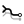 | Loop Input Set inputs for Run Loop |
| Loop Output Set outputs for Run Loop | |
| Run Loop Runs the loop from a file. Right click to assign the .gh file. |
Util
| Browse History Browse recorded history from Loop End. | |
| Password Set password for this loop | |
| Time Buffer Tries to suspend thread, so the definition takes some more time to compute. |
Classic
| 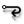 | Loop End End the loop with this one. Double click to pause the loop. |
| 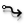 | Loop Start Start the loop with this one. Double click to rerun. |
Fast
| 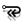 | Fast Loop End Loop End |
| 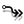 | Fast Loop Start Loop Start |
Surface
| Blendsurface Creates a Blendsurface | |
| Convert to Bezier Converts a Nurbs to a Bezier -> Datatype is still Nurbs but it cracks it down to singlespan parts | |
| Crown Adds curvature to a surface | |
| Face Similar to Rhino Trim, except it can extrapolate cutting curves. It does not change Controlpoints, like the "Realtrim"-component | |
| Fillet Constant Radius Creates a surfacefillet with constant radius | |
| Fit with Projecting Fits a surface via projecting | |
| Fit Surface Fit a surface to another | |
| Flange Normal Extrudes normal from an edge | |
| Flange Vector Extrudes a curve at a certain direction + angle | |
| Ruled Extended Creates a surface from curves. (Mix of ruled & loft) | |
| Surface Extrapolation Extrapolates (extends) a surface | |
| Surface Rebuild Single-span rebuild | |
| Real Trim Surface Align Controlpoints to an Brep (Real Trim) | |
| UVW Flip Flips U-parameter, V-parameter at a surface |
Curve
| Convert Circle Convert an Circle from Nurbs to Bezier | |
| Curve Extrapolation Extrapolates (extends) a curve | |
| Curve Rebuild Single-span rebuild | |
| Fillet Bezierarc Creates an Bezierarc between two intersecting curves | |
| Fillet Nurbsarc Creates an Nurbsarc between two intersecting curves | |
| Fit Curve Fit a curve to another | |
| Real Trim Curve Align Controlpoints to an Object (Real Trim) |
Bezier Primitives
| Bezier Circle Creates a circle (Bezier) | |
| Cylinder Creates a cylinder made of Beziers | |
| CylinderNU Creates a non-uniform cylinder made of Beziers | |
| Ellipsoid Creates an ellipsoid made of Beziers | |
| Sphere Creates a sphere made of Beziers |
Basic functions
| Point On Bezier Creates a point on a Beziercurve inbetween 0 and 1. (DeCasteljau algorithm) |
Info
| Info Provides info about AST-components |
Display
| Display CV Show controlpoints of a geometry |
Curve
| Align Curve Start/End Align curve on a line based on its start/end points. | |
| Assemble Curves Assemble curves based on their start/end points. | |
| Classify Curves Classify curves based on their start/end points. | |
| Curve To Line Start/End Convert curves to lines, based on their start/end points. | |
| Divide Curves on Intersects Divide curves on all of their intersects. | |
| Flip curve toward a point Flip a curve toward a point. | |
| Star Lines Create an simple star and give its lines. |
Wii
| WiiIn Read data from wii controller | |
| WiiOut Send data to wii controller | |
| Wii Start Connect to available wii controllers... |
WebSocket
| Websocket Client Receiver Read data from websocket | |
| Websocket Client Sender Send data to websocket server | |
| Websocket Client Start Connect to websocket server... |
HTTP
| Http Input Start create an http server, listening to an address. | |
| Http Output Send response to client using and close connection. |
Math
| Solar Calculations All of the calculations to get sun properties at specific location, in a specific time. |
Polyline
| BB Boolean Boolean operation between two sets of planar closed polylines | |
| BB Difference Difference of a set of planar closed polylines | |
| BB Intersection Intersection of a set of planar closed polylines | |
| BB Offset Offset a polyline with a specified distance | |
| BB Union Union of a set of planar closed polylines | |
| BB XOR XOR of a set of planar closed polylines |
Crafting
| BB Layer Create a layer model from a mesh | |
| BB Radial Create a radial waffle structure from a mesh | |
| BB Section Create a section model from a mesh | |
| BB Waffle Create a waffle structure from a mesh |
Text
| BB Text Create a single line text |
BullAnt
| ggCatalogueProfile Select Catalogue profile | |
| ggInsertPoint Generate Insertion Point | |
| ggGenerateAngle Generates an Angle Profile | |
| ggGenerateChannel Generates an Channel (U) Profile | |
| ggGenerateCHS Generates an Circular Hollow Section Profile | |
| ggGenerateUnivBeam Generates an Universal Beam ( I ) Profile | |
| ggGenerateRHS Generates a Rectangular or Square Hollow Section Profile | |
| ggBreakDownBlocks Break Blocks down to base geometry and layer names | |
| ggCellFillet Fillets a cell polygon | |
| ggConvCurve Convert Curve to polycurve consisting of lines and arcs | |
| ggPolylineToPolyCurve Convert Polyline to polycurve consisting of lines and arcs | |
| ggCreateTreeFromLists Create Tree from two Lists | |
| ggNetworkFillet Fillets a curve network | |
| ggCurveNetworkForceDensity Force Density application to Curve Network | |
| ggCurveNetworkForceEqLength Force Density application to Curve Network to achieve equal length | |
| ggNetworkPatch Create a curve network patch | |
| ggNetworkPolygons Polygon from Curve network | |
| ggNetworkToMesh Convert a curve network to Mesh | |
| ggConnectPoints Dot to Dot, Truss Style | |
| ggConnectPointSets Dot to Dot in Sets of points | |
| ggDynamicPathMapper Dynamic Path Mapper | |
| ggMeshFalseColor False Color applied to Mesh | |
| ggGeoDome Geodesic Dome | |
| ggInflateMesh Inflate Mesh | |
| ggInflateMeshTargetHeight Inflate Mesh to Target Height | |
| ggInflateSurface Inflate Surface | |
| ggLinesToSegments Split list of lines into colinear segments | |
| ggInflateParams Inflate Params | |
| ggMeshPaths Mesh Paths along face edges | |
| ggForceDensityRelaxParams Force Density Mesh Relaxation Params | |
| ggMeshRepelVerts Force Density Mesh Vertex Repelling | |
| ggMeshResize Resize Mesh | |
| ggForceDensityRelax Force Density Mesh Relaxation | |
| ggOcTree Geometry Gym OcTree | |
| ggPolyCurve Interpolate Poly Curve | |
| ggPolyhedron Generate Polyhedron | |
| ggProximity Points Geometry Gym Proximity Points | |
| ggRemoveDuplicates Make set of curves without duplicates | |
| ggSimplifyPolyline Simplify Polyline by merging co-linear segments | |
| ggCurvesSplitIntersect Split curves at Intersection Locations | |
| ggTrussType Truss Type: 0 - PRATT, 1 - WARREN, 2 - VIERENDEEL, 3 - BROWN, 4 - HOWE | |
| ggTessellation Generate Tessellation | |
| ggTrussFromCurves Divide and Connect curves, Truss Style | |
| ggTrussFromCurvesLength Divide and Connect curves by length, Truss Style | |
| ggUnroll Unroll Surface | |
| ggVectorStreams Geometry Gym Vector Streams, work in progress, do not rely on results as may change in future revisions | |
| ggProfileOnCurve Orients Profile on Curve | |
| ggCreateSectionProp Create Structural Section Property | |
| ggSweepProfile Sweeps Profile on Curve |
Util
| Carve Perform boolean operations on two meshes using the Carve library. |
Polyline
| Polyline Boolean Boolean operation between 2 sets of curves | |
| Polyline Containment Tests if a point is inside a Polyline | |
| Minkowski Difference Calculate the minkowski difference of two Polylines | |
| Minkowski Sum Calculate the minkowski sum of two polygons | |
| Polyline Offset Offset a polyline curve |
Cocoon
| Brep Charge Metaball charge from Brep | |
| Cocoon Wrap geometry with marching cubes | |
| Curve Charge Metaball charge from curve | |
| 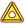 | Curve Group Charge (Group Charge) Metaball charge for group of curves |
| Point Charge Metaball point charge | |
| Refine Refine the output from cocoon |
Spawn Types
| Box Spawn Uses a box to contain the creepers spawn area in 2D or 3D | |
| Curve Spawn Uses a curve to contain the creepers spawn area in 2D or 3D | |
| Spawn_Mesh Uses a mesh as a spawn point for the creepers in 2D or 3D | |
| Point Spawn Uses a list of points as starting positions for the creepers in 2D or 3D |
Behaviors
| Mesh CrawlerBehavior Settings Settings for the Mesh Driver | |
| Noisy Crawler Settings Settings for the Noisy Crawler Perlin System | |
| Swarmy Crawler Settings Settings for the Swarmy Crawler Swarm System |
SelfOrg
| Self_Org Self Organization of Curve Networks | |
| Self_Org Settings Settings for Self Organization of Curve Networks | |
| Mesh Settings Settings for Self Organization of Curve Networks |
CreepyCrawlers
| CreepyCrawlers 2d/3d Flocking/Perlin System | |
| Init Settings Sends the init settings to the Creeper Engine. |
Search
| Navigator Intelligent Space Navigator |
Display
| Visual Settings Controls the visual settings for the Creeper Engine Outputs |
Geometry
| Bandidos Band making creepers |
DIVA Thermal
| Construction Assembly This component must be used to assign constructions assemblies to zone geometry before that geometry can be passed on to the 'Viper' component for thermal analysis | |
| Shade Use this component to create one or a group of external shading objects (overhangs, trees, surrounding buildings, etc.). | |
| Read Saved Thermal Results This component reads the results of saved thermal simulation projects | |
| Viper: DIVA Thermal Analysis for GH This component performs a single-zone thermal simulation using EnergyPlus, an open- source software operated by the US Department of Energy (http://apps1 | |
| Window Unit This component must be used to assign window unit constructions to window geometry before that geometry can be passed on to the 'Viper' component for thermal analysis |
DIVA Daylight
| DIVA Daylight Analysis for GH This component runs a DIVA Daylight analysis with Grasshopper Geometry | |
| Material This component must be used to assign materials to geometry before that geometry can be passed on to the 'Analysis' component for the selected daylight analysis | |
| Analysis Grid Subdivides geometry into analysis nodes, vector directions, and corresponding mesh faces for visualization. | |
| Legend Display a Legend for the analysis results which is oriented to the active viewport |
Solar Tools
| Solar Envelope Creates a buildable envelope for a given boundary curve based on the latitude and time of solar access for an entire year | |
| Solar Fan Creates a no-obstruction envelope which ensures solar access for sites like parks, landscaping, etc... | |
| Solar Position Calculator Finds sun location and creates the solar vectors for a given location and time General Solar Position Calculation adopted from Radiance. |
Massing Tools
| FAR Calculator Estimates the Floor-Area-Ratio of a Massing given its Site. Also scales Massings to a FAR goal. |
Field
| Construct Tensor Field (ConstructTF) Constructs a tensor field | |
| Custom Field (CustomField) Generate a user-defined vector field | |
| Deconstruct Tensor Field (DeconstructTensField) Deconstruct a tensor field into a connectivity mesh and a list of tensors | |
| Discrete Field (DiscrField) Generate a continuous field from a discrete vector set | |
| Field From Mesh (FieldFromMesh) Generates a field based on a mesh's principal curvature | |
| Field From Surface (FieldFromSurface) Generates a field based on a surface's principal curvature | |
| Field Potential (FieldPotential) Provided the field is conservative, this calculates the potential in each pointas the negative of the work done by a particle from the sampling point (A) to the source (B) | |
| Image Charge (ImageCharge) Create a field due to an image charge | |
| Point Trajectory (IntegFieldPoint) Find the trajectory of a point in a field | |
| Integrate Vector Field (IntegrateVectField) Integrate a given vector field | |
| Integrate Tensor Field (IntegrateTFMesh) Integrate Tensor Field on Mesh | |
| Path on Object (PathOnObj) Integrate a field using an object as a constraint | |
| Rotate Tensor Field (RotateTF) Description | |
| Smoothen Field (Smoothen a field) See html help in the component | |
| Iso-Potential Surface (IsoPotSurf) Calculates the iso-potential surfaces of a field | |
| Tensor Field - Vector (TFtoVF) Calculate a vector field from a tensor field and a single direction The resulting vector will be V(x) = TF(x) * D, where M is the tensor field in a point and D the direction given | |
| Tensor Field - Vector (TFtoVF2) Creates a vector field by multiplication with a Vector Field The resulting vector will be V(x) = TF(x) * VF(x), where M is the tensor field in a point and D the direction given | |
| Tensor Field - Component (TFtoVF2) Creates a vector field by choosing a component of the Tensor Field. By default it takes the first direction. Right-click on the component to change that. |
Mesh
| Convex Hull 3D (ConvexHull3D) Create a convex hull 3d from a poiont cloud | |
| Geodesic (GeodesicMesh) Geodesic on a mesh | |
| Integrate Mesh Curvature (IntegrateMshCrv) Integrates the principal directions field of a mesh | |
| Iso Mesh (IsoMesh) Creates and Iso Mesh | |
| Mesh Curvature (MeshCrv) Find the curvature field of a mesh | |
| Umbilic Points (UmbilicPoints) Find umbilc points on a mesh | |
| Voxels Samples the field for creating the Voxels |
kd-Tree
| Construct Node Value (ConKDNodeVal) Construct a kd-Node with a value associated to it | |
| Construct Node (ConKDNode) Construct a kd-Node | |
| Construct Tree (ConKDTree) Construct a kd-Tree | |
| Deconstruct Node (DeConKDNode) Deconstruct a kd-Node | |
| Nearest Neighbours Hypercube (NearKDNCube) Finds kdNodes in a hypercube | |
| Nearest Neighbours Distance (NearKDNNum) Finds kdNode within a certain distance from a given one | |
| Nearest Neighbours Number (NearKDNNum) Finds n nearest neighbours to the specified kdNode |
Other
| Dancing Banana (Banana) A funny dancing banana | |
| Series from List (SeriesList) Create a series of numbers having the same length of the given list | |
| Group Numbers (GroupNums) Group numbers | |
| Run Executable (RunExec) Run an executable with attributes | |
| Sort Curves (Sort curves) Sort curves along a given curve |
Artificial Intelligence
| Run Neural Network (RunNN) Run data through a trained neural network | |
| Supervised Training NN (SupTrainNN) Supervised training | |
| Unsupervised Training NN (UnsupTrainNN) Unsupervised training | |
| Random Forest (RandomForest) Trains using a random forest algorithm | |
| Prediction NN (Nickname) Description |
Graph
| Generate Graph (GenGraph) Create graph from curves | |
| Find Path (PathGraph) Visualize the shortest path | |
| Graph search (GraphSrch) Find distances in a graph | |
| Generate Network (GenGraph) Create graph from curves |
Surface
| Integrate Curvature Field Integrate Curvature Field | |
| Umbilic Points (UmbilicPoints) Find umbilc points on a surface |
MathNet
| Statistics (Stats) Calculate statistics for a series of numbers |
Doodlebug
| Bring Layer To Front Bring Layer to Front | |
| Close Document Close a specified document | |
| Create Text on Layer Use this component to create text items on a layer. Specify points for point text, or a rectangle for area text. | |
| Curves To Paths Convert Rhino Curves to bezier curve paths in Illustrator | |
| Curve To Path Convert a Rhino Curve to a bezier curve path in Illustrator | |
| Document Bounds Get the rectangle representing the document bounds | |
| Documents Get Open Illustrator Documents | |
| Export Document Export a document to a specified location | |
| Layer By Name Get a layer from a document by name | |
| Get Paths on Layer Gets the Path items on a layer | |
| Layers Get/Create Document Layers | |
| NewDocument Create a new Illustrator Document | |
| OpenFile Open an Illustrator Document | |
| OpenIllustrator Opens Illustrator and retrieves the running app. | |
| Path Geometry Get the curve / polyline geometry of the path items | |
| Run Script Run script (written in javascript) in Illustrator | |
| ScaleTransforms Map to and from Illustrator document scale. All Doodlebug components take / output points, so this lets you smartly map to and from other units. | |
| Send Layer To Back Send a layer to back of the document | |
| Set Layer Properties Sets the opacity and blend mode of a layer | |
| SetLayerOrder Set the desired layer order for a document | |
| Set Path Properties Set the display properties of Paths |
EdiTree
| Divide List Divide a list into sub-lists by the predefined number (divisor). | |
| Partition List Adv Partition a list into sub-lists by partition size | |
| Split List Multi Split a list into separate parts at a specified index number. Similar to the existing Split List Component, each index indicates the first item in each list. | |
| SubTree Retrieve a specific branch / sub-branches from a data tree. |
Attributes
| Bake Objects Bake objects to Rhino with Rhino attributes and user attributes | |
| Filter By Color Filter Objects by their Color | |
| Filter By Layer Filter Objects by their Layer | |
| Filter By Name Filter Objects by their Name | |
| Filter By Type Filter Objects by their Object Type | |
| Filter By User Attributes Filter objects by their User Attributes | |
| Get User Attributes Read User Attributes from referenced geometry | |
| Get User Value Returns a User Attributes value corresponding to a User Attributes key | |
| Modify Attributes Modify Rhino object attributes | |
| Object Attributes Create a set of attributes to bake with objects | |
| Reference by BakeName Reference objects based on Bake Name and User Attributes | |
| Reference by Color Reference Rhino Objects by Color. Also from worksessions | |
| Reference by Layer Reference Rhino objects by layer. Also from worksessions | |
| Reference by Name Reference Rhino objects by name. Also from worksessions | |
| Reference by Type Reference Rhino Objects by type, also from worksession files | |
| Reference by User Atributes Reference objects from Rhino based on Key-Value attributes | |
| Remove User Text Remove all user text from Rhino Object | |
| Get Rhino Attributes Read native Rhino attributes from referenced object |
04 Annotations
| Define angular dimension Define angular dimension object to send to Elefront bake component | |
| Define Hatch Define hatch object to send to Elefront bake component | |
| Define Leader Define Leader object to Rhino document | |
| Define Linear Dimension Define linear dimension object to send to Elefront bake component | |
| Define Radial Dimension Define radial dimension object to send to Elefront bake component | |
| Define Text Define text object. Right click for more options. | |
| Define Text Dot Define text dot object | |
| Deconstruct Dimension Deconstruct dimension object | |
| Deconstruct Hatch Deconstruct Hatch Object | |
| Deconstruct Text Deconstruct text object |
03 Attributes
| Color Source List Choose color source from the list | |
| Deconstruct Attributes Deconstruct Elefront attributes into its constituent parts | |
| Define Color Define Color | |
| Define Layer Define Layer. It can be assigned to Object attributes, or baked with "Bake Layer" | |
| Get Elefront Attributes Extract all Elefront attributes from an object | |
| Modify RhinoObject Attributes Modify Rhino object attributes | |
| Modify Elefront Attributes Modify attributes of either Referenced Geometry or Elefront Attributes | |
| Define Object Attributes Define a set of attributes to bake with objects | |
| Remove User Attributes Remove all user attributes from Rhino Object |
05 Block
| Define Block Define a Block. Block will be created when baked. | |
| Define Linked Block Define a linked Block. Block will be created when baked. | |
| Deconstruct Block Deconstruct Blocks into constituent parts, plane and block name | |
| Import Linked Block Import Linked Blocks by File Name. Output can be Tansformed using regular Grasshopper component and baked with Grasshopper Bake operation and Elefront Bake Component. | |
| Insert Block Insert Blocks by Block Name. Output can be Tansformed using regular Grasshopper component and baked with Grasshopper Bake operation and Elefront Bake Component. | |
| List Block Folder List all block names from the specified folder | |
| List Block Document List all block names from the rhino document | |
| Reference Block by Name Reference Block Instance by Block Name |
Annotations
| Create angular dimension Create angular dimension object to send to Elefront bake component | |
| Create Hatch Create hatch object to send to Elefront bake component | |
| Create Leader Create Leader object to Rhino document | |
| Create Linear Dimension Create linear dimension object to send to Elefront bake component | |
| Create Text Create text or text dot object to send to Elefront bake component | |
| Create Text Dot Create text or text dot object to send to Elefront bake component | |
| Export objects Export Objects from Rhino. Each tree branch will be output as one file |
07 Data
| Clean Parallel Clean the primary data tree and clean all respective secondary trees in parallel | |
| Create Tree Create tree by specifying a branch path for each item | |
| Duplicate Data Match Duplicate data based on source data tree | |
| Graft Parallel Graft the primary data tree and output all respective secondary objects per item | |
| ShiftMatch Shift a data tree to match the structure with a guide tree | |
| Shortest List Clean Shrink a collection of lists to the shortest length amongst them. Empty lists have length 0 |
Parameter
| Data Description Use this component to guide your data streams on your canvas in an orderly fashion. Use a meaningful description | |
| Block Block Parameter | |
| Extended Geometry Extended Geometry Parameter |
08 Params
| Bake All Elefront Bake all Elefront objects with this button |
02 Filter
| Filter by User Attributes Filter objects by their User Attributes or filter attributes with objects in parallel |
06 Bake
| Bake/Modify Layer Bake or modify Layers to current document |
Elk2
| Location OpenStreetMap and Topograhy | |
| OSM Data Get Point and Tag data from an OSM file. | |
| Topography Generate Topography surfaces from USGS IMG Raster files or from SRTM HGT files. |
Annotation
| Aligned Dimension This component ceates aligned dimensions | |
| Angular Dimension This component creates an angular dimension from circles and arcs. The resulting AngularDimension object can be baked with the Advanced Bake (by blickfeld7.com) Version 0.92 | |
| Diameter Dimension This component creates a diameter dimension from circles and arcs. The resulting RadialDimension object can be baked with the Advanced Bake (by blickfeld7.com) Version 0.92 | |
| Dimensional Chain This component ceates a single dimension or a dimensional chain, when more than 2 points are provided | |
| Edit Dimension This component extracts the numerical value, plane and text from the dimension object | |
| Hatch This component creates a hatch from closed planar curves. The resulting Hatch object can be baked with the Advanced Bake (by blickfeld7.com) Version 0.92 |
Bake
| Advanced Bake Advanced Bake allows to bake all kinds of geometry Objects with attributes (see BakeAttributes and PlotAttributes by blickfeld7 | |
| BakeArrows Add arrowheads as bake attributes to curves. This only works with Advanced Bake (by blickfeld7.com) Version 0.92 | |
| Layer Attributes Layer attributes (by blickfeld7.com) Version 0.92 | |
| Object Attributes for Bake Bake attributes for Advanced Bake (by blickfeld7.com) Version 0.92 | |
| Object Attributes for Plot Bake attributes for Advanced Bake (by blickfeld7.com) Version 0.92 | |
| View Bake and Plot Attributes Prints out all the bake and plot attributes from your geometry. To assign Attributes see BakeAttributes and PlotAttributes by blickfeld7.com Version 0.92 |
Text
| Engrave Text Creates text as a single line curve, ideal for engraving purposes. Version 0.92 | |
| Text 3D Advanced Creates 3D Text with custom color, font and alignment. Version 0.92 | |
| Text Contour This creates Contours from TextEntitys. To make TextEntitys see Text3d Advanced by blickfeld7.com Version 0.92 | |
| Text Dot This component creates a TextDot from location and text. The TextDot object can be baked with the Advanced Bake component (by blickfeld7.com) Version 0.92 |
Utils
| Unroll Unrolls Breps and Surfaces with additional curves and points. by blickfeld7.com | |
| View Direction Gets the vector of the view direction from the active viewport or a specified view. (by blickfeld7.com) Version 0.92 |
Vision
| reacTIVision Listener The reacTIVision Listener draws the position and rotation of each fiducial marker | |
| Kinect V1 Depth To Point Get Points from Kinect Depth Map | |
| Kinect V1 Skeletal Tracker The Kinect V1 Skeletal Tracker will allow tracking of up to two people at a time. | |
| Kinect V1 Color Stream Kinect Color Video Stream | |
| Kinect V1 Depth Stream Kinect Depth Video Stream | |
| Kinect V2 Skeleton Tracker The Kinect V2 Skeletal Tracker will allow tracking of up to six people at a time. | |
| Kinect V2 Mesh Reconstruction Returns a reconstructed colored mesh based on the color/depth information from the Kienct sensor. | |
| Kinect V2 Video Stream Stream video data from the Kinect sensor. | |
| Bitmap Sampler Sample a Firefly Bitmap based on an incoming set of points for a specified filter type. | |
| Exposure (Accumulative) Temporally add color information to a Firefly Bitmap. | |
| Additive Time Lapse Additive Time Lapse | |
| Bitmap Decompose Decompose a bitmap into its constituent channels | |
| Bitmap Info Statistics about a Firefly Bitmap. | |
| Bitmap Layers Bitmap Layers | |
| Bitmap Painter Bitmap Painter | |
| Bitmap Recompose Recompose a bitmap from its constituent channels | |
| Snapshot Save a snapshot of a Firefly Bitmap | |
| Snapshot Sequence Create a sequence of image snapshots | |
| Bitmap Threshold Using the Average Dithering, find the threshold color quantization of an image. | |
| Bitmap Tracer Spawn a series of particles which trace the edges of a bitmap using the nearest contour vector | |
| Blur Blur a Firefly Bitmap. | |
| Color Correction Modify the color properties (red, green, blue) for a Firefly Bitmap. | |
| Contour Vector Generate a Contour Vector for a Firefly Bitmap. | |
| Contrast Modify the contrast of a Firefly Bitmap. | |
| Convolution Filter Create your own filter based on a 3x3 convolution matrix (kernel). | |
| Edge Detection Find edges in a Firefly Bitmap. | |
| Emboss Emboss a Firefly Bitmap. | |
| Image Region Extract a smaller region within a Firefly Bitmap | |
| Video Averages Find movement vectors and color averages within an area of a Firefly Bitmap. | |
| Flip Image Flip or Mirror a Firefly Bitmap. | |
| Gamma Correction Specify the Gamma Correction for a Firefly Bitmap. | |
| Gradient Vector Generate a Gradient Vector for a Firefly Bitmap. | |
| Resize Bitmap Change the resolution of a Firefly Bitmap | |
| Invert Invert a Firefly Bitmap. | |
| Load Bitmap Load Bitmap | |
| Mesh From Image Create a mesh where the height of the mesh is determined by the brightness of a Firefly Bitmap. | |
| Exposure (Movement) Temporally add movement information (in greyscale) to a Firefly Bitmap. | |
| Optical Flow Generate an Optical Flow for a Firefly Bitmap. | |
| Replace Color Replace a color in a Firefly Bitmap. | |
| Brightness and Saturation Modify the brightness and saturation properties of a Firefly Bitmap. | |
| Sharpen Sharpen a Firefly Bitmap. | |
| Swirl Vector Generate a Swirl Vector for a Firefly Bitmap. | |
| Test Color Test whether a color is included within a second list of colors | |
| Video Player Load or play a movie or video file. | |
| Leap Finger Tracker Return frame information from LEAP sensor |
Utility
| Binary Blink Oscillates 0's and 1's based on an incoming pattern of integers | |
| Buffer Store the last number of values based on the buffer domain | |
| Constrain Constrains a number to a specific numeric range. | |
| Data Log Create a log of incoming data. | |
| Fader One Way Fade between one value to another based on a time interval (ms). Use the GH_Timer component (Parameters/Special/Timer) to update the Fader values in real-time. | |
| Fader Two Way Fade between a minimum and maximum value based on the fade in and fade out time interval (ms). Use the GH_Timer component (Parameters/Special/Timer) to update the Fader values in real-time. | |
| Playback Retrieve a text file and return individual lines at a given frame rate. | |
| Smoothing Moving Average Find the Mean Smoothing value (or average) based on a sampling level (number of samples to average). Larger sample sizes result in greater smoothing | |
| AND Flip Flop The AND flip-flop differs from the NOR flip-flop in the sense that the output gate is determined by its present output state as well the states of both of its inputs | |
| Bang Detects when an input boolean has switched states. The equivalent of a 'Bang' component in other programs like MAX/MSP, Pd, and VVVV. | |
| Counter Counts upwards and downwards. | |
| Frame Rate Time in milliseconds since the data was updated. | |
| Is Geometry Selected Test whether or not some Rhino geometry is selected. | |
| Is Key Pressed Test whether or not a specified key has been pressed on the keyboard. | |
| NOR Flip Flop The NOR flip-flop has two inputs, namely, a Set input (S) and a Reset (R) input | |
| PID Calculates the error value as the difference between a measured process variable and a desired set point. | |
| State Detection Used when you want to detect when something has switched from LOW to HIGH (0 or 1) or vice versa. For more information see: http://arduino.cc/en/Tutorial/ButtonStateChange | |
| Stop Watch Elapsed time in milliseconds since the stop watch was started | |
| Smoothing Temporal This smoothing algorithm returns a smoothed value that is the sum of the weighted average of the previous observations and the current value. |
Arduino & I/O Boards
| Due Read This component will read values to all corresponding digital and analog pins on an Arduino Mega board | |
| Due Write This component will write values to all corresponding digital pins on an Arduino Due board. | |
| Mega Read This component will read values to all corresponding digital and analog pins on an Arduino Mega board | |
| Mega Write This component will write values to all corresponding digital pins on an Arduino Mega board. | |
| Open/Close Port Open or Close the Serial Port Connection | |
| COM Ports Available Check to see which COM Ports are curretly available | |
| Serial Read (Generic) Retrieve a value coming over the serial port. Use the Timer component (Parameters/Special/Timer) to update the sensor values. | |
| Serial Write (Generic) Write a string value to the Serial Port. | |
| Uno Read This component will read values to all corresponding digital and analog pins on the Arduino Uno board | |
| Uno Write This component will write values to all corresponding digital pins on an Arduino Uno board | |
| Wii Nunchuck This component will read all of the sensor values from the Wii Nunchuck. | |
| Code Generator This component will attempt to convert a Grasshopper definition into Arduino compatible code. The code can be simultaneously saved as a .ino file to be opened in the Arduino IDE. | |
| Convert Degrees To Steps Convert an angle value in degrees to the appropriate amount of steps to move a Stepper Motor. | |
| Quad Stepper Motor Stream This component will stream data to control up to four stepper motors. |
Networking
| OSC Listener OSC Listener. | |
| OSC Sender OSC Sender. The OSC Sender will automatically format incoming data into the appropriate OSC format and send the message over a UDP port to a specified IP address. | |
| UDP Listener UDP Listener. | |
| UDP Sender UDP Sender. The UDP Sender will automatically send any message (string) over a UDP port to a specified IP address. | |
| XML Search Search an XML file (either from the web or from a local directory) for a specific element tag |
Audio
| Sound Capture Capture the audio frequencies from the left and right channel from an input (eg. microphone). | |
| Frequency Spectrum Map the incoming frequency spectrum | |
| Note To Frequency Generate frequency from notes. For more information visit http://en.wikipedia.org/wiki/Piano_key_frequencies | |
| Tone Generator Create tones based on incoming frequencies |
FlowL
| Equi2D Calculates 2D equipotentiallines of a vectorfield projected onto World_xy_plane (implementation of RK4) | |
| StreamLines2D Calculates 2D streamlines of a vectorfield projected onto World_xy_plane (implementation of RK4) | |
| StreamLines2DVortex Calculates 2D streamlines of a vectorfield projected onto World_xy_plane (implementation of RK4)with optional vortexes | |
| StreamLines3D Calculates 3D streamlines of a vectorfield (implementation of RK4).Streamlines are everywhere tangent to the vectorfield |
ExcelReadWrite
| ExcelDynamicRead Read data dynamically from excel | |
| ExcelStaticRead Read data statically from excel | |
| ExcelWrite Write data to excel |
UDP
| Network Source Discovers an external internet connection, and retrieve name and properties if one is available | |
| OSC Channel Store OSC data from a single source | |
| OSC Dispatch Store OSC data from multiple sources | |
| UDP Receiver Allows to receive data on the network | |
| UDP Sender Allows to send data through the network to any computer |
XML
| Read Pachube This component reads a Pachube Feed | |
| Pachube Update Updates a Pachube Feed | |
| Xml Parser Parses an XML File | |
| Write XML Writes a data in a Grasshopper Tree to an XML file |
GEO
| Get Elevation Given WGS84 coordinates, this component will return the elevation(s) | |
| Format Geo Formats WSG84 coordinates | |
| Geo to XYZ Map WSG84 Coordinates to XYZ |
KML
| KML Exporter Export from Rhino model to KML format | |
| KML Style KML Object Attributes: Fill Color, Line Color, Line Width |
#
| Spreadsheet Reader Import spreadsheet data to GH | |
| Spreadsheet Writer Write GH Data to a Spreadsheet |
Geo
| XYZ to Geo Map XYZ Coordinates to WSG84 |
Uncertainty
| Biased Distributer This is useful for allocating a set of input points to different branch of a output point-tree based on some attractor point called Jellum,so the points bias to belong to a branch related to the nearer Jellum | |
| Careless Range Divide a domain into careless equivalent parts and return the numbers | |
| Cheater Dice Unequal chance item Dice | |
| Noise Oscillator Noise Oscillator(streaming noise) | |
| Point Emitter Emit a bunch of point from each source point (You can also use F5 key or Grasshopper Timer to refresh the component) | |
| Chancy Allocator Allocating Items to the random branch by defining the chance of each branch. so each item tents to belong to the branch with higher chance. | |
| Curve Emitter Emit a bunch of point from each curve source (You can also use F5 key or Grasshopper Timer to refresh the component) | |
| Dice Rolling N number dices from a list of possibilities (You can also use F5 key or Grasshopper Timer to refresh the component) | |
| Random Direction Create random unit vectors(You can also use F5 key or Grasshopper Timer to refresh the component) | |
| Random Position Random position bounded in a rectangle, if input a value into Z, positions randomly translate along the rectangle normal vector in the limit of the value. | |
| Attractor Geometrical Possibility Calculate the possibility of existing points by their adjacency to set of attractors | |
| Geometrical Possibility Calculate the possibility of existing points by value of each of points | |
| Randomize Numbers Randomize Numbers by percentage | |
| Random Vector Create random vectors in random direction with a length in a specific domain (You can also use F5 key or Grasshopper Timer to refresh the component) | |
| Random Generate random number (You can also use F5 key or Grasshopper Timer to refresh the component) | |
| Seed Generator Generate a unique seed number each time it's recalled (You can also use F5 key or Grasshopper Timer to refresh the component) | |
| Slingshot Allocator Allocate each item of one list to random branches, it can make it by three different algorithm for distribution items | |
| Wandering Vector Generating multiple live wandering vectors |
Tools
| Group Group reference geometries in rhino scene | |
| DicAllocator Allocate each item to specific index of branches | |
| Branch Allocator Allocate each item to a specific string for each branch | |
| Ovulate Bake separate items ordered in a grid ,you can use ye button or use F5 key to ovulate new one (You can also use F5 key or Grasshopper Timer to refresh the component) | |
| Text Baker Bake a String | |
| Encryption/Decryption Encrypt and Decrypt a string with a password (key string) | |
| Stream Gate Allow streaming data if 'Pass' parameter is true | |
| GenePool Controller Controlling Interval and the number of slider in a GenePool, by introducing the Nickname of the GenePool | |
| HeteroDispatch Dispatch the items in a list into multiple target lists based on a pattern of indexes | |
| Quick Baker Just Bake! | |
| Replacer Replace a Rhino-object with another geometry | |
| PickSelection Pick selected objects in rhino | |
| Transform Transform a geometry in rhino by a transform information | |
| Android UDP listener Android UDP Listener via 'Grasshopper Controller : https://play.google.com/store/apps/details?id=be.bernaerdt.grasshoppercontroller . (You need using Gh_Timer to run the run the component) | |
| Unicode Generating Unicode Character | |
| Tools_PointNumber Numerize a list of points |
Maths
| Closest Numbers Find a set of closest Numbers to a specific number (The closest numbers in set D to number S) | |
| InCommon Numbers Retrieve 'Greatest common divisor' and 'Least common multiple' from a set of integers | |
| Numbers Biaser Bias a set of number by conic function | |
| Hetero Mapper External Graph mapper | |
| Min/Max Extract the minimum and the maximum value of a list of number | |
| Intersect Domain Calculate an interval by intersecting two intervals | |
| Interval Expand Expand or shrink a domain | |
| Number Digitizer modularize(digitize) a number by specific Scope size | |
| Number Gridizer Put number in a grid with a specified max column number and return the row number and the column number | |
| List Normalizer Normalize a list of numbers | |
| Number Limiter Limit a number within a specific domain | |
| Intervals Subtract Calculate the result of subtraction from a set of domains by another set of domains | |
| Symmetrical Domain Generate the symmetrical domain based on 'O' and length of 'X' | |
| Symmetrical Extend BiExtend or shrink a domain with symmetrical value | |
| Intervals Union Merge and union a set of domains |
Geometry
| Curve Planarizer Planarizing a curve | |
| Center Return the center of a geometry and the min/max dimension based on a plane | |
| Evaluate Rect Evaluate a rectangle at normalized{uv} parameter | |
| Rectangle Grid Create a grid of points using a rectangle | |
| Jellum Bulger Bulge set of points by some Jellum points | |
| Modularpoints modularize(digitize) a point by specific Scope size | |
| Incestuous Network Create a simple Incestuous Network between adjacent points | |
| Variable Sweep Quick variable single section sweep | |
| Hetrosweep Quick single section sweep | |
| Jellum Attractor Quick multi-attractor to return a congestive value between 0~1 by curves or points | |
| Nonincestuous Network Create a Nonincestuous-Network between adjacent points | |
| Pro. Attractor Advanced multi-attraction system for finding a Congestive value | |
| Geometric Region Create Regions from a list of curves | |
| AttractorII Advanced multi-attraction system for finding a Congestive value |
Animate
| Baking Capture Bake objects and take an auto naming capture shot from, it's useful for creating animation, using viewport graphical-style | |
| Capacitor Multi-Step Buffer | |
| Capture Auto-naming Viewport Capture (You can also use F5 key or Grasshopper Timer to refresh the component) | |
| Mass Additive Numbers Buffer Each time recall it, it add the input number with the previous inputted number | |
| Oil.Can create a List-Tap, each time you call the component it will drop next item of the list (You can also use F5 key or Grasshopper Timer to refresh the component) | |
| TapBuffer Return an increasing number, each time that the component is called (You can all use Internal timer , trigger button , F5 key or Grasshopper Timer to refresh the component) | |
| TimeShifter shift a list of changing data to n step before in its history | |
| Trailer Generate a set of lines from each point of current list to their peers from previous list of points | |
| Mass Additive Vectors Buffer Each time recall it, it add the input vector with the previous inputted vector | |
| Camera Crane Adjusting the active or the specified viewport camera | |
| Mesh Traveler Mass additive Vector buffer considering a mesh as a constrain | |
| Camera Story Create a storyline for camera Right click on the component's icon to choose proper 'Interpolation mode' among five possible options (CatmullRom/ Cosine Smooth/ cubic Smooth/ LinearChange/ NearestNeighbour) and set 'Value Mode' to Normalized if needed | |
| GlitchReduction Deglitching/Smoothing streaming numbers (replacing irrelevant number with the previous relevant one) |
Networks
| Construct HyperIndex Constructs a hyperIndex | |
| Inter Topology Topology of connected nodes of different branches | |
| Rebuild Network Recreate Line from topology or convert different type of network topology | |
| Non-incestuous Network Create a Non-incestuous-Network between adjacent points | |
| Point Enumerator Enumerate lists of points | |
| Network Region Create Regions from network topology | |
| Network From Lines Create a network from a set of crossing lines | |
| Topological Region Create Regions from network topology | |
| Network Path Finder Find the closest path in network to the given curve | |
| Network Editor Edit the topology of a network or create a network by topology | |
| Topology Graph Display Display a network connection topology |
Utilities
| Item Pick Select Items in Data-Tree a checklist by a checklist form | |
| Capture Baked Bake objects and capture auto-naming shots from them, it's useful for creating animation, using viewport's graphical-style | |
| Key Allocator Allocate each item to a specific string for each branch Right click on branch allocator icon and choose "Preserve Structure" if you want to maintain data's structure and just add Sub Branches to the main Branches | |
| Index Allocator Allocate each item to specific index of branches Right click on branch allocator icon and choose "Preserve Structure" if you want to maintain data's structure and just add Sub Branches to the main Branches | |
| Dispatch / Unweave Dispatch the items in a list into multiple target lists based on a pattern of indexes Right click on HeteroDispatch icon and Choose "Purge Outputs" option to remove useless Output parameters | |
| Pick Selection Pick selected objects in rhino and aslo it's able to use double click on component in order to call Reset | |
| Value Allocator Allocate each item to specific branches by the position of its value within the range Right click on branch allocator icon and choose "Preserve Structure" if you want to maintain data's structure and just add Sub Branches to the main Branches |
Streaming
| Agent Display Generate a set of lines from each point of current list to their peers from previous list of points (if N>1 output is represented in Tree-Structure) | |
| Event Gate This component is aware of receiving new data, it means that as the new single data receives it responses as various aspects in kicking and outputs | |
| Event Switch Boolean toggle responding to the first True value after a False It can prevent downstream kicks by menu option | |
| Stream Freeze/Gate Allows streaming data or don't, controlling by Gate parameter | |
| Agent Trailer Generate a set of lines from each point of current list to their peers from previous list of points |
Geometrical
| Shell From Grid Create Surface,Mesh or net from a Tree of points | |
| Number Grid Put number in a grid with a specified max column number and return the row number and the column number | |
| Attractor Quick multi-attractor to return a congestive value between 0~1 by curves or points | |
| Bio Attractor Advanced multi-attraction system for finding a Congestive value |
Topology
| Topology Analyzer Recreate Line from topology or convert different type of network topology | |
| Topo Region Create Regions from network topology | |
| Net From Lines Create a network from a set of crossing lines | |
| PathFinder Find the closest path in network to the given curve |
10 | Energy | Energy
| EP context Surfaces prepare shading/context geometries | |
| Run Energy Simulation Use this component to export HBZones into an IDF file, and run them through EnergyPlus | |
| Adaptive Comfort Analysis Recipe Use this component to assemble an adaptive comfort recipe for the "Honeybee_Annual Indoor Comfort Analysis" component | |
| Add Internal Mass to Zone Use this component to assign internal thermal masses to zones, which can be used to account for the effects of furniture inside zones or massive building components like hearths and chimneys | |
| Balance Temperature Calculator Use this component to calculate a rough building (or zone) balance temperatrue from a Honeybee energy simulation | |
| Color Surfaces by EP Result Use this component to color zone surfaces based on EnergyPlus data out of the "Honeybee_Read EP Surface Result" component | |
| Color Zones by EP Result Use this component to color zones based on EnergyPlus data out of the "Honeybee_Read EP Result" component or zone comfort analyses out of the comfort calculator components | |
| Construct Energy Balance This component accepst the outputs of the "Read EP Result" and the "Read EP Surface Result" components and outputs a data tree with all of the building-wide energy balance terms | |
| Energy Shade Benefit Evaluator This is a component for visualizing the desirability of shade in terms of energy simulation results by using solar vectors, the outdoor temperature, and the simulation hating load, cooling load, and beam gain | |
| Energy Simulation Par EnergyPlus Shadow Parameters | |
| EnergyPlus Window Shade Generator Use this component to generate shades for Honeybee zone windows | |
| Export To OpenStudio Use this component to export HBZones into an OpenStudio file, and run them through EnergyPlus | |
| Generate EP Output This component helps select simulation outputs that can be hooked into the "Honyebee_Export to OpenStudio" component | |
| Indoor View Factor Calculator Use this component to generate test points within a zone and calculate the view factor from each of these points to the other zurfaces in a zone as well as the sky | |
| Lookup EnergyPlus Folder Search Energy Simulation Folder | |
| Make Adiabatic by Name Make Adiabatic | |
| Make Adiabatic By Type Use this component to make certain surface types of a zone adiabatic | |
| Make Adiabatic Make Adiabatic | |
| Matrix to Data Tree This component converts a comfort result matrix into a Grasshopper Data Tree with numerical values | |
| Microclimate Map Analysis Use this component runs an annual comfort assessment off of EnergyPlus results and write all values into csv files | |
| Normalize Data by Floor Area This component takes data that has been output from a simulation and normalizes the results by the floor area of the HBZones | |
| Outdoor Comfort Analysis Recipe Use this component to assemble an adaptive comfort recipe for the "Honeybee_Annual Indoor Comfort Analysis" component | |
| PET Analysis Recipe Use this component to assemble an adaptive comfort recipe for the "Honeybee_Annual Indoor Comfort Analysis" component | |
| PMV Comfort Analysis Recipe Use this component to assemble an adaptive comfort recipe for the "Honeybee_Annual Indoor Comfort Analysis" component | |
| Re-run IDF This is a component for running a previoulsy-generated | |
| Re-run OSM This is a component for running a previoulsy-generated | |
| Read EP Custom Result This component reads the results of an EnergyPlus simulation from the "Export to OpenStudio" Component or any EnergyPlus result | |
| Read EP HVAC Result This component reads the results of an EnergyPlus simulation from the WriteIDF Component or any EnergyPlus result | |
| Read EP Result This component reads the results of an EnergyPlus simulation from the WriteIDF Component or any EnergyPlus result | |
| Read EP Surface Result This component reads the results of an EnergyPlus simulation from the WriteIDF Component or any EnergyPlus result | |
| Read HVAC Sizing This component parses an | |
| Read Microclimate Matrix This component reads the results of an Adaptive Indoor Comfort Analysis | |
| Read Result Dictionary This component parses an | |
| ShadowPar EnergyPlus Shadow Parameters | |
| Simulation Control Use this component to set EnergyPlus Simulation Controls such as whether to run certain types of HVAC sizing calculations, etc | |
| Surface Data Based On Type Detailed Use this component to separate grafed lists of surface data that come out of the "Honeybee_Read EP Surface Result" component based on rough surface type | |
| Surface Data Based On Type Use this component to separate grafed lists of surface data that come out of the "Honeybee_Read EP Surface Result" component based on rough surface type | |
| Thermal Autonomy Analysis Use this component to calculate 'Occupied Thermal Comfort Percent' (occTCP) and 'Thermal Autonomy' (TA) from the resultd of a Microclimate Map Analysis | |
| Visualize Microclimate Map Use this component to produce a colored mesh from a comfResultsMtx |
00 | Honeybee
| addHBGlz Use this component to add a custom glazing surface to a HBSurface or HBZone | |
| AskMe Use this component to get basic information on Honeybee Objects, whether they are HBSrfs or HBZones | |
| ChangeHBObjName Change Honeybee Object Names | |
| createHBSrfs Create a Honeybee surface, which can be plugged into the "Run Daylight Sumilation" component or combined with other surfaces to make HBZones with the "createHBZones" component | |
| createHBZones Create an HBZone from HB Surfaces | |
| Decompose Based On Boundary Condition Decompose zone surfaces by boundary condition | |
| Decompose Based On Type Use this component to break down the geometry of your zone by the surface type | |
| DecomposeHBZone Decompose Honeybee Zone | |
| Dump Honeybee Objects Dump Honeybee Objects Use this component to dump Honeybee objects to a file on your system | |
| Get or Set HB Object Name Change Honeybee Object Names | |
| Glazing based on ratio Use this component to generate windows for a HBSurface or HBZone based on a desired window-to-wall ratio | |
| Glazing Parameters List Use this component to generate lists of glazing ratios, breakUp diatance, window heigths, sill heights, or vertical glazing splits for the four primary cardinal directions | |
| Honeybee This component carries all of Honeybee's main classes | |
| IntersectMasses Use this component to take a list of closed breps (polysurfaces) that you intend to turn into HBZones and split their component surfaces to ensure that there are matching surfaces between each of the adjacent zones | |
| Label Zone Surfaces Use this component to lablel HBSurfaces or HBZones with their names or energy/daylight properties in the Rhino scene | |
| Label Zones Use this component to lablel zones with their names in the Rhino scene | |
| Load Honeybee Objects Load Honeybee Objects Use this component to load Honeybee objects from a file on your system | |
| Masses2Zones Use this component to take any list of closed breps and turn them into Honeybee Zones with all of the properties needed to run them through an energy simulation | |
| Mirror Honeybee Mirror Honeybee Objects | |
| Move Honeybee Move Honeybee Objects | |
| OpenFileDirectory Ues this component to Open a file/directory in windows explorer | |
| orientHBGlz Use this component to set the orientation(s) of the glazing | |
| PerimeterCoreZoning Separate zones into perimeter and core | |
| Remove Glazing Remove Glazing | |
| Rotate Honeybee Rotate Honeybee Objects | |
| Scale Honeybee Scale Honeybee Objects Non-Uniformly | |
| Select by Type Select surfaces by type | |
| Separate By Normal Separate surfaces by normal | |
| Separate conditioned and unconditioned zones Separate zones into conditioned and unconditioned | |
| Separate Zones By Floor Separate zones based on floor height | |
| Separate Zones By Orientation Separate zones based on orientation | |
| Separate Zones By Program Separate zones based on zone program | |
| Skylight Based on Ratio Use this component to generate windows for a HBSurface or HBZone based on a desired window-to-wall ratio | |
| Solve Adjacencies Solve adjacencies | |
| SplitBuildingMass Use this component to divide up a brep (polysurface) representative of a complete building massing into smaller volumes that roughly correspond to how a generic EnergyPlus model should be zoned | |
| Surface Attribute List Provides a list of surface attributes to choose from and plug into the Honeybee_Label Surfaces Component | |
| Zone Attribute List Provides a list of preset values to choose from | |
| Item Selector Allows you to select an item or items from an input list |
04 | Daylight | Daylight
| Convert HDR to GIF Convert HDR to GIF | |
| Convert HDR to TIF Convert HDR to TIF | |
| Convert IMG Convert Image | |
| Convert TIF to HDR Convert HDR to TIF | |
| Daysim Annual Profiles Read Daysim Annual Profiles | |
| Daysim Electrical Lighting Use Daysim's electrical lighting use | |
| Daysim Occupancy Generator Based On List Daysim Occupancy Generator Daysim calculates the outputs for the hours that the space is occupied | |
| Daysim Occupancy Generator Daysim Occupancy Generator Daysim calculates the outputs for the hours that the space is occupied | |
| Daysim shading group sensors Daysim shading group sensors Read here for more information about Daysim sensors here: http://daysim | |
| Daysim User Profiles Daysim User Profiles Read here for details: http://daysim | |
| FalseColor False Color | |
| Glare Analysis Glare Analysis This component is using evalglare for glare calculations | |
| Import dgp File Import Annual Daylight Glare Probability | |
| Import Pts File Import Radiance Test Grid | |
| Import rad Import a rad file to gh This component is just a proof of concept for now and needs major modifications | |
| Lighting control Recipe Daysim electrical lighting control | |
| Lookup Daylighting Folder Search Simulation Folder | |
| MSH2RAD Convert a mesh to RAD file | |
| Read All the Hourly Results from Annual Daylight Study Read the results of the annual study for a all the hours of the year for all the points | |
| Read Annual Result I Read Annual Daylight Results I [Standard Daysim Results] | |
| Read Annual Result II Read Annual Daylight Results II [Daysim] | |
| Read DS Result for a point Read Daysim result for a test point | |
| Read Hourly Results from Annual Daylight Study Read the results of the annual study for a single hour of the year | |
| Read RAD Result Read Radiance Results | |
| Refine Daylight Simulation Refine simulation for an existing Radiance scene ( | |
| Run Daylight Simulation export geometries to rad file, and run daylighting/energy simulation | |
| Set Exposure for HDR Set Exposure for HDR |
13 | WIP
| Apply OpenStudio Measure This component applies an OpenStudio measure to an OpenStudio file | |
| Condensation calculator Use this component to calculate the Dew Point, Relative Humidity and Condensation on each layer of a wall | |
| Customize EnergyPlus Objects Customize EnergyPlus Objects [NOT READY YET!] | |
| ExportEPC Export to Energy Performace Calculator (EPC) | |
| Extrude Windows Extrude pseudo walls from window polygons | |
| gbXML to Honeybee Import gbXML files as Honeybee zones | |
| generationsystem Use this component to create a Honeybee generator system | |
| Generator_PV Provided by Honeybee 0 | |
| Generator_Wind_Horizontialaxis Provided by Honeybee 0 | |
| GrizzlyBear Grizzlybear exports Honeybee zones to gbXML file | |
| Import idf import an idf file to gh This version only imports the geometries Constructions, schedules and systems will be neglected | |
| Load OpenStudio Measure This component loads OpenStudio measureds into Honeybee | |
| OpenStudio to gbXML Use this component to export OpenStudio model to gbXML file | |
| Read_generation_system_results This component reads the results of an EnergyPlus simulation from the WriteIDF Component or any EnergyPlus result | |
| simple_Inverter Provided by Honeybee 0 | |
| SplitBuildingMass2Floors Use this component to divide up a brep (polysurface) representative of a complete building massing into floors | |
| SplitFloor2ThermalZones Use this component to divide up a brep (polysurface) representative of a building floor into smaller volumes that roughly correspond to how a generic EnergyPlus model should be zoned | |
| Visualise_Honeybeegeneration_cashflow Use this component to the calculate and visualise the financial value of Honeybee generation systems over 25 years |
01 | Daylight | Material
| Add to Radiance Library Add Radiance Materials to Library | |
| Call from Radiance Library Call Radiance Materials from Library | |
| Radiance BSDF Material Radiance BSDF Material Create RADIANCE BSDF material | |
| Radiance Glass Material By Color Radiance Glass Material By Color Read more here to understand Radiance materials: http://www | |
| Radiance Glass Material Radiance Glass Material Read more here to understand Radiance materials: http://www | |
| Radiance Materials Info Radiance Materials Info | |
| Radiance Metal Material By Color Radiance Metal Material By Color Create a Standard Radiance Metal Material | |
| Radiance Metal Material Radiance Opaque Material Create a Standard Radiance Opaque Material | |
| Radiance Mirror Material By Color Radiance Mirror Material By Color Read more here to understand Radiance materials: http://www | |
| Radiance Mirror Material Radiance Mirror Material Read more here to understand Radiance materials: http://www | |
| Radiance Opaque Material By Color Radiance Opaque Material By Color Create a Standard Radiance Opaque Material | |
| Radiance Opaque Material Radiance Opaque Material Create a Standard Radiance Opaque Material | |
| Radiance Trans Material By Color Radiance Trans Material This component is useful to create translucent materials | |
| Radiance Trans Material Radiance Trans Material This component is useful to create translucent materials | |
| Set Radiance Materials Radiance Default Materials |
08 | Energy | Set Zone Properties
| Lighting Density Calculator Use this component to calculate the Lighting Density Per Area Load from information about your bulb, fixture type, mainteneance, and required lighting level | |
| AddEarthtube Use this component to add an Energy Plus earth tube to a Zone | |
| Create EP Ground Use this component to change the properties of a zone to refelct those of a ground | |
| Create EP Plenum Use this component to turn a HBZone into a 'Plenum Zone' with no internal loads | |
| infORventPerArea Calculator Use this component to transform ACH or inifitration per area of facade to m3/s-m2 | |
| Set EnergyPlus Zone Loads Use this component to change the occupancy, lighting, equipment, etc | |
| Set EnergyPlus Zone Schedules Use this component to change the schedules of your HBZones | |
| Set EnergyPlus Zone Thresholds Use this component to set Zone Thresholds like daylighting thresholds and setpoints | |
| Set EP Air Flow Use this component to edit the airflow between your zones's air walls and/or set natural ventilation | |
| Set EP Surface Construction Add Glazing | |
| Set EP Zone Construction Update EP construction of zone based on type | |
| Set EP Zone Interior Construction Set EP Zones Interior Construction | |
| Set EP Zone Underground Construction Update EP construction of zone based on type | |
| Set Loads And Schedules Set schedules and loads for zones based on program |
06 | Energy | Material | Construction
| Add to EnergyPlus Library Add EnergyPlus Material, Construction or Schedule to Library | |
| Call from EP Construction Library Call from EP Library | |
| Decompose EP Construction Decompose EnergyPlus Construction | |
| Decompose EP Material Decompose EnergyPlus Material | |
| EnergyPlus Construction Use this component to make your own EnergyPlus construction | |
| EnergyPlus Glass Material Use this component to create a custom material for glass, which can be plugged into the "Honeybee_EnergyPlus Construction" component | |
| EnergyPlus NoMass Opaque Material Use this component to create a custom opaque material that has no mass, which can be plugged into the "Honeybee_EnergyPlus Construction" component | |
| EnergyPlus Opaque Material Use this component to create a custom opaque material, which can be plugged into the "Honeybee_EnergyPlus Construction" component | |
| EnergyPlus Shade Material Use this component to create a custom material for shades, which can be plugged into the "Honeybee_EnergyPlus Window Shade Generator" component | |
| EnergyPlus Window Air Gap Use this component to create a custom material for a window air gap, which can be plugged into the "Honeybee_EnergyPlus Construction" component | |
| EnergyPlus Window Material Use this component to create a custom window material that has no mass, which can be plugged into the "Honeybee_EnergyPlus Construction" component | |
| R-Value With Air Films Use this component to account for air films in the U-Value and R-Value of any decomposed Honeybee construction or material | |
| Search EP Construction Search EnergyPlus construction based on Energy modeling standards, climate zone, surface type and building program |
03 | Daylight | Recipes
| Advanced Dynamic Shading Recipe Advanced Shading Recipe for Annual Simulation with Daysim | |
| Annual Daylight Simulation Analysis Recipe for Annual Daylighting Simulation | |
| Conceptual Dynamic Shading Recipe Conceptual Shading Recipe for Annual Simulation with Daysim You need to add sensor points later in the Daysim result reader | |
| Daylight Factor Simulation Analysis Recipie for Daylight Factor Analysis | |
| Daysim Glare Control Recipe Glare Control Recipe for Annual Simulation with Daysim "Based on exterior illuminance and/or position of the sun" You need to add an external sensor later in the Daysim result reader | |
| Daysim Shading State Daysim Shading State for Advanced Dynamic Shading | |
| DSParameters Analyses Recipe for Annual Daylight Simulation with Daysim | |
| Generate Test Points Genrate Test Points | |
| Generate Zone Test Points Genrate Test Points for all Floor Surfaces in Honeybee Zone | |
| Grid Based Simulation Analysis Recipie for Grid-Based Analysis | |
| Image Based Simulation Analysis Recipie for Image-Based Analysis | |
| RADParameters Radiance Parameters - Standard Check here for more details: http://radsite | |
| Vertical Sky Component Analysis Recipie for Vertical Sky Component, which is typically used to evaluate daylight and sky access in urban areas |
02 | Daylight | Light Source
| Generate Average Sky Generate Average Climate Based Sky This component generate an average climate based data for a single hour during a month | |
| Generate Climate Based Sky Genrate Climate Based Sky This component generate a climate based sky for any hour of the year | |
| Generate Cumulative Sky This component generate a cumulative sky using GenCumulativeSky | |
| Generate Custom Sky Genrate Custom Sky This component generate a custom sky based on user's input | |
| Generate Dark Sky This component generates a dark sky with 0 illuminance | |
| Generate Sky With Certain Illuminance level Genrate a Uniform CIE Sky Based on Illuminace Value | |
| Generate Standard CIE Sky Genrate Standard CIE Sky | |
| IES Custom Lamp This component can be used to specify a lamp of custom chromaticity, color or color temperature | |
| IES Luminaire Zone This component is to be used for specifying the location of luminaires for electric lighting simulations | |
| IES Luminaire This is the core component for adding photometric data into a lighting simulation | |
| IES Project This component is meant for summarizing the details of all the luminaires used in a simulation | |
| Watch The Sky Watch The Sky |
11 | THERM
| Create Therm Boundaries Use this component to create a THERM boundary condition | |
| Create Therm Polygons Use this component to create a THERM polygon with material properties | |
| Custom Radiant Environment Use this component to create a custon radiant environment for THERM boundary condition | |
| Import THERM XML Use this component to read the content of a THERM XML file into Grasshopper | |
| Import WINDOW Glz System Use this component to import the content of a LBNL WINDOW text file report as a series of polygons and boundary conditions that can be plugged into the "Write THERM File' component | |
| Import WINDOW IDF Report Use this component to import an EnergyPlus window construction from LBNL WINDOW | |
| Read THERM Result Use this component to import the colored mesh results from a THERM simulation | |
| Therm Material to EnergyPlus Material Use this component to create a custom opaque material, which can be plugged into the "Honeybee_EnergyPlus Construction" component | |
| Therm Material Use this component to create a custom THERM material, which can be plugged into the "Honeybee_Create Therm Polygons" component | |
| Write THERM File Use this component to write your THERM polygons and boundary conditions into a therm XML that can be opened ready-to-run in THERM |
07 | Energy | Schedule
| Annual Schedule Use this component to generate schedules that can be assigned to HBZones | |
| Call from EP Schedule Library Call from EP Schedule Library | |
| Constant Schedule Use this component to generate a schedule with a constant value or a schedule with 24 values that repeat in the same 24-hour pattern every day | |
| Convert EnergyPlus Schedule to Values Use this component to make a 3D chart in the Rhino scene of any climate data or hourly simulation data | |
| Create CSV Schedule Use this component to write custom | |
| Daily Schedule Use this component to make daily schedules for "Honeybee_AnnualSchedule" | |
| Decompose EnergyPlus Schedule Decompose Schedule | |
| Search EP Schedule Library Filter EP Schedule Library | |
| Seasonal Schedule Use this component to generate a seasonal schedule (aka |
05 | Energy | Building Program
| bldgPrograms Provides a list of available building programs from the template | |
| Get EnergyPlus Loads Look up loads for an specific bldgProgram and zoneProgram | |
| Get EnergyPlus Schedules Look up schedules for an specific bldgProgram and zoneProgram | |
| Get Zone EnergyPlus Loads Look up loads for a Honeybee Zone | |
| Get Zone EnergyPlus Schedules Look up schedules for a Honeybee Zone | |
| ListZonePrograms Find list of spaces for each space based on program |
09 | Energy | HVACSystems
| Assign HVAC System Use this component to assign OpenStudio Systems to your HBZones | |
| HVAC Air Details Use this component to set the parameters of a HVAC ventilation system (or air side) that has been assigned with the "Honeybee_Assign HVAC System" component | |
| HVAC Cooling Details Use this component to set the parameters of a HVAC cooling system that has been assigned with the "Honeybee_HVAC Systems" component | |
| HVAC Heating Details Use this component to set the parameters of a HVAC heating system that has been assigned with the "Honeybee_HVAC Systems" component | |
| HVACSystemsList List of available HVAC templates that can be assigned to HBZones |
12 | Developers
| Update Honeybee This component [removes | updates] Honeybee components from [grasshopper | a source folder] |
yconst.com
| HoopSnake HoopSnake Feedback Component |
Reference
| Explode Blocks Explodes a set of Instance Objects into their proper geometry | |
| Explode Blocks Recursively Recursively explodes a set of Instance Objects into their proper geometry, structured in a Data Tree according to block nesting. | |
| Dynamic Geometry Pipeline Defines a Geometry Pipeline from Rhino to Grasshopper, with variable filters for name, object type, and layer. | |
| Hatch Explode Gets the geometry and properties of a referenced hatch object | |
| LightProperties Reads Light Properties from a Rhino.DocObjects.LightObject | |
| Object Attributes Access the individual attributes of a RhinoObject or an ObjectAttributes type. | |
| Objects By Selection Gets the currently selected objects in Rhino | |
| Sort Objects By Type Sorts a set of Rhino Objects by type and extracts the Geometry for types that already exist in Grasshopper. | |
| Text Object Info Gets the location, orientation plane, alignment, and text from a referenced text object. | |
| Reinstate Tree This component works to bring back data tree structure for referenced geometry that has been baked with "Bake Geometry" with the "Preserve Trees" option enabled. |
Display
| Render Curve to Screen Displays a Curve object in a fixed position on screen | |
| Custom Preview Lineweights Custom Preview with Lineweights | |
| Custom Preview Materials Custom Preview with Materials | |
| Render Mesh to Screen Displays a Mesh object in a fixed position on screen | |
| Render Point to Screen Displays a Point object in a fixed position on screen | |
| Screen-Oriented Mesh Displays a Mesh object that remains consistently oriented relative to the screen | |
| Screen-Oriented Text Displays text that remains consistently oriented relative to the screen | |
| Render Text to Screen Displays a text object in a fixed position on screen | |
| Screen-To-World Tag Creates a special display tag anchored to a location on screen and a location in your model. |
Misc
| Item Selector Allows you to select an item or items from an input list | |
| Convert To Document Units Parses a formatted distance string (like 5'-10") and converts it to numerical format in the active document units. | |
| DeleteOnLayer Deletes all objects on specified Layers, then passes true | |
| Directory Contents Lists the files in a specified directory. | |
| Clickable Mesh Allows you to click in the Rhino Viewport /nto select from a list of meshes. WARNING! /nThis will harvest ALL Rhino mouse clicks - /nwhile enabled you will not be able to use Rhino/nas normal. | |
| Filter By Item Filter a list or lists by a guide list and a subset of that guide list. | |
| Dispatch Multiple Dispatch multiple lists at a time. Only retrieves true values - use invert to get the others. | |
| Save Viewport To File Saves a viewport screenshot or render to a specified filepath. |
Document Info
| Font Table Retrieves the list of system fonts. | |
| Hatch Table Gets the hatches from the active Rhino Document | |
| Linetype Table Gets the linetypes from the active Rhino Document | |
| Material Table Accesses the render materials in the document | |
| Named Views and Display Modes Gets a list of the Named Views and Display Modes in this document | |
| Layer Table Gets the list of layers in the active document | |
| Viewport Properties Get a list of viewports and their properties |
Creation
| Bake Geometry Bake geometry to the document with the specified attributes | |
| CreateAttributes Create Object Attributes | |
| CreateHatch Create Hatch Objects with specified pattern, scale, rotation, and attributes | |
| CreateLight Create Light Object. So far works well for point lights and directional lights | |
| Define Block This component allows you to define or replace a block definition. | |
| JustifiedText3d Creates 3d Text objects with specified size, location, alignment, and font. | |
| PlaceBlock Places a specified block with the desired transform |
Texture Mapping
| BoxMapping Applies a box texture mapping to a mesh. | |
| Custom Mapping Applies per-vertex mesh texture coordinates to a mesh | |
| CylinderMapping Applies a cylindrical texture mapping to a mesh. | |
| PlanarMapping Applies a planar texture mapping to a mesh. | |
| SphericalMapping Applies a spherical texture mapping to a mesh. | |
| SurfaceMapping Applies a surface UV texture mapping to a mesh. |
TreeFrog
| AssignPaths Assigns an arbitrary path structure to a flat list of input data | |
| Graft By Data Adds an additional level of path hierarchy according to the specified indices | |
| MatchPaths Sets a flat list of data to correspond to the tree structure of an input tree | |
| PathDescription Produces a single path description for each item in a tree, in the same structure as the original tree. |
Document Modifications
| Create/Modify Layers Create and Modify Rhino Layers | |
| Create/Modify Materials Create or Edit document Render Materials. | |
| Modify Viewport Use this component to restore a named view in a viewport, set its display mode, or set its camera. | |
| Modify Object Attributes Use this component to modify the object attributes of geometry in Rhino. |
UI Elements
| Create 3D View Creates an orbitable 3d viewport with a custom-defined mesh | |
| Create Browser Creates a web browser window. | |
| Create Button Create a Button object. | |
| Create Checkbox Creates a single checkbox | |
| Create Checklist Creates a listbox containing checkboxes. | |
| Create Color Picker Creates an interactive color picker, with an optionally supplied set of colors | |
| Create Image Creates an image object to be added to the window | |
| Create Label Creates a label in the window. | |
| Create List Box Creates a list box from which items can be selected. | |
| Create Multidimensional Slider Creates a 2D slider ranging from {0,0} to {1,1} | |
| Create Shapes Creates shapes from a polylines | |
| Create Objects from XAML Creates UI elements from typed XAML syntax | |
| Create Pulldown Menu Creates a pulldown menu from which items can be selected. | |
| Create Radio Button Creates a single radio button. Be sure to assign a radio button group for proper switching behavior | |
| Create Rhino Command Button Create a Special Button object to trigger a Rhino command. | |
| Create Shape Creates a simple shape from a polyline | |
| Create Slider Create a slider with a label and a value readout. | |
| Create Text Block Creates a multi-line text block | |
| Create Text Box Create a box for text entry, with a button to pass its value. | |
| Create True-Only Button Create a True only Button object. | |
| Create Data Table Creates a Data Table view | |
| Create File Picker Create a dialog box that lets you choose a path for a file, folder, or save path. | |
| Create Gradient Editor Creates an editable gradient in the UI | |
| Create Markdown Viewer Creates a block of formatted text based on Markdown-formatted input | |
| Create Range Slider Creates a double-slider that describes a range | |
| Create Toggle Creates an on-off toggle. | |
| Create Graph Mapper Creates a Bezier Graph Mapper | |
| Attach Tooltip to Element Attach a tooltip to a UI element |
UI Output
| Set 3D View Allows you to modify the contents of an existing 3D view. | |
| Set 3D View Textured Allows you to modify the contents of an existing 3D view. | |
| Set Browser Control the Browser element - with back/forward buttons, and control over the displayed site etc. | |
| Set Checklist Contents Use this to set the contents of a checklist | |
| Set Image Change the content of an existing Image control. | |
| Set Label Contents Modify the contents of an existing label object. | |
| Set List Contents Use this to set the contents of either a List Box or a Pulldown Menu | |
| Set Shape Replace an existing shape in the window | |
| Set Shapes Replace an existing shape in the window | |
| Set TextBlock Contents Modify the contents of an existing Text Block object. | |
| Set TextBox Contents Modify the contents of an existing Text Box object. | |
| Set Data Table Update the contents of a Data Table | |
| Set Slider Modify the range and value of a slider. | |
| Set 3D View Properties Additional controls for modifying a 3D view | |
| Set CheckBox Modify an existing Check Box object. | |
| Set Expander Sets the properties of an expander container | |
| Set Tabbed View Sets the properties of a tabbed view |
UI Main
| Set Window Properties Modify various properties of a Window. | |
| Add Elements Add WPF Controls to a window | |
| Adjust Element Appearance Adjust the color and appearance of individual elements. | |
| Adjust Element Positioning Adjust the margins, sizing, and other positioning information of an element. Absolute positioning can get a little wonky, use at your own risk. | |
| Capture Window to File Capture a HUI Window to an image | |
| Launch Transparent Window This component launches a new blank, transparent control window. | |
| Get Screen Dimensions Gets the dimensions of the current screen | |
| Hide/Show Element Allows you to hide or show an element | |
| Launch Window This component launches a new blank control window. | |
| Restore Element States Restore the saved states of UI elements | |
| Save Element States This component lets you save the states of selected elements for later retrieval | |
| Value Listener This component is used to retrieve the values of UI elements from the window. By default it will automatically refresh when those values change. | |
| Capture Window or Element to File Capture a HUI Window or individual element to an image | |
| Make Child Window Make one window a child of another | |
| Window Status Gets the current status of the specified Window |
UI Containers
| Create Grid Create a container with absolutely positioned elements | |
| Create Stack Creates a group of UI elements stacked vertically or horizontally. | |
| Create View Box Scale a group of UI Elements by placing them in a ViewBox. | |
| Tabbed View Creates a series of tabbed views that can contain UI element layouts | |
| Create Expander A collapsible expander for content | |
| Create Scroll Viewer Allows an element to scroll independently of the rest of the window | |
| Create Simple Grid Create a container with elements in a grid according to the path structure provided | |
| Create WrapPanel Creates a group of UI elements WrapPaneled vertically or horizontally. |
UI Graphs + Charts
| Create Chart Creates a Chart from Data and Categories. | |
| Create Multi Chart Creates a Multi Chart from sets of Data and Categories. | |
| Set Chart Contents Use this to set the contents of a Chart | |
| Chart Appearance Use this to set the appearnce of a Chart | |
| Set Multi Chart Contents Use this to set the contents of a MultiChart |
Hummingbird
| AdapComps WhiteFeet ModelBuilder - Add Adaptive Components | |
| Beams WhiteFeet ModelBuilder - Add Beams | |
| Columns WhiteFeet ModelBuilder - Add Columns | |
| Families WhiteFeet ModelBuilder - Add Revit Families | |
| 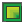 | FilledRegions WhiteFeet ModelBuilder - Add FilledRegions |
| Floors WhiteFeet ModelBuilder - Add Floors | |
| Grids WhiteFeet ModelBuilder - Add Revit Grid Lines | |
| Input WhiteFeet ModelBuilder - Read Input | |
| Levels WhiteFeet ModelBuilder - Add Revit Levels | |
| Lines WhiteFeet ModelBuilder - Add Revit Lines | |
| LoftForms WhiteFeet ModelBuilder - Add LoftForm from Reference Points | |
| MassFamilies WhiteFeet ModelBuilder - Add Mass Family Extrusion | |
| Rooms/Areas WhiteFeet ModelBuilder - Add Rooms & Areas | |
| TopoSurface WhiteFeet ModelBuilder - Add Revit Topo Surface | |
| Walls WhiteFeet ModelBuilder - Add Walls |
Frame
| Basic Box Generates a lattice box. | |
| Basic Cylinder Generates a conformal lattice cylinder. | |
| Conform Surface-Axis Generates a conforming lattice between a surface and an axis. | |
| Conform Surface-Point Generates a conforming lattice between a surface and a point. | |
| Conform Surface-Surface Generates a conforming lattice between two surfaces. | |
| Uniform DS Generates a uniform lattice within by a design space |
Utils
| Clean Network Removes duplicate curves from a network, within specified tolerance. | |
| Preset Gradient Generates gradient string (i.e. a spatial math expression) | |
| Mesh Preview Generates a preview of the mesh. | |
| Mesh Report Verifies that the mesh represents a solid, and returns a comprehensive report. | |
| Adjust UV Adjusts the UV-map of a surface for proper alignment with other surfaces/axes. |
Mesh
| Heterogen Custom Heterogeneous solidification of lattice wireframe | |
| Heterogen Gradient Heterogeneous solidification (thickness gradient) of lattice wireframe | |
| Homogen Homogeneous solidification of lattice wireframe |
Cell
| Custom Cell Pre-processes a custom unit cell by check validity and outputting topology. | |
| Preset Cell Built-in selection of unit cell topologies. |
3|Tree Graph
| DFS Edge Weight Compute the a tree from the graph using a Depth first search based on edge weight | |
| MST with concavity detect Compute the minimum spanning tree for the mesh graph including convex, concave and flat region detection. This uses a modified Kruskal algorithm with weight limits | |
| MST Kruskal Compute the minimum spanning tree for the mesh graph using a modified Kruskal's algorithm | |
| MST Djikstra Compute the minimum spanning tree for the mesh graph using Djikstra's algorithm | |
| MST Prim Compute the minimum spanning tree for the mesh graph using Prim's algorithm | |
| Multi Root MST edge weight Constructs a set of trees based on the given graph | |
| Multi Root MST node weight Constructs a set of trees based on the given graph | |
| Multi Root MST concavity Constructs a set of trees based on the given graph | |
| Shortest Paths in a weighted mesh graph Compute the shortest (Cheapest) path between 2 nodes in a mesh graph using Djikstra's algorithm. Calculation uses edge weight. |
2|Weight Graph
| Color Edge Weight Assign a weight value to graph edges based on the color averaged for an edge. Values will be normalized to the 0...1 interval | |
| Custom Edge Weight Assign a custom weight to graph edges - Warning ! If you reference mesh edges, naked edges will not be considered. Values are normalized in the 0..1 interval | |
| Face Angle Edge Weight Assign a weight value to graph edges based on the agle between the faces conected by an edge. Values will be normalized to the 0...1 interval | |
| Custom Face Weight Assign a custom weight to graph nodes (mesh Faces). Values are normalized in the 0..1 interval | |
| Face Size Node(mesh face) Weight Assign weight to graph nodes based on the area of the mesh faces. Largest faces will have the smallest values. | |
| Face Midpoint Distance Edge Weight Assign a weight value to graph edges based on the distance between the midpoints of the faces the edge conects. Values will be normalized to the 0...1 interval |
9|Other Tools
| NodeGeo to Graph Insert the node geometry into a MeshGraph | |
| GraphStructure Create a set of lines that approximate the graph and have different offsets from the base mesh according to the number of steps from the root | |
| Set Node Geometry Assign geometry (flat curves) to nodes | |
| ThinMesh Create a thiner mesh based on the connections in the MeshGraph | |
| Weave MGraphs Weave two MeshGraph segmentations |
4|Tools Graph
| Cull Graph Duplicates Cull graph duplicates from a graph list. Equality is based on topology | |
| Get deepest nodes Retrieves the deepest nodes in a tree graph. Here the deepest node/nodes are considered the ones that have the longest traceable route to a leaf(edge node) | |
| Graph Equality Test equality between two mesh graphs. Only topological equality is tested | |
| Set Tree Root Set the root of the graph to the specified mesh node |
7|Fabrication
| CustomFlap Create a custom data flap to use for the unroll component | |
| Flat Fabrication Takes care of the fabrication preparation for the parts | |
| SimpleFlap Create a standard simple data flap to use for the unroll component | |
| Flat Fabrication Multi Takes care of the fabrication preparation for the parts. Special version for dealing with complex data structures. Use especially in conjunction with multiple weaved strands |
8|Mesh Info
| EdgeAngle Extracts the dihedral angle of an edge. Only the edges in the graph are used | |
| EdgeTraversal Calculates the traversal distance for an edge of the graph. Here it is the lenght of the polyline connecting the face centers and edge midpoint | |
| EdgeTypes Extracts the edges of the base mesh for the graph based on their use in the graph. Graph Edge or Cut Edge | |
| Orange PEEL Edges Gets a set of edges in the MeshGraph that separate peel layers |
1|Create Graph
| Decompose Graph Outputs the relevant information (geometric and numeric) stored in the MeshGraph object | |
| Graph from Mesh Creates the graph correspondence of a mesh. Faces will be nodes in graph and the mesh topological edges will be the edges in the graph | |
| Graph to Mesh Creates the mesh from the graph nodes(faces) and edges. Only the nodes still present in the graph will be referenced back into mesh faces. |
6|Use Graph
| MeshGraph Unroll Unroll the underlying mesh of a tree graph. | |
| MG_Structure Create a set of lines that approximate the graph and have different offsets from the base mesh according to the number of steps from the root | |
| CreaseMesh Create a set of creases in the faces of the mesh along the edges of the Mesh Graph |
5|Split Graph
| Weight Deviation Split Graph Splits a mesh graph in subgraphs based on whether edge weight is larger than next edge in tree hierarchy | |
| Weight Partition Graph Parts a mesh graph in subgraphs based on whether edge weight falls in the supplied interval | |
| Weight Split Graph Splits a mesh graph in subgraphs based on whether edge weight falls in the supplied interval |
3|Primary Segmentation
| MST Kruskal concavity Compute the minimum spanning tree for the mesh graph including convex, concave and flat region detection. This uses a modified Kruskal algorithm with weight limits | |
| MST Kruskal Valence Compute the minimum spanning tree for the mesh graph using a modified Kruskal's algorithm with max valence preference |
7|Agent Graph
| Agents Programmed Behavior Create a series of trees on the given graph that spread out based on the limits imposed and a programed behavior that switches between two characters Explore and Consume | |
| Agents Control Random Create a series of trees on the given graph that spread out based on the limits imposed and the behavior given as a chance pick between two characters Explore and Consume |
1|Mesh Graph
| Graph Edges Outputs the relevant information (geometric and numeric) stored in the MeshGraph object edges | |
| Graph Nodes Outputs the relevant information (geometric and numeric) stored in the MeshGraph object nodes |
5|Iterative Segmentation
| K-Means Clustering Splits a mesh graph (not a tree) in an iterative fashion based on a number of parts specified by the user |
8|Visualize Graph
| Visualize_Graph Create a visualization of the graph using the base mesh |
0|Param
| Mesh Graph Parameter for storing a collection of mesh graphs |
6|Special Segmentation
| MeshGraph Visual Unroll Unroll the underlying mesh of a tree graph on the object itself as a from finding technique. |
Forces
| Align Force 2 line segments towards being parallel | |
| Bend Bending resistance acting on an angle defined by 3 points | |
| BoxCollide Collisions between fixed orientation boxes | |
| TetrahedralElement A constant strain tetrahedral finite element | |
| TriangularElement A constant strain triangular finite element | |
| CurvePull Constrain or pull points to a curve | |
| Developablize adjust the angles around a vertex to make it developable | |
| EqualizeAngles Apply bending type forces to equalize several angles | |
| Equalize Equalize the lengths of a list of lines | |
| TangentIncircles Adjusts the edge lengths of a pair of joined triangles, so that their incircles become tangent | |
| FD Linear Force Density element | |
| GString Geodesic string for controlling membrane mesh edges | |
| Hinge Bending resistance between 2 triangles | |
| Hydro Depth dependent pressure | |
| GasVolume Exert volume dependent pressure on a mesh, according to Boyle's law | |
| Laplacian Laplacian smoothing | |
| LevelSet Pull particles towards a particular scalar value in a field generated by point charges (metaballs) | |
| LineLine Interaction betwen a pair of line segments | |
| CollideMesh Keep particles either inside or outside a Mesh | |
| Mirror Pull points A and D toward each other's mirror image. The mirror plane is halfway along and normal to the line between B and C | |
| Planarize Flatten a quadrilateral | |
| PowerLaw Attraction or repulsion forces as a function of distance | |
| PointLine A force between a point and a line | |
| Pressure Area dependent pressure acting on a triangle | |
| ProjectedForce A force between 2 points, with a magnitude such that its projection onto a given vector remains constant | |
| PullToMesh Constrain or pull particles to a surface | |
| PullToSurf Constrain or pull particles to a surface | |
| Rocket Thrust acting along a line defined by 2 points | |
| Shear Takes a plane normal to a vector from 2 points and pulls a 3rd point toward that plane | |
| SoapFilm Soap-film triangular element | |
| SphereCollide Collision between many spheres, optimized for speed | |
| SpringsFromLine Create Hooke's law springs | |
| CollideSurf Keep particles either inside or outside a Brep | |
| TranslationLock Link 2 particles so they always maintain the same translation from each other | |
| AreaWeight Dynamic weight triangle - applies a vertical load on each of its corners proportional to its tributary area | |
| UnaryForce A vector force acting on a point | |
| Vortex Rotational force about an axis | |
| Wind Wind vector acting on a triangle |
Utility
| CPMesh Optimize a mesh towards a CP mesh ( tangent incircles ) | |
| EdgeBend Keeps the boundary of a mesh straight | |
| Gravity Apply gravity to vertices of a mesh | |
| HydroMesh Apply depth dependent pressure to a mesh | |
| MeshCorners Finds the corners of the boundary of a mesh | |
| MeshPressure Applies pressure to a triangulated mesh | |
| MeshSmooth Apply Laplacian Smoothing to a mesh | |
| Origami Fold a flat pattern into 3d origami | |
| PlanarityDisplay Creates colours for each face of a mesh, showing planarity levels | |
| PlanarizeQuads Applies a planarization force to any quads in a mesh | |
| PolyLineBend PolyLineBend | |
| PolySpring Turn a polyline into springs | |
| ReciprocalStructure Turn a mesh into a reciprocal structure and optimize for tangency | |
| Rheotomic Surface Tool for generation of rheotomic surfaces and flow lines | |
| Shell Give a mesh bending stiffness. AngleFactor sets the rest state - 0 is flat, 1 keeps the original angles | |
| SpringsFromMesh Turns all edges of a mesh into springs | |
| TangentCircles A compact circle packing from a flat mesh | |
| Wheel Create a motorized wheel | |
| WindMesh Applies wind to a mesh | |
| FoldAngle Measure the current angle between two triangles about their common edge | |
| interconnectPoints Draws one line between every pair of points in a list | |
| Gears Simulate interacting gears or cams (1-directional dependency) | |
| removeDuplicateLines Removes similar lines from a list. | |
| Planarity Measure of planarity for quads | |
| removeDuplicatePts Removes similar points from a list | |
| Trail Draw a trail of a point's motion |
Mesh
| Corners Find the boundary corner points of a quad mesh | |
| ByParent Refine a Mesh, separating outputs by parent face | |
| Checkerboard Attempt to separate a mesh into 2 lists of non-adjacent faces | |
| Diagonalize Replace each edge with a new face | |
| HingePoints Get the 4 points for each internal edge to use in a Hinge Force | |
| Combine&Clean Combine and Clean a list of meshes, removing unused and duplicate vertices | |
| MeshDirection Sort the face directions of a mesh | |
| MeshMap Map points from one mesh to another | |
| MeshTurn Rotate the vertex order of each face | |
| NakedVertices Sorts the vertices of a mesh into 2 lists according to whether or not they are surrounded by faces | |
| QuadDivide Divide all quadrilateral faces of a mesh into smaller quads | |
| Reciprocal Turns a mesh into a reciprocal structure. Use line-line force to optimize | |
| Refine Divide each quad into 4 quads, and each triangle into 4 triangles | |
| RefineStrips Directional subdivision, refines quads in one direction only | |
| ReMesh WIP remeshing component | |
| Stripper Divide a mesh into strips | |
| Unroller Unroll a strip of quads | |
| VertexNeighbours Returns the positions of the vertices connected the given vertex by an edge | |
| WarpWeft Separate the edges of a mesh into 2 lists according to Warp and Weft direction | |
| MeshMachine Remeshing tool |
Kangaroo
| KangarooPhysics Kangaroo Physics Engine v0.099 | |
| ZombieKangaroo A 'non-live' version to be used without the timer. Performs either a set number of iterations or continues until an energy threshold is reached | |
| AnchorSpring Fix a point to its starting location with a spring | |
| AnchorXYZ Constrain particle position along any combination of X,Y,Z axes | |
| Counter Connect a Timer to this and it increments by 1 with every update | |
| Kangaroo Settings Kangaroo Settings | |
| Particle For free particles or Custom Mass and Velocity settings | |
| Sequence Connect to the Reset input to output a time sequence of the simulation | |
| Wave Adjustable Sine function for muscles etc |
Animation
| Transformer Contains a cluster of Grasshopper components |
Goals
| Anchor Anchor | |
| AnchorXYZ Fix a point only along chosen world axes. If you need to reset the initial position, disconnect then reconnect the Point input. | |
| Angle Angle | |
| AngleSnap Snap the angle between 2 lines to the closest whole number multiple of a given value | |
| ClampAngle Keep an angle between 2 lines within a given range | |
| ClampLength Keep length within given bounds | |
| CoLinear CoLinear | |
| Collide2d Collisions between closed polygons in a given plane | |
| Collider Collisions between thickened line segments and spheres | |
| ConstantTension An element which adapts its stiffness to maintain a constant force | |
| CoPlanar CoPlanar | |
| CoSpherical CoSpherical | |
| CurvePointCollide Keep a set of points outside or inside a given 2d curve | |
| CyclicQuad Make a quadrilateral have a circumscribed circle | |
| Direction Align a line segment with a given vector, or if none supplied, the closest of the World XYZ vectors | |
| DynamicWeight1d A load in the negative Z direction, which updates its magnitude according to the length of the line | |
| EqualLength EqualLength | |
| Floor Floor | |
| Hinge Hinge | |
| LengthSnap Snap length to whole number multiples of a given number | |
| MagnetSnap Snap points together according to proximity | |
| OnCurve Keep a point on a given Curve | |
| OnMesh Keep a point on a given Mesh | |
| OnPlane Keep a point on a given plane | |
| Planarize Planarize | |
| PlasticAnchor PlasticAnchor | |
| PlasticHinge Like Hinge, except folding beyond the plastic/elastic threshold will alter the rest angle | |
| PlasticLength This tries to preserve the length of the line elastically, until it is deformed beyond the limit, then its rest length gets changed | |
| PolygonArea PolygonArea | |
| Pressure A force normal to each triangle, and proportional to its area | |
| RigidBody RigidBody | |
| Smooth Smooth | |
| SoapFilm Area minimizing triangle, for generating zero mean curvature meshes | |
| SolidPointCollide Keep a set of points outside or inside a given Mesh | |
| SphereCollide Collisions between large numbers of equal sized spheres | |
| Length(Line) Length(Line) | |
| TangentialSmooth Smooth a mesh only in the local tangent planes. Used in conjunction with SoapFilm | |
| TangentIncircles TangentIncircles | |
| Transform Keep a given transformation between 2 points | |
| Load Load | |
| Volume Set the total volume of a mesh | |
| Coincident Equivalent to a zero length constraint between a pair of points |
Main
| Show Show | |
| Grab This lets you drag particles in Rhino. Hold Alt key and drag with LMB, or toggle anchors with LMB+RMB | |
| Solver(bouncy) Solver with momentum | |
| Solver The main component where Goals are combined and applied | |
| ZombieSolver A version of the solver component which keeps all iterations internal, and outputs the final result |
Utilities
| User Iso-Lines (karamba) Returns iso-lines at intersection point of given line with shell based on user supplied values. | |
| User Stream-Lines (karamba) Returns stream lines at intersection point of given line with shell based on user supplied tangent vectors. | |
| Principal States Transformation (karamba) Transforms given principal vectors of stresses, moments or in-plane forces to an arbitrary direction. | |
| Get Cells from Lines Get closed cells from a set of lines | |
| Line-Mesh-Intersection (karamba) Calculates the number of intersections between given lines and a mesh. | |
| Detect Collisions (karamba) Returns number of collisions between given mesh and model. | |
| Element Felting (karamba) Felts elements of a model. | |
| Line-Line Intersection (karamba) Intersects given lines and returns resulting end-points and pieces. | |
| Mesh Breps Meshes multiple Breps. Allows to include manifold edges and points. | |
| Nearest Neighbors (karamba) Connects each node to a given number of nearest neighbor nodes or neighbors within a specified distance. | |
| Nearest Neighbors Multi-Dimensional (karamba) Performs a multidimensional neighborhood search on a set of vectors. | |
| Remove Duplicate Lines (karamba) Eliminates identical lines from the given set of lines. | |
| Remove Duplicate Points (karamba) Eliminates identical points from the given set of points. | |
| Simplify Model (karamba) Simplifies a model by straightening the connecting elements between nodes that connect to more than two neighbor nodes. | |
| Interpolate Shapes (karamba) Interpolates between a base geometry (0.0) and given shape(s) (1.0). | |
| Mapper (karamba) Applies mappings (like Simple Stitch) to a model. | |
| Stitches (karamba) Creates all types of stitches that connect beam sets by a preset number of elements. |
Results
| Beam View (karamba) Lets you set the display properties of beams and trusses. Plug it into the definition after a ModelView-component so that you can fine-tune the model display with it. | |
| Model View (karamba) Lets you inspect the current state of the model. Plug it into the data pipeline in front of 'Beam View' or 'Shell View' to control the overall model display. | |
| Shell View (karamba) Lets you inspect the current state of the shells in a model. Plug it into the definition after a ModelView-component so that you can fine-tune the model display with it. | |
| Principal Strains Approximation (karamba) Approximates the principal strain directions from the model deformation at arbitrary points. | |
| Beam Displacements (karamba) Returns displacements along beams: translations/rotations in global x-, y-, and z-direction; rotations about global x-, y- and z-axis. | |
| Beam Forces (karamba) Retrieves section forces for all beam elements of the model. | |
| Beam Resultant Forces (karamba) Retrieves maximum resultant section forces for all beam elements of the model. | |
| Deformation-Energy (karamba) Retrieves deformation energies of the elements of the model. | |
| Utilization of Elements (karamba) Returns the utilization of beams or shells for each load case according to Eurocode 3 | |
| Nodal Displacements (karamba) Returns nodal displacements: translations/rotations in global x-, y-, and z-direction; rotations about global x-, y- and z-axis. | |
| Reaction Forces (karamba) Returns reaction forces and moments at supports. | |
| Shell Forces (karamba) Retrieves section forces for all shell elements of the model. The considered loadcase is that set at the nearest upstream ModelView-component. | |
| Line Results on Shells (karamba) Returns results as lines painted on the shell mesh. The considered loadcase is that set at the nearest upstream ModelView-component. | |
| Result Vectors on Shells (karamba) Returns results as vectors. The considered loadcase is that set at the nearest upstream ModelView-component. |
Model
| Connectivity to Beam (karamba) Creates beams with default properties from given connectivity diagram | |
| Disassemble Element (karamba) Decomposes beams and shells into their components. | |
| Make Element-Set (karamba) Puts elements designated by their element identifier into a group. | |
| Index to Beam (karamba) Creates beams with default properties from given node indexes. | |
| Line to Beam (karamba) Geometry is assumed to be given in [m] | |
| Mesh to Shell (karamba) Geometry is assumed to be given in [m] | |
| Orientate Beam (karamba) Sets the local Z-axis according to a given vector and adds a rotation angle DAlpha [deg] about longitudinal axis.Flips beam direction according to given x-vector. | |
| Select Element (karamba) Selects elements according to given criteria and puts all incoming beams in two groups: selected or rejected. | |
| Modify Element (karamba) Modifies all types of elements or creates element modifiers that do this when the model is assembled. | |
| Point-Mass (karamba) Attaches a point mass to a node of given index or position. Does not result in additional weight, only inertia! | |
| Assemble Model (karamba) Creates a finite element model from given entities (points, beams, supports, loads, cross sections, materials,... ). | |
| Connected Parts (karamba) Lists the connected parts of the active line elements of a model. | |
| Disassemble Model (karamba) Decomposes a model into its components | |
| Activate Element (karamba) Activates the elements of a model according to the activation list. Uses soft kill approach for inactive elements. |
Cross Section
| Eccentricity on Beam (karamba) Sets the eccentricity of a cross section relative to the element axis in global coordinates. | |
| Cross Sections (karamba) Creates all types of cross sections. | |
| Disassemble Cross Section (karamba) Retrieves properties of a cross section. | |
| Eccentricity on Cross Section (karamba) Sets the eccentricity of a cross section relative to the element axis in local beam coordinates. | |
| Beam-Joints (karamba) Add hinges at the end-points of beams. | |
| Beam-Joint-Agent (karamba) Sets a hinge at the connection of a beam to another element or node. | |
| Cross Section Matcher (karamba) Returns for a cross section the best fitting cross section contained in a given list. The matched cross section is equal or better in all mechanical aspects at minimum weight. | |
| Cross Section Selector (karamba) Lets you select cross sections by name or regular expression from a list of cross sections. | |
| Cross Section Range Selector (karamba) Lets you select cross sections by country, shape, family or maximum depth or width. | |
| Read Cross Section Table from File (karamba) Reads cross section data from a csv-file. | |
| Generate Cross Section Table (karamba) Converts a list of cross sections into a string which can be streamed as a csv-file and used as a cross section table. | |
| Modify Cross Sections (karamba) Modifies all types of cross sections. |
Algorithms
| AnalyzeThI (karamba) Calculates the deflections of a given model using first order theory for small deflections. | |
| AnalyzeThII (karamba) Calculates the deflections of a given model using second order theory for small deflections. | |
| BESO for Beams (karamba) Bidirectional Evolutionary Structural Optimization for beam structures. | |
| Buckling Modes (karamba) Calculates the buckling modes of the given model under a specified load case and the buckling load factors. Returns positive buckling load factors only. | |
| Eigen Modes (karamba) Calculates the eigen modes of the given model according to the special eigenvalue problem. | |
| Large Deformation Analysis (karamba) Does incremental geometrically non-linear analysis for loads in load case zero. | |
| Natural Vibrations (karamba) Calculates the natural vibrations of the given model. | |
| Optimize Cross Section (karamba) Selects optimum cross sections for beams and shells in the model according to EC3 (EN 1993-1-1) for steel structures. | |
| Tension/Compression Eliminator Removes elements under axial tension or compression. By default compression members will be removed. |
Params
| Cross-section (karamba) Cross-section properties of a beam or shell; definition of joints for a beam | |
| Element (karamba) Beam, truss, shell or spring element | |
| Load (karamba) External load for a statical system | |
| Material (karamba) Material for static calculations | |
| Model (karamba) Structural model. | |
| Support (karamba) Support with or without prescribed displacements | |
| ElementSet (karamba) Collection of elements |
Material
| Read Material Table from File (karamba) Reads a list of materials from a table given in csv-format. | |
| Material Properties (karamba) Sets the characteristic parameters of a material. | |
| Material Selection (karamba) Lets you select a materials by name or regular expression from a list of materials. |
Load
| Disassemble Mesh Load (karamba) Converts mesh-loads to point- and element-loads. | |
| Loads (karamba) Creates all types of loads for a structural model. | |
| Prescribed Displacement (karamba) Prescribes displacements at nodes of given node-indexes or node-coordinates |
Export
| Export Model to DStV (karamba) Exports model to DStV file. A DStV-file is a STEP-derivative issued by the 'Deutscher Stahlbau-Verband'. Can be imported by e.g. RStab. |
License
| License (karamba) Informs you about and lets you manage your current license. Right-click on the icon and you can save your machine-id or load a license via the context menu. |
5 | Extra
| Activities Met List Provides a list of available activites and outputs the metabolic rate of that activity for use in the Ladybug PMV comfort calculator | |
| Adaptive Comfort Parameters Use this component to set Adaptive comfort parameters for the Adaptive Comfort Calculator or the Adaptive Comfort Chart | |
| Beaufort Ranges This component outputs conditional statements as per beaufort scale that you can plug in conditionaStatement_ input of wind rose component | |
| Body Characteristics Use this component to calculate the Basal Metabolic Rate, Body Mass Index indices and to create the "bodyCharacterstics_" input for the "Thermal comfort indices" component | |
| BTU2Wh Use this component to convert energy values in BTU to Wh or kBTU to kWh | |
| BTUft2Whm Use this component to convert energy values in BTU/ft2 to Wh/m2 (or kBTU/ft2 to kWh/m2) | |
| C2F Use this component to convert temperatures from Celcius to Fahrenheit | |
| Capture View Use this component to capture Rhino views and save them to your hard drive as as a | |
| Cfm2M3s Use this component to convert volume flow rate from U | |
| CombineSolarEnvelopes Use this component to combine two or more solar envelopes from Ladybug_SolarEnvelope component | |
| Comfort Mannequin Use this component to color a mannequin based on their relation to a comfort temperature | |
| Construct Time Use this component to construct a specific hour from corresponding time in hours, minutes and seconds | |
| Countour Mesh Use this component to create contoured visualizations of any analysis mesh and corresponding numerical dataset in Ladybug + Honeybee | |
| Create Legend Use this component to create a custom legend for any set of data or to create a more flexible legend for any ladybug component with a legend | |
| Day_Month_Hour Use this component to calculate date information from an hour of the year | |
| DOY_HOY Use this component to calculate the day of the year and hour of the year from an input date with a day of the month, month of the year and hour of the day | |
| F2C Use this component to convert temperatures from Fahrenheit to Celcius | |
| False Start Toggle Just like a normal Boolean Toggle, except it always reverts to "False" on file open | |
| fly Use Fly to cycle through all connected sliders | |
| Generate Mesh Use this component to genrate a mesh with corresponding test points | |
| Gradient Library Use this component to access a library of typical gradients useful throughout Ladybug | |
| L2G Use this component to convert the liquid volume from Liters to U | |
| Legend Parameters Use this component to change the colors, numerical range, and/or number of divisions of any Ladybug legend along with the corresponding colored mesh that the legend refers to | |
| lux2ft-cd Use this component to convert illuminance from lux to foot-candles | |
| M3s2Cfm Use this component to convert volume flow rate from S | |
| Mesh Threshold Selector Use this component to select out the part of a colored mesh that meets a certain conditional statement | |
| Mesh-To-Hatch Use this component to bake a clored mesh into the Rhino scene as a series of colored hatches | |
| MRT Calculator Use this component calculate Mean Radiant Temperature (MRT) given a set of temperatures and corresponding view factors | |
| ms2mph Convert from m/s to mile/h | |
| North Use this component to create a compass sign that indicates the direction of North in the Rhino scene | |
| Orient to Camera Use this component to generate a plane that is oriented perpendicular to the active Rhino viewport camera direction and centered at an input _initPosition point | |
| Orientation Study Parameters Use this component with the Ladybug "Radiation Analysis", "Sunlight Hours Analysis", or "View Analysis" component to set up the parameters for an Orientation Study | |
| Passive Strategy List Provides a list of passive thermal strategies to be plugged into the Ladybug_Psychrometric Chart | |
| Passive Strategy Parameters Use this component to adjust the assumptions of the passive strategies that can be overalid on the Ladybug the Psychrometric Chart | |
| PMV Comfort Parameters Use this component to set PMV comfort parameters for the PMV comfort calculator or the Psychrometric Chart | |
| Real Time Radiation Analysis Use this component to scroll through the results of a Ladybug Radiation Analysis on an hour-by-hour, day-by-day, or month-by-month basis in real time! The component uses a sky matrix (SkyMxt) from the selectSkyMxt component and the intersection matrix (intersectionMxt) from the Radiation Analysis component to calculate real time radiation results | |
| Recolor Mesh Use this component to re-color a mesh with new a numerical data set whose length corresponds to the number of faces in the _inputMesh | |
| Render View Use this component to render Rhino views and save them to your hard drive | |
| rIP2rSI Use this component to convert R-Values in IP (h·ft2·°F/BTU) to R-Values in SI (K·m2/W) to plug into any of the Honeybee material components | |
| Set Rhino Sun Use this component to set the Rhino sun from grasshopper and coordinate your Rhino visualizations with the Ladybug weatherfile and other solar parameters | |
| Set the View Use this component to set the camera location and direction for the Rhino "Perspective" viewport | |
| Shading Parameters List Use this component to generate shading depths, numbers of shades, horizontal or vertical boolean values, and shade angles for different cardinal directions to be plugged into the "Ladybug_Shading Designer" component or the "Honeybee_EnergyPlus Window Shade Generator" | |
| Texture Maker Use this component to generate textures from colored meshes | |
| True North Use this component to calculate Earth's true north from magnetic north | |
| uIP2uSI Use this component to convert U-Values in IP (BTU/h·ft2·°F) to U-Values in SI (W/K·m2) to plug into any of the Honeybee material components | |
| Wh2BTU Use this component to convert energy values in Wh to BTU (or kWh to kBTU) | |
| Whm2BTUft Use this component to convert energy values in Wh/m2 to BTU/ft2 (or kWh/m2 to kBTU/ft2) | |
| ImageViewer Preview image files Please find the source code from: https://github |
7 | WIP
| Bioclimatic Chart This is the Bioclimactic Chart | |
| ENVI-Met Building Terrain Use this component to generate inputs for "LB ENVI-Met Spaces" | |
| ENVI-Met Display Use this component to visualize ENVI-Met v4 | |
| ENVI-Met Find Output Folder This component let you select output folders from Workspace folder | |
| ENVI-Met Grid Use this component to visualize ENVI-Met v4 | |
| ENVI-Met Manage Workspace Use this component to create a Workspace folder | |
| ENVI-Met Read Library This component let you select materials from ENVI-Met library | |
| ENVI-Met Results Reader This component generate readable output files of ENVI-Met v4 | |
| ENVI-Met Soil Plant Source Use this component to generate ENVI-Met inputs for "LB ENVI-Met Spaces" | |
| ENVI-Met Spaces Use this component to generate ENVI-Met v4 | |
| Import CEC Photovoltaics Module Use this component to import Photovoltaics module settings for particular module from "California Energy Commission (CEC) Modules" library | |
| Import Sandia Photovoltaics Module Use this component to import Photovoltaics module settings for particular module from "Sandia National Laboratories Modules" library | |
| Kmz Generator Use this component to export geometries into an Google Earth file | |
| Location Finder This component uses Google Maps API to generate locations | |
| Pedestrian Wind Comfort Use this component to analyse pedestrian wind comfort and safety for the present and potential (newly built) urban environments | |
| Shading Mask_II Use this component to see the portion of the sky dome that is masked by context geometry around a given viewpoint | |
| Shadow Study Use this component to generate outline curves representing shadows cast by input _geometry for a given _sunVector | |
| SunriseSunset Use this component to get information about the sun | |
| Sun_Shades_Calculator Use this component to generate shading devices, either surface or pergola, for any glazed surface or list of glazed surfaces | |
| Terrain Generator This component uses Google Maps API to achieve elevation data and satellite images of the terrain generated |
3 | EnvironmentalAnalysis
| Bounce from Surface Use this component to get a sense of how direct sunlight is reflected off of an initial _sourceSrf and subsequently to a set of context_ geometries by tracing sun rays forwards through this geometry | |
| Comfort Shade Benefit Evaluator This is a component for visualizing the desirability of shade in terms of comfort temperature by using solar vectors, a series of hourly temperatures (usually outdoor temperatures), and an assumed balance temperature | |
| Cone Of Vision Use this component to generate and visualize cones of vision | |
| Forward Raytracing Use this component to get a sense of how sunlight is reflected by a set of context geometries by tracing sun rays forwards through this geometry | |
| Radiation Analysis This component allows you to calculate the radiation fallin on input _geometry using a sky matrix from the selectSkyMxt component | |
| Shading Mask Use this component to see the portion of the sky dome that is masked by context geometry around a given point | |
| ShadingDesigner Use this component to generate shading breps for any glazed surface or list of glazed surfaces | |
| SolarEnvelope Use this component to generate a solar envelope for a given test surface, set of solar vectors, and context geometry that you want to ensure solar access to | |
| SolarEnvelopeBasic Use this component to generate a solar envelope for a closed boundary curve with minimum inputs | |
| SolarFan Use this component to generate a solar fan for a given test surface and set of solar vectors | |
| SolarFanBasic Use this component to generate a solar fan with minimumal input data | |
| Steady State Surface Temperature Use this component to calculate a steady state interior/exterior surface temperature from given given indoor/outdoor air temperatures and surface U-Values | |
| Sunlight Hours Analysis This component calculates the number of hours of direct sunlight received by input geometry using sun vectors from the sunPath component | |
| Surface View Analysis Use this component to calculate view factors from a point or plane to a set of surfaces | |
| View Analysis Use this component to evaluate the visibility of input _geometry from a set of key viewing points | |
| View From Sun Use this component to open a new viewport in Rhino that shows the view from the sun | |
| view Rose Use this component to see the area visible from a given viewpoint across a 2D plane of vision | |
| Window Downdraft Use this component to compute the floor-level downdraft air temperature and velocity at a given set of points that are located close to a cold surface such as a window |
1 | AnalyzeWeatherData
| Adaptive Comfort Calculator Use this component to calculate the adaptive comfort for a given set of input conditions | |
| Analysis Period Use this component to set an analysis period, which can be used as input for a variety of other Ladybug and Honeybee components | |
| Ankle Draft Discomfort Use this component to calculate discomfort from cold drafts at ankle-level | |
| Average Data Use this component to select the data out of an annual hourly data stream (from the importEPW component) using the "Analysis Period" component | |
| Branch Data Use this component to convert any list of annual data into a data tree branched by day of the year, month of the year, or hour of the day | |
| CDD_HDD Calculates heating and cooling degree-days | |
| CDH_HDH Calculates heating and cooling degree-hours | |
| Clothing Function Use this component to generate a list of values representing a clothing schedule based on outdoor air temperature | |
| Draft Discomfort Use this component to calculate discomfort from cold drafts on the back of the neck (arguably the most sensitive part of the human body to cold drafts) | |
| Humidity Ratio Calculator Calculates the humidity ratio from the ladybug weather file import parameters Conversion formulas are taken from the following publications: Vaisala | |
| Outdoor Comfort Calculator Use this component to calculate the Universal Thermal Climate Index (UTCI) for a set of input climate conditions | |
| PMV Comfort Calculator Use this component to calculate comfort metrics of Predicted Mean Vote (PMV), the Percent of People Dissatisfied (PPD), and the Standard Effective Temperature (SET) for a set of climate conditions and occupant behavior/clothing | |
| Radiant Asymmetry Discomfort Use this component to calculate discomfort from radiant assymetry | |
| Separate data Use this component to separate the text strings from the numbers in the climate data streams output from the Import EPW component | |
| Thermal Comfort Indices Use this component to calculate various thermal comfort indices: ------ - HI (Heat Index) - humidex (humidity index) - DI (Discomfort Index) - WCI (Wind Chill Index) - WCT (Wind Chill Temperature) - WBGT (Wet-Bulb Globe Temperature) indoors - WBGT (Wet-Bulb Globe Temperature) outdoors - TE (Effective Temperature) - AT (Apparent Temperature) - TS (Thermal Sensation) - ASV (Actual Sensation Vote) - MRT (Mean Radiant Temperature) - Iclp (Predicted Insulation Index Of Clothing) - HR (Heart Rate) - DhRa (Dehydration Risk) - PET (Physiological Equivalent Temperature) - THI (Temperature Humidity Index) - PHS (Predicted Heat Strain) | |
| WetBulbTemp Use this component to calculate Wet Bulb Temperature and Dew Point Temperature | |
| Wind Speed Calculator Use this component to calculate wind speed at a specific height for a given terrain type |
4 | Renewables
| Cold Water Temperature Use this component to calculate the cold (inlet, mains) water temperature, if water pipes are burried undeground | |
| Commercial Public Apartment Hot Water Use this component to calculate domestic hot water consumption for each hour during a year, for Commercial, Public and Apartment buildings | |
| DC to AC derate factor Use this component to calculate overall DC to AC derate factor for Photovoltaics Surface's "DCtoACderateFactor_" input | |
| Photovoltaics Module Use this component to define the Photovoltaics crystalline silicon (c-Si) module settings | |
| Photovoltaics Performance Metrics Use this component to calculate various Photovoltaics performance metrics | |
| Photovoltaics Surface Use this component to calculate amount of electrical energy that can be produced by a surface if a certain percentage of it is covered with Photovoltaics | |
| PV SWH System Size Use this component to generate the PVsurface or SWHsurface for "Photovoltaics surface" or "Solar Water Heating surface" components, based on initial PV or SWH system sizes | |
| Residential Hot Water Use this component to calculate domestic hot water consumption for each hour during a year, for a single family household (house) | |
| Simplified Photovoltaics Module Use this component to define simplified Photovoltaics crystalline silicon (c-Si) module settings | |
| Solar Water Heating Performance Metrics Use this component to calculate various Solar water heating performance metrics | |
| Solar Water Heating Surface Use this component to calculate amount of thermal energy that can be produced by a surface if a certain percentage of it is covered with Solar water heating liquid collectors | |
| Solar Water Heating System Detailed Use this component to define a detailed Solar water heating system settings | |
| Solar Water Heating System Use this component to define Solar water heating system settings | |
| Sunpath Shading This component calculates the shading of: - Photovoltaic modules - Solar Water Heating collectors - any other purpose (shading of points) | |
| Tilt And Orientation Factor This component calculates the Optimal Tilt, Optimal Orientation and TOF (Tilt and Orientation Factor) for PV modules or Solar water heating collectors |
2 | VisualizeWeatherData
| 3D Chart Use this component to make a 3D chart in the Rhino scene of any climate data or hourly simulation data | |
| Adaptive Comfort Chart Use this component to calculate the adaptive comfort for a given set of input conditions | |
| Colored Sky Visualizer Use this component to visualize a Perez sky as a colored mesh in the Rhino scene using the weather file location, a time and date, and an estimate of turbidity (or amount of particulates in the atmosphere | |
| GenCumulativeSkyMtx This component uses Radiance's gendaymtx function to calculate the sky's radiation for each hour of the year | |
| Import Ground Temp Use this component to visualise ground temperatures throughout the year at specific depths | |
| Monthly Bar Chart Use this component to make a bar chart in the Rhino scene of any monhtly or avrMonthyPerHour climate data or simulation data | |
| Outdoor Solar Temperature Adjustor Use this component to adjust an existing Mean Radiant Temperature for shortwave solar radiation | |
| Psychrometric Chart Use this component to draw a psychrometric chart in the Rhino scene and evaluate a set of temperatures and humidity ratios in terms of indoor comfort | |
| Radiation Calla Dome Use this component to draw Radiation Calla Dome, which shows you how radiation would fall on an object from all directions for a given sky | |
| Radiation Rose Use this component to make a radiation rose in the Rhino scene | |
| selectSkyMtx Use this component to select a specific sky matrix (skyMxt) for an hour of the year or for an analysis period | |
| Sky Dome This component allows you to visualize a selected sky matrix from the selectSkyMxt component in order to see the patches of the sky dome where radiation is coming from | |
| SunPath Use this component to make a 3D sun-path (aka | |
| Wind Boundary Profile Use this component to visualize a wind profile curve for a given terrain type | |
| Wind Rose Use this component to make a windRose in the Rhino scene |
0 | Ladybug
| Construct Location Use this component if you do not have an | |
| Create LB Header Use this component to generates a Ladybug Header that can be combined with any raw data in order to format it for use with the Ladybug/Honeybee components | |
| Decompose Location Use this component to separate and exctract the information in the 'location' output of the importEPW or constructLocation component | |
| download EPW Weather File Use this component to open the epwmap page in your default web browser and download an | |
| Import epw Use this component to import lists of weather data into Grasshopper from a standard | |
| Import Location Use this component to import location data from a standard | |
| Import stat Use this component to import climate data found in the | |
| Ladybug This component carries all of Ladybug's main classes | |
| Open EPW And STAT Weather Files Use this component to automatically download a | |
| Open EPW Weather File Use this component to open an | |
| Open STAT File Use this component to open a | |
| Update File Use this component to update ladybug tools components in an old file |
6 | Developers
| Export Ladybug Code Developers of Ladybug and Honeybee can use this component to export Ladybug/Honeybee user objects and source code that they create to the Github folder on their computer | |
| Update Ladybug Code Developers and Beta Testers of new Ladybug components can use this component to remove old Ladybug components, add new Ladybug components, and update existing Ladybug components from a synced Github folder on their computer |
Util
| Arc Divide Divides a spline curve into tangent arc segments. | |
| Deconstruct Wireframe Organizes a wireframe curve structure into nodes and centerlines | |
| Flatness Check Checks the flatness of a quad panel. | |
| Mesh Edges (with Tolerance) Finds naked mesh edges and edges between faces greater than a specified angle. | |
| Mesh Reduce Reduce mesh polygons to simplify. | |
| Patch Surface Returns a patch surface using a list of edge curves. (Rhino 5 only) | |
| Random Split List Randomly splits a list into two lists. | |
| Rebuild Surface Rebuilds an untrimmed surface using U and V parameters. | |
| Relative Coordinates Returns coordinates of a point relative to a plane. | |
| Reverse Surface Direction Reverse the UV directions of a surface. | |
| Sort Duplicate Breps Sort a list of Breps based on duplicates. | |
| Sort Duplicate Curves Sort a list of curves based on duplicates using document tolerances. | |
| Sort Duplicate Points Sort a list of points based on duplicates. | |
| Sort Duplicate Values Sort a list of numbers or strings based on duplicates. | |
| Unroll Brep Unroll a brep or surface. |
Math
| Enneper Surface Create a parametric Enneper surface. | |
| Helicoid Surface Create a parametric Helicoid surface. | |
| Klein Surface Create a parametric Klein surface. | |
| Mobius Surface Create a parametric Mobius surface. | |
| Hyperbolic Paraboloid Create a parametric paraboloid surface. | |
| Platonic Cube Create a parametric cube with a truncation parameter. | |
| Platonic Dodecahedron Create a dodecahedron. | |
| Platonic Icosahedron Create a parametric icosahedron with a truncation parameter. | |
| Platonic Octahedron Create a parametric octrahedron with a truncation parameter. | |
| Platonic Tetrahedron Create a parametric tetrahedron with a truncation parameter. | |
| Conoid Surface Create Plucker's Conoid surface. | |
| 3D Supershape Create a parametric 3D supsershape | |
| Torus Surface Create a parametric torus surface. |
Panels
| Diamond Panels Creates diamond panels on a surface. | |
| Diamond Grid Creates a diamond corner point grid on a surface. | |
| Hexagon Cells Creates hexagonal cells on surface. | |
| Quad Panels Creates quadrangular panels on a surface | |
| Quad Grid Creates a quad corner point grid on a surface. | |
| Random Quad Panels Creates randomly staggered quad panels on a surface | |
| Staggered Quad Panels Creates staggered quad panels on a surface. | |
| Skewed Quads Creates 'skewed' quadrangular panels on a surface | |
| Triangular Panels A Creates triangular panels on a surface. | |
| Triangle Panels B Creates triangular panels on a surface. | |
| Triangle Panels C Creates triangular panels on a surface. |
Workflow
| Object Bake Bake objects to a layer in the active Rhino document. | |
| Create Layers Create a list of layers in Rhino. | |
| Excel Reader LEGACY Reads an open Excel file. | |
| Excel Reader Reads an open Excel file. | |
| Excel Write LEGACY Write to an open Excel file. | |
| Excel Write Write to an open Excel file. | |
| Launch Application Launch an external application or file | |
| Layer Information Get layer information from the current document. | |
| Layer Reference Reference geometry on layers with GUIDs and Names. | |
| Rhino Command Sends a command to the Rhino command-line. | |
| Object Save Saves geometry to a specified file location. |
Data
| Create Chart Creates a saveable Winform chart. | |
| Create Data Grid Creates a Data Grid view of data. Data can be saved as CSV file. | |
| Create DataSet Create a DataSet | |
| Create DataTable Create a DataTable | |
| Create CSV Create a CSV string | |
| Read CSV Read a CSV string. (Comma Separated Value) | |
| Convert JSON to XML Converts a JSON string to XML. | |
| Read XML by Tag Read XML data by tag. | |
| Convert XML to JSON Converts a XML string to JSON | |
| Create XML Create XML from a Grasshopper tree containing text or numbers. | |
| Create JSON Create JSON from a DataSet |
Machine Learning
| Gaussian Mixture Solver for Gaussian Mixture models. | |
| Hidden Markov Model Solver for Hidden Markov Model problems. | |
| Linear Regression Solver for linear regression problems. | |
| Logistic Regression Solver for Logistic regression problems. | |
| Multivariate Linear Regression Solver for multivariate linear regression problems. | |
| Naive Bayes Classification Solver for Naive Bayes classification. | |
| Neural Network Solver for Neural Network problems. | |
| Restricted Boltzmann Machine Solver for Restricted Boltzmann machines. | |
| Nonlinear Regression Solver for nonlinear regression problems using Sequential Minimal Optimization. |
Structure
| Braced Grid 1-D Structure Creates a 1-Direction braced grid structure on a surface. | |
| Braced Grid 2-D Structure Creates a 2-Direction braced grid structure on a surface. | |
| Diagrid Structure Creates a diagrid structure on a surface. | |
| Grid Structure Creates a simple grid structure on a surface. | |
| Hexagonal Structure Creates a hexagonal structure on a surface. | |
| Space Truss Structure 1 Creates a space truss structure on a surface. | |
| Space Truss Structure 2 Creates a space truss structure using two driver surfaces | |
| 2D Truss Creates a 2-D Truss using a set of edge curves. |
Generate
| Attractor Generates a attractor values using lists of attractors and targets. | |
| Attractor Wave Generates a wave attractor effect using lists of attractors and targets. | |
| Constant Quad Subdivide Subdivides a triangular panel into quadrangular cells | |
| Panel Frame Creates an offset frame using a panel. | |
| Subdivide Quad Subdivides a quad into self-similar cells. | |
| Subdivide Triangle Subdivides a triangle into self-similar cells. |
Subdivision
| Aperture+0 Replaces selected faces of a mesh or the interior of a curve with a frame around the edge by evaluating points from the points along face's edges to its center, creating 0 new points along the edge. | |
| Aperture+2 Replaces selected faces of a mesh or the interior of a curve with a frame around the edge by evaluating points from points along the face's edge to its center, creating 2 new points along the edge and removing the face's vertex | |
| Aperture+3 Replaces selected faces of a mesh or the interior of a curve with a frame around the edge by evaluating points from points along the face's edge to its center, creating 3 new points along the edge and removing the face's vertex | |
| Center+1 Replaces selected faces of a mesh or the interior of a curve with a frame around the edge by creating 1 new points along the edge. | |
| Center+3 Replaces selected faces of a mesh or the interior of a curve with a frame around the edge by creating 3 new points along the edge and removes the face's vertex. | |
| Dense+1 Replaces selected faces of a mesh or the interior of a curve with a frame around the edge by adding a vertex at the face center and creating 1 new point along the edge. | |
| Fan+2 Replaces selected faces of a mesh or the interior of a curve with a frame around the edge by creating 2 new points along the edge and one at its center, removing the face's vertex. | |
| Fan+3 Replaces selected faces of a mesh or the interior of a curve with a frame around the edge by creating 3 new points along the edge and removing the face's vertex. | |
| Frame+0 Replaces selected faces of a mesh or the interior of a curve with a frame around the edge by evaluating a point from the face's vertex to its center, creating 0 new points along the edge. | |
| Frame+1 Replaces selected faces of a mesh or the interior of a curve with a frame around the edge by evaluating points from the face's vertex and edge midpoint to its center, creating 1 new points along the edge | |
| Frame+2 Replaces selected faces of a mesh or the interior of a curve with a frame around the edge by evaluating a point from the face's vertex to its center, creating 2 new points along the edge. | |
| Frame+3 Replaces selected faces of a mesh or the interior of a curve with a frame around the edge by evaluating points from the face's vertex and edge midpoint to its center, creating 3 new points along the edge | |
| Pinwheel+2 Replaces selected faces of a mesh or the interior of a curve with a frame around the edge by creating 2 new points along the edge and removing the face's vertex. | |
| Snub+0 Replaces selected faces of a mesh or the interior of a curve with a frame around the edge by evaluating a point from the face's edge midpoint to its center, creating 0 new points along the edge. | |
| Snub+1 Replaces selected faces of a mesh or the interior of a curve with a frame around the edge by evaluating a point from the face's edge midpoint to its center, creating 1 new points along the edge. | |
| Snub+2 Replaces selected faces of a mesh or the interior of a curve with a frame around the edge by evaluating a point from the face's edge midpoint to its center, creating 2 new points along the edge and removing the face's vertex | |
| Snub+3 Replaces selected faces of a mesh or the interior of a curve with a frame around the edge by evaluating a point from the face's edge midpoint to its center, creating 3 new points along the edge and removing the face's vertex | |
| Stellate+0 Replaces selected faces of a mesh or the interior of a curve with a frame around the edge by adding a vertex at the face center and creating 0 new points along the edge. | |
| T+3 Replaces selected faces of a mesh or the interior of a curve with a frame around the edge by evaluating a point from the face's vertex to its center, creating 3 new points along the edge and removing the face's vertex | |
| Tri Frame+1 Replaces selected faces of a mesh or the interior of a curve with a frame around the edge by evaluating a point from the face's vertex to its center, creating 1 new points along the edge. | |
| Tri Frame+2 Replaces selected faces of a mesh or the interior of a curve with a frame around the edge by evaluating a point from the face's vertex to its center, creating 2 new points along the edge and removing the existing face's vertex | |
| Tri Frame+3 Replaces selected faces of a mesh or the interior of a curve with a frame around the edge by evaluating points from the face's vertex and edge midpoint to its center, creating 3 new points along the edge | |
| X+2 Replaces selected faces of a mesh or the interior of a curve with a frame around the edge by evaluating a point from the face's edge midpoint to its center, creating 2 new points along the edge. |
Analyze
| Connected Edge Angles Returns the angle at each vertex normal of a mesh tested against the vector along each connected edge. | |
| Connected Edge Lengths Returns the cumulative length of each edge connected to a given vertex. | |
| Connected Faces Returns the number of faces connected to each face. | |
| Connected Vertex Normal Angle Returns the angle at each vertex normal of a mesh tested against the connected vertex normals. | |
| Edge Lengths Returns the length for each edge of the mesh. | |
| Edge Shared Face Angles Returns the angle of the faces connected to each edge. | |
| Extract Edges Returns the edge lines and topology vertices in the topology order of the mesh. | |
| Face Edge Lengths Returns the cumulative edge length of each face of a mesh. | |
| Face Normal Direction Returns the angle at each face normal of a mesh tested against a vector. | |
| Face to Face Angles Returns the angle at each face normal of a mesh tested against its connected face normals. | |
| Face Vertex Angles Returns the angle at each face normal of a mesh tested the normals at it's vertices. | |
| Mesh Face Area Returns the area of each face of a mesh. | |
| Topology Vertices Returns the mesh vertices per earch topology vertex of the mesh. | |
| Unitize Mesh Distances Returns a unitized value for each specifed component of a mesh, vertex, face center, or edge midpoint based on its distance to the closest sample index point relative to the furthest point from all sample points | |
| Valence Returns the valence or number of connected vertices to a given vertex. | |
| Vertex Face Angles Returns the angle at each vertex normal of a mesh tested against the connected vertex normals. | |
| Vertex Normal Direction Returns the angle at each vertex normal of a mesh tested against a vector. |
Volume
| Batwing Creates a volumetric mesh from either a single mesh face and depth or between two parallel meshes of idential construction based on the topology of the Batwing adapted with parametric inputs to the geometric proportions within the bounds of each offset pair of mesh faces | |
| Box Creates a mesh which spans two meshes bridging them from either the vertex or edge center | |
| CLP Creates a volumetric mesh from either a single mesh face and depth or between two parallel meshes of idential construction based on the topology of the Schwarz CLP adapted with parametric inputs to the geometric proportions within the bounds of each offset pair of mesh faces | |
| Cross Creates a mesh which spans two meshes bridging them from the face center and connecting faces at either the vertex point or edge centers | |
| D Creates a volumetric mesh from either a single mesh face and depth or between two parallel meshes of idential construction based on the topology of the Schwarz D adapted with parametric inputs to the geometric proportions within the bounds of each offset pair of mesh faces | |
| F-RD Creates a volumetric mesh from either a single mesh face and depth or between two parallel meshes of idential construction based on the topology of the Schoen F-RD adapted with parametric inputs to the geometric proportions within the bounds of each offset pair of mesh faces | |
| F-RDr Creates a volumetric mesh from either a single mesh face and depth or between two parallel meshes of idential construction based on the topology of the Schoen F-RDr adapted with parametric inputs to the geometric proportions within the bounds of each offset pair of mesh faces | |
| F-RDr2 Creates a volumetric mesh from either a single mesh face and depth or between two parallel meshes of idential construction based on the topology of the Schoen F-RDr with higher vertex count, adapted with parametric inputs to the geometric proportions within the bounds of each offset pair of mesh faces | |
| I-WP Creates a volumetric mesh from either a single mesh face and depth or between two parallel meshes of idential construction based on the topology of the Schoen I-WP adapted with parametric inputs to the geometric proportions within the bounds of each offset pair of mesh faces | |
| I-WPr Creates a volumetric mesh from either a single mesh face and depth or between two parallel meshes of idential construction based on the topology of the Schoen I-WPr adapted with parametric inputs to the geometric proportions within the bounds of each offset pair of mesh faces | |
| Nevious Creates a volumetric mesh from either a single mesh face and depth or between two parallel meshes of idential construction based on the topology of the Neovious adapted with parametric inputs to the geometric proportions within the bounds of each offset pair of mesh faces | |
| P Creates a volumetric mesh from either a single mesh face and depth or between two parallel meshes of idential construction based on the topology of the Schwarz P adapted with parametric inputs to the geometric proportions within the bounds of each offset pair of mesh faces | |
| Pa Creates a volumetric mesh from either a single mesh face and depth or between two parallel meshes of idential construction based on the topology of the Schwarz Pa adapted with parametric inputs to the geometric proportions within the bounds of each offset pair of mesh faces | |
| SS Creates a volumetric mesh from either a single mesh face and depth or between two parallel meshes of idential construction based on the topology of the SS adapted with parametric inputs to the geometric proportions within the bounds of each offset pair of mesh faces | |
| Switch Creates a mesh which spans two meshes bridging them from either the vertex or edge center | |
| X&T Creates a volumetric mesh from either a single mesh face and depth or between two parallel meshes of idential construction bridging the vertices to the face center between two mesh faces |
Make
| Cairo Tiling Applies a Mesh to a surface based on the Cairo Tiling tesselation covering its domain, recognizing closure in both the U and V directions when the patterning allows. | |
| Diamond Tiling Applies a Mesh to a surface based on Diamond Tiling tesselation covering its domain, recognizing closure in both the U and V directions when the patterning allows. | |
| Elongated Triangle Tiling Applies a Mesh to a surface based on the Elongated Triangle tesselation covering its domain, recognizing closure in both the U and V directions when the patterning allows. | |
| Fill Mesh Holes Creates a simple fan mesh from an input curve with options for introducing vertex colors | |
| Mesh Loft Creates a mesh from the control points of input curves with multiple methods for defining topology | |
| ngon Mesh This experimental component creates a topology map for mesh comprised of faces of with a vertex count of 3 or higher | |
| Patterned Triangulation Applies a boolean pattern based Triangular Mesh to a surface covering its domain, recognizing closure in both the U and V directions when the patterning allows. | |
| Regular Triangulation Applies a Regular Triangular Mesh to a surface covering its domain, recognizing closure in both the U and V directions when the patterning allows. | |
| Rhombitrihexagonal Tiling Applies a Mesh to a surface based on the Rhombitrihexagonal tesselation covering its domain, recognizing closure in both the U and V directions when the patterning allows | |
| Snub Square Tiling Applies a Mesh to a surface based on the Snubbed Square tesselation covering its domain, recognizing closure in both the U and V directions when the patterning allows. | |
| Truncated Square Tiling Applies a Mesh to a surface based on the Truncated Square tesselation covering its domain, recognizing closure in both the U and V directions when the patterning allows |
Smooth
| Weighted Catmull Clark Subdivision Based off of the implementation of Weaverbird's subdivision, this implementation of Catmull Clark Subdivision introduced the option to modify the weight of smoothing or displacement from origin, of the face, edge, and vertex based vertices | |
| Catmull Clark nGon Subdivision Applies Catmull Clark Subdivision to a list of closed polylines which are treated as the faces and vertices of a nGon mesh. | |
| Doo Sabin Subdivision Applies Doo Sabin Subdivision to a list of closed polylines which are treated as the faces and vertices of a nGon mesh. | |
| Expansion Subdivision Applies Expansion Subdivision to a list of closed polylines which are treated as the faces and vertices of a nGon mesh | |
| Face Center Subdivision Applies Face Center Subdivision to a list of closed polylines which are treated as the faces and vertices of a nGon mesh. | |
| Mid Edge Subdivision Applies Mid Edge Subdivision to a list of closed polylines which are treated as the faces and vertices of a nGon mesh. | |
| Modified Kobbelt Subdivision Applies a modified version of Kobbelt Subdivision which creates new quad faces from a list of closed polylines which are treated as the faces and vertices of a nGon mesh. | |
| Root 3 Subdivision Applies Root 3 Subdivision to a list of closed polylines which are treated as the faces and vertices of a nGon mesh. | |
| Weighted Butterfly Subdivision Implements the basic form of Butterfly subdivision which maintains the original meshes vertex locations. This method does requires a closed mesh volume with only triangular faces. | |
| Weighted Loop Subdivision Based off of the implementation of Weaverbird's subdivision, this implementation of Loop Subdivision introduced the option to modify the weight of smoothing or displacement from origin, of the edge and vertex based vertices | |
| Weighted Root 3 Subdivision An implementation of Root 3 Subdivision, this method follows the model established in weaverbird for resolving edge conditions |
Map
| Baycentric Mesh Morph Uses Barycentric Mapping to morph meshes from reference boundaries to each face of a target mesh, or pair of meshes with identical topologies. | |
| Map Curve to Curve Uses Barycentric Mapping to morph curves from a reference boundary polyline to a target polyline of the same topology. | |
| Map Curves to Mesh Uses Barycentric Mapping to morph curves from reference boundaries to each face of a target mesh, or pair of meshes with identical topologies. | |
| Map Edge Values Maps and averages unitized values cooresponding to each edge of a mesh to its other constituent elements. | |
| Map Face Values Maps and averages unitized values cooresponding to each face of a mesh to its other constituent elements. | |
| Map Mesh to Curves Uses Barycentric Mapping to morph meshes from a reference boundary polyline to a target polyline of the same topology. | |
| Map Points to Curve Uses Barycentric Mapping to morph points from a reference boundary polyline to a target polyline of the same topology. | |
| Map Points to Mesh Uses Barycentric Mapping to morph points from reference boundaries to each face of a target mesh, or pair of meshes with identical topologies. | |
| Map Vertex Values Maps and averages unitized values cooresponding to each vertex of a mesh to its other constituent elements. | |
| Mesh Twisted Box Creates twisted boxes which either span or project off of quad mesh faces creating 8 points which can be used to define a twisted box | |
| Wrap Data Converts a list of data into an integer indexed dictionary which is wrapped into a single object |
Select
| Face Bands Indexes Mesh Faces based on their topological distance from naked edges or selected points. | |
| Proximity Vertex Selection Selects vertices based on their closest point distance to sample geometries. | |
| Select by Topological Distance Returns a series of unitized values per vertex based on their topological edge's cumulative physical distance, divided by a user specified range for selection. | |
| Select by Vertex Angle Selects vertices based on an angle tolerance, determined by testing the angle between all edges shared by a vertex about a face and sums the value. | |
| Select Mesh Edge Allows for the selection of Grasshopper or Rhino Mesh Edges. Returning the Indices, Mid Point, and Representational Line at each selection. ( | |
| Select Mesh Faces Allows for the selection of Grasshopper or Rhino Mesh Faces. Returning the Indices, Face Center, Face, and Face Normal at each selection. ( | |
| Select Mesh Vertices Allows for the selection of Grasshopper or Rhino Mesh Vertices. Returning the Indices, Point, and Normal at each selection. ( | |
| Vertex Rings Indexes Vertices based on their topological distance from naked edges or selected points. |
Edit
| Mesh Caps Caps all naked edges in a mesh by introducing a new point at the averaged volumetric center fanning about it. | |
| Explode Unwelded Implements Explode Unwelded. "Explode the mesh into submeshes where a submesh is a collection of faces that are contained within a closed loop of "unwelded" edges." | |
| Mesh Explode Explodes each face of a mesh into a new single faced mesh which maintains vertex colors and whose normals can either be rebuilt or retain the existing vertex normals. | |
| Mesh Extend Extends all naked edges of a mesh by a given distance by adding a new row of mesh faces | |
| Mesh Offset & Extrude Takes a mesh and offsets along each vertex normal or aligned with input vectors with independent options for closing the top, bottom and edges as well as offseting in both directions. | |
| Offset Edges Takes edge of a mesh and offsets it along the vertex normal or extrudes along a input vector. Output can be toggled between a single mesh or individual meshes per face. | |
| Span & Bridge Removes multiple pairs of mesh faces at given indices from either one or two meshes and bridges the resulting naked edges | |
| Unweld & Explode Unwelds a mesh at the user specified angle and explodes it into new meshes at unwelded edges. |
Modify
| Align Mesh Vertices Collapses vertex positions based on their proximity and the sequence in which they are toplogically ordered. | |
| Calculate Vertex Normals Rebuilds vertex normals with a full range of options. | |
| Compute Face Normals Rebuilds the Face Normals for a mesh with a full range of options. | |
| Mirror Face Orientation Mirrors selected face topology. | |
| Reverse Face Normal Reverses selected face normals | |
| Shift Face Orientation Shifts selected face topology, similar to rotating the face. | |
| Triangulate Mesh Triangulates the quad faces of mesh based on natural direction, shortest/ longest length, or greatest or smallest area. |
Effects
| Antisnub Creates an advanced face effect by creating the antiprism extrusion from each face and snubbing the top corner vertex of each new face on each face of the original mesh outwards along the direction of the face normal | |
| Hair Creates an advanced hair effect from a tapered extrusion which can rotate within a pore relief on each face of the mesh outwards along the direction of the face normal | |
| Node Creates an advanced face effect stellating the face and creating an optional directional pore from each new face on each face of the original mesh outwards along the direction of the face normal | |
| Peel Creates an advanced peeling effect rotating subdivided faes outwards about each edge of each face of the mesh outwards along the direction of the face normal | |
| Pinch Creates an advanced pinching moving points at the vertex and edge centers independently towards the center of each face of the mesh outwards along the direction of the face normal | |
| Polyp Creates an advanced polyp effect from the edge of each face of the mesh outwards along the direction of the face normal | |
| Pore Creates a pore effect with a flat edge and raised facet on each face of the mesh outwards along the direction of the face normal |
Weave
| Continuum Creates a series of connections perpendicular and parallel to each meshes face creating a loop from front face to back face. Inspired by the work of Erwin Hauer. ( | |
| Criss Cross Creates a series of connections perpendicular and parallel to each meshes face bridging between every other edge. ( | |
| Link Creates a series of radially arrayed links from each mesh face edge about each face center and back to the same edge | |
| Net Creates a series of radially arrayed interlocking ribbons from each mesh face edge about each face center | |
| Thatch Converts each face into a quad set of thatch woven meshes | |
| Weave Converts each face of a mesh into two interwoven meshes |
Show
| Highlight Applies a color to all naked edge or non naked vertex points in a mesh | |
| Label Edge Creates point lists of points at each mesh edge at its midpoint | |
| Label Face Creates point lists of center points of each mesh face at its center | |
| Label Topo Vert Creates point lists of the meshes topology vertex points offset on the face to remove overlap | |
| Label Vertex Indices Creates point lists of vertex sequence of each face offset on the face to remove overlap | |
| Label Vertex Creates point lists of the meshes vertex points offset on the face to remove overlap |
Loop
| Branch Recursively branches each mesh face which is parallel to the original mesh faces into a set of new subdivided quad extrusions. | |
| Crumple Recursively stellates each mesh face into a new mesh offset along the face normal. | |
| Crystalize Recursively decomposes each mesh face into a new truncated open mesh pyramid offset along the face normal | |
| Expand Recursively decomposes each mesh face into a new mesh offset along the face normal connected only by the corner vertices. | |
| Facet Recursively stellates a new face made from the midpoints of the edge lines. |
Utility
| Group Toggle Add this button to a group to use it to enable/disable the other components in the group. Right-click to turn it into a hide/show toggle instead. | |
| Best Practicizer Takes a selected group and inserts input and output params at both edges for any data that goes outside the group. | |
| Highlight Objects Highlight objects by adding them a new group | |
| Relative Path Appends the directory this definition is saved in to a file path. Auto-converts the contents of a text panel containing an absolute path | |
| Set Object Value Tries to set the value of an object. What value it sets varies by type - it sets a slider's numeric value, a panel or scribble's text contents, etc | |
| Get List Data Gets data from the Value List, Item Selector, etc components | |
| Get Slider Properties Gets the properties of the slider | |
| Get Runtime Messages Gets errors and warnings from selected objects | |
| SwapParamType Switch the type of one param object to another | |
| Unwrap List Converts a data wrapper into a list | |
| Wrap List Converts a list of data into a single object | |
| Expire Object Expire / recompute a component or param | |
| Get Param Data Get the set of data in a given param | |
| Instantiate Object Attempts to create an instance of an object on the canvas | |
| Label Groups Auto-create a scribble in the upper left corner of a group that matches the group's name |
Attributes
| Bake Object Programmatically bake the geometry of specified objects | |
| Control Wire Display Control the display of wires for parameters and components. | |
| Enable/Disable Object Programmatically enable/disable solving for specified objects | |
| Hide/Show Object Preview Programmatically control the preview visibility of specified objects | |
| Rename Object Programmatically set the nickname of specified objects | |
| Set Group Properties Set the name, color, and style of a group. | |
| Set Scribble Properties Set the text, size, and font of a Scribble. | |
| Set Sketch Modify the form of an existing sketch object. | |
| Wire Display Toggle Switch all document wires between hidden and faint. | |
| Move Object Reposition an object on the GH canvas | |
| Set Panel Properties Modify the properties of a panel object | |
| Set Slider Properties Modify the properties of a slider object |
Object Retrieval
| Get Connected Objects Gets all components and params connected to this component | |
| Get Groups Get all groups in the document | |
| Get Objects in Group Gets all components and params in the same group as this component (or the specified group if supplied) | |
| Get Objects of Same Library Gets all components and params that are from the same library as the attached. | |
| Get Objects of Same Type Gets all components and params that are of the same type as the attached. | |
| Get Scribbles Get all Scribbles in the document | |
| Get Selected Objects Get the objects currently selected on the canvas | |
| Get Object By Nickname Retrieves all objects matching the specified nickname. Wildcard patterns accepted. |
Document
| Assembly Info Gets information about an assembly | |
| Component Info Get information about a component object. Retrieve components with Document Info, Get Attached Component, or Get Selected Component. | |
| Document Info Get information about the GH document and its components | |
| Object Info Gets basic information from any DocumentObject | |
| Param Info Gets information about param objects |
Batch
| Batch Animator Saves a screenshot of every state of the model in the batch to a folder. | |
| BatchDriver Run a batch analysis across a range of variable parameters | |
| Batch Variable from List Converts a list of values such as a series or range into a variable input to the Batch Driver | |
| BatchSlider Converts a standard GH Slider into a variable input to the Batch Driver |
FESystem
| FEA System Finite Element System [frames and shells] | |
| Fe Frame Element Definition of single Frame Element[beam, column etc...] | |
| Fe Quad Shell Element Definition of single quad element | |
| Frame Curves Curves to be converted to frame elements | |
| Graph structure Connectivity Graph of structural elements | |
| FE Mesh Meshes to be converted to a colleciton of shell elements | |
| FE Point Load Point Load | |
| FE Point Supports Point Support | |
| Load Region Boundary within which loads are applied | |
| Material Properties Region Boundary within which material properties are applied | |
| MSupport Type region Boundary within which support properties are changed | |
| Frame Results Frame Results | |
| Node Results Node Results | |
| Quad Results Quad Results | |
| Stress Lines Stress Line Visualization | |
| FE Solver Solver For FE Analysis | |
| Frame Visualization Frame Visualization | |
| Stress Pattern Stress Pattern |
Topostruct2D
| 2D boundary Region 2D boundary Region | |
| 2D density Region 2D density Region | |
| 2D Load Region 2D Load Region | |
| 2D Support Region 2D Support Region | |
| 2D Iso Contour 2D Iso Contour | |
| 2D Mesh Results 2D Mesh Results | |
| 2D Node Results 2D Node Results | |
| 2D Cell Results 2D Cell Results | |
| Thickness Thickness | |
| Topostruct 2D solver Topostruct 2D solver | |
| Topostruct 2D model Topostruct 2D model |
Topostruct3D
| 3D boundary Region 3D boundary Region | |
| 3D density Region 3D density Region | |
| 3D Load Region 3D Load Region | |
| 3D Support Region 3D Support Region | |
| 3D Cell Results 3D Cell Results | |
| 3D Iso Mesh 3D Iso Mesh | |
| 3D Mesh Results 3D Mesh Results | |
| 3D Node Results 3D Node Results | |
| Topostruct 3D solver Topostruct 3D solver | |
| Topostruct 3D model Topostruct 3D model |
Parameterization
| Distance Pattern Distance Pattern | |
| Image Pattern Image Pattern | |
| Reparameterization Mesh Reparameterization | |
| Curves Extracts the iso-curves from the reparameterized surface | |
| Vector Field Extracts the vector field from the reparameterized surface | |
| Mesh Extracts the mesh with the new UV parameters as texture coordinates. Can be used for texture mapping | |
| Pattern Given a pattern made of lines and points this components remaps it using the new parameterization of the surface | |
| Planes Extracts the planes from the reparameterized surface | |
| Quads Extracts a quad mesh fro the reparameterized surface. This mesh might have holes around singularities where the grid collapses |
Eigen
| Displace By Spectrum Displace By Spectrum | |
| EigenSystem Builds the EigenSystem of the discrete Laplace Beltrami operator of a given mesh | |
| Extract spectrum Extract spectrum | |
| Extract EigenVector Extract EigenVector | |
| Reconstruct Reconstruct From spectrums | |
| Spectral Filter Spectral Filter | |
| Mesh Visualization Mesh Visualization |
Geometry
| Discretization Discretization | |
| Iso surface Iso Surface | |
| Geometry Wrapper Geometry Wrapper | |
| Mesh Contour field Mesh Contour field | |
| Minimal Surface Mesh Surface Minimizer | |
| Minimal Surface From Edges Mesh Surface Minimizer From Edges |
Stock
| LoadCase LoadCase | |
| Cross Section Cross Section definition for FEA | |
| Isotropic Material Custom Material definition for FEA | |
| Material Material definition for FEA | |
| Support type Material definition for FEA |
Utilities
| Symmetric EigenSystem Symmetric EigenSystem | |
| FFT Fast Fourier Transform | |
| FFT 2D Fast Fourier Transform in 2D | |
| Sparse System Solver Solver for Sparse Linear Systems A X = B |
MinSurf
| Minimal Surface Construct a minimal surface based on 2 boundry curves | |
| Minimal Surface Mesh Construct a minimal surface based on 2 boundry curves as mesh | |
| Mesh Relax Relax a mesh |
Construct
| Add Sources Add sources to generate a density field for different voxel channels | |
| Construct Base Voxels Construct a generic voxel class based on bounding box, resolution, and channel designation. | |
| Construct Function Source Construct a function source for field generation. | |
| Construct Geometric Source Define a geometric source for field generation | |
| Construct Bitmap Source Construct a bitmap source for field generation. | |
| Construct Bitmap Stack Source Construct a voxel image from a stack of images. | |
| Construct Voxels From File Reads voxel data from a Monolith volume (.vol) file | |
| Function Presets Select from a list of pre-defined implicit functions. | |
| Bitmap Blend Blend one or more bitmap sources together along orthographic axes. | |
| Bitmap Loft Loft two or more bitmap sources together along the Z-axis. | |
| Multiply Sources Multiply sources to generate a density field for different voxel channels |
Filters
| Gaussian Blur Filter Perform 3D Gaussian Blur on a voxel field. | |
| Inside Out Filter Perform 3D Inside Out filter on a voxel field. | |
| Blur Filter (Kernel) Perform a kernel based blur filter. | |
| Laplacian Filter Perform a laplacian filter. | |
| Maximum Filter (Kernel) Perform a kernel based maximum (dilation) filter. | |
| Median Filter (Kernel) Perform a kernel based median filter. | |
| Minimum Filter (Kernel) Perform a kernel based minimum (erosion) filter. | |
| Symmetry Filter Ensure voxel field is symmetric about all three major axes. | |
| Twist Filter Perform 3D twist to a voxel field. |
Transform Channels
| Channel Remap Remap the voxel channel values to a new numeric domain | |
| Channel Fill Assign a single number to all values in a voxel channel. | |
| Channel Invert Invert the values of a voxel channel. | |
| Channel Noise Generate a 3D noise filter for a voxel field. | |
| Get Voxel Values Extract the channel values of the voxels stored in a voxel field | |
| Channel Histogram Compute a histogram for the values in a voxel channel. | |
| Set Voxel Values Set the values of the voxels in a field | |
| Channel Swap Swap one voxel channel with another. |
Outputs
| Color Mesh By Ratio Colorize a mesh based on the density values of a single channel. | |
| Color Mesh By RGB Colorize a mesh based on the density values of the RGB channels. | |
| Get Channel Names Extract the channel names stored in a voxel field | |
| Get Iso Mesh Extracts a mesh contour of the density field channel | |
| Get Mesh Slices Get a series of nested slices using two voxel channels. | |
| Get Slice Plane Extract a horizontal slice through a voxel field. | |
| Get Voxel Points Extract the location points of the voxels stored in a voxel field |
Millipede
| Get Millipede Field Convert a topostruct3d system from Millipede into a voxel field | |
| Set Millipede Densities Set Millipede densities for a topostruct3d model transferring values from an input voxel field |
Views
| 3d Viewport Visualize the current voxel field. |
Geo
| GEO Project Projects coordinates from WGS84 to a state-plane) - by Carson Smuts 2015 | |
| Vector Maps Extracts Vector maps of cities from OSM. Roads, Buildings etc (Building Heights are not available for all locations) - by Carson Smuts 2015 | |
| MapPlaces Extracts Google Places data (Requires GooglePlaces APIKey. Visit the Google APIs Console at https://code.google.com/apis/console) - by Carson Smuts 2015 | |
| MapProject Projects point data to and from lon/lat - by Carson Smuts 2015 | |
| Mosquito-Direct Returns routes, times, and directions - Carson Smuts 2015 | |
| MosquitoStep Map Step (use with Mosquito Direct) - Carson Smuts 2015 | |
| MosquitoLocation Location and reverse geo-coding hack - Carson Smuts 2015 | |
| GoogleMap Google Map Hack -still in development, use with caution - Carson Smuts 2015 |
Vector
| Flow Calculates Flow Paths On Surface by Carson | |
| Refraction A plugin that calculates refaction of rays through a material by Carson | |
| SonicRoot Fast-Square Root Calculation by Carson | |
| SurfaceRays Calculates Reflections Off Surfaces From Source Pnt by Carson | |
| TargetRays Calculates Reflections From Target Points by Carson | |
| Vasari CSV Import CSV file from Vasari by Carson |
Media
| MosquitoFlicker Flicker API tap by Carson | |
| GoogleStock Stock Market values from Google - concept by Mia Zinni + Carson Smuts | |
| SonicTweet Access Twitter API by Carson | |
| SonicTweet User GH Twitter API User Info by Carson |
Sound
| Audio Play Play the audio wave from an MP3 by Carson | |
| Audio Scrub Scrub through audio from an MP3 by Carson | |
| Audio Wave Extract the audio wave from an MP3 by Carson | |
| Levels Metering levels for Audio Samples and Other cool stuff by Carson |
Strings
| String Recorder Record strings over time and cull duplicates by Carson | |
| StringDuplicates Search for Duplicate Strings by Carson | |
| SonicStringSearch Search for words in a body of text by Carson |
Image
| EXIF Extract EXIF data from Photos by Carson | |
| Download Images Downloads images to a directory by Carson | |
| Material Applies a material to a Surface by Carson |
Tools
| Branch Count Returns the number of branches in a list by Carson | |
| Sub Graft Graft A flat Tree into grouped Branches by Carson |
Attractors
| 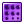 | AttractorValues Generates numerical values for any given pointlist, being affected by a certain number of point attractors. |
| 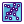 | BundleAttractor Generates an iteratively bundled pointlist for any given datatree population of points. |
| CurveAttractor Generates an iteratively defined new point/vector list for any given, curve attractor affected, population of points. | |
| CurveRavel Generates distance raveled numerical values for any given pointlist, being affected by any number of curve attractors. | |
| 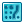 | CurveValues Generates numerical values for any given pointlist, being affected by any number of curve attractors. |
| PointAttractor Generates an iteratively defined new point/vector list for any given ,attractor affected, population of points. | |
| PointRavel Generates distance raveled numerical values for any given pointlist, being affected by any number of point attractors. | |
| 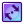 | TwirlAttractor Generates an iteratively defined new point/vector list for any given ,twirl attractor affected, population of points. |
Scramblers
| Climber Generates the gradient descent or ascent paths on a surface for any provided point list. | |
| 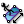 | MeshClimber Generates the gradient descent or ascent paths on a Mesh object for any provided point list. |
| 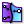 | CurveHicking Generates the surface paths for any given ,curve attractor affected, population of points. |
| PointHicking Generates the surface paths for any given ,point attractor affected, population of points. | |
| PointPatrolling Generates the surface paths for any given ,twirl attractor affected, population of points. |
Animators
| Bouncers Generates and animates particles moving within a user defined box (Timer defined). | |
| Railway Generates and animates random points on any given curve (Timer defined). | |
| Satellite Generates and animates satellite-like points around any collection of objects (Timer defined). | |
| Slicer Generates and animates a Rhino clipping plane on any given curve (Timer defined). | |
| Walkers Generates and animates particles attached on a surface (Timer defined). |
Set
| Panda_Carthesian Product Create the Carthesian product for two sets of identical cardinality. | |
| Panda_Cluster Protector UI Put this component in a cluster to protect it. | |
| Panda_Create Set Creates the valid set from a list of items (a valid set only contains distinct elements). | |
| Panda_Delete Consecutive Delete consecutive similar members in a set. | |
| Panda_Disjoint Test whether two sets are disjoint. | |
| Panda_Member Index Find the occurences of a specific member in a set. | |
| Panda_Panda_UI Change the component ui to panda_ui | |
| Panda_Replace Members Replace members in a set. | |
| Panda_Set Difference(S) Create the symmetric difference of two sets (the collection of objects present in A or B but not both). | |
| Panda_Set Difference Create the difference of two sets (the collection of objects present in A but not in B). | |
| Panda_Set Intersection Creates the intersection of two sets (the collection of unique objects present in both sets). | |
| Panda_Set Majority Determine majority member presence amongst three sets. | |
| Panda_Set Union Creates the union of two sets (the collection of unique objects present in either set). | |
| Panda_SubSet Test two sets for inclusion. | |
| Choose Out Choose out | |
| Cull Null Cull null in list | |
| Odd Even Split odd and even items from list | |
| Select Panda Select panda by nane,color,type,or layer | |
| Setting Option for component style | |
| Number String Description | |
| Modify Modify object | |
| Group Group duplicate data | |
| Loop End Loop end | |
| Loop Start Loop start | |
| Parallel Parallel Component | |
| Unique Unique duplicate data |
Panda
| Construct Text Construct textentity | |
| Deconstruct Text Gets orientation plane,text,font,and justification from a referenced text. | |
| Explode Text Explode textentity to curves | |
| Construct Layer Construct Layer | |
| Construct Material Construct Material | |
| Deconstruct Material Deconstruct materials | |
| Preview Panda Preview rhino objects with materials | |
| Bake Panda Bake geometry to the document with the specified attributes | |
| Construct Attributes Construct Object Attributes | |
| Construct Hatch Construct hatch | |
| Construct TextDot Construct TextDot | |
| Deconstruct Attributes Deconstruct Attributes | |
| Deconstruct Hatch Deconstruct hatch | |
| Deconstruct Layer Deconstruct Layer | |
| Deconstruct TextDot Deconstruct TextDot | |
| Panda Atrributes Get Panda's Atrributes | |
| Construct Block Construct Block embedded with attributes. | |
| Deconstruct Block Deconstruct blocks | |
| Construct Angulardim Construct Angulardim | |
| Construct Dimstyle Construct Dimstyle | |
| Construct Leader Construct Leader | |
| Construct Light Construct Light | |
| Construct Lineardim Construct Lineardim | |
| Deconstruct Dimension Style Deconstruct Dimension Style | |
| Deconstruct Light Deconstruct Light | |
| Insert Block Insert blocks by block name |
Params
| Alignment Text Display Alignment | |
| Angular Dimension Contains a collection of generic LinearDimensions | |
| Arrowtype Arrow Type | |
| Continuity Continuity Type | |
| DimensionStyle DimensionStyle in rhino DimensionStyleTable | |
| Displaymode Distance Display Mode | |
| Expression A textual expression | |
| HatchPattern Hatchpattern in rhino Hatchpatterntable | |
| Leader Contains a collection of generic Leaders | |
| Light Contains a collection of generic light | |
| Light Style Style of Light | |
| LinearDimension Contains a collection of generic LinearDimensions | |
| LineType Linetype in rhino Linetypetable | |
| Password User password | |
| User User name |
Curve
| Panda_2 Points Arc 2 Points Arc | |
| Panda_Loop_Flow Loop_Flow | |
| Panda_Multi_Offset Multi-Offset from polyline composed segments only. Allows assign multiple offset leave a polyline. | |
| Panda_Offset_Losse Contains a cluster of Grasshopper components | |
| Panda_TS_Network Create network curves | |
| Curves split Split curve by list of curves | |
| Direction Offset Offset curves in same direction | |
| Domain Choose Select list curves by length parameter | |
| Mutiple Split Split list of curves | |
| Order Curves Order list of mess curves | |
| Point At Curve Evaluates a curve at a specific location | |
| Points Split Split curve of by points | |
| Cull Duplicate Cull duplicate curves by tolerance | |
| Fixed Change Fixed Changed curve | |
| Discontinuity Find discontinuities along a curve by tolerance. |
Parameter
| Block Contains a collection of generic block | |
| Discountinuity Discountinuity Type | |
| Font Contains a collection of generic text font | |
| Hatch Description | |
| Hatchpattern Hatchpattern in rhino Hatchpatterntable | |
| Layer Layer in rhino layertable | |
| Linetype Linetype in rhino Linetypetable | |
| Material Material | |
| Attributes Attributes | |
| Panda Contains a collection of generic rhino objects | |
| Panda Type Type of panda | |
| Text Dot Description | |
| Text Entity Contains a collection of generic textentitys | |
| Justification Text Justification |
Surface
| Panda_Boundary Voronoi 3D Create boundary voino | |
| Panda_Loop Solid Union Loop Solid Union | |
| Panda_Loop Split Surafce Loop Split Surafce | |
| Panda_Map_Surface Contains a cluster of Grasshopper components | |
| Panda_NurbsSurface NurbsSurface from control points | |
| Panda_Offset Brep Offset Brep | |
| Polygon Pipe Creat a pipe syrface | |
| Offset Surface Offset surface including trim information | |
| Evaluate Subdivision Description | |
| Flat Subdivision Description | |
| Random Subdivision Description |
Point
| Panda_Sort Point Sort Points | |
| Clock Angle Find clockwise angle | |
| Sort Cull Sort and cull points | |
| Vector Sort Sort list points by vector | |
| Center Point Description | |
| Vector Group Group list points by vector |
Terrain
| Construct Road Construct road by road boundary | |
| Elevation Curve Create elevation curves from textentitys | |
| Elevation Point Construct elevation points through textentitys | |
| Terrain Terrain from a list of altitude points | |
| Analyze Terrain analyze |
Math
| Panda_Loop Area Loop Area | |
| Tanslator Tanslate component | |
| Interrupt Random Description | |
| Read Excel Read excel to data | |
| Write Excel Write data to excel |
Structure
| Spiral Stair Create a spiral stair | |
| Square Structure Create a space ssquare structure | |
| Curve Stair Create stair through a set of curves. | |
| Straight Stair Create a straight stair | |
| TR Stair Create a TR Stair |
Mesh
| Panda_Offset Mesh Offset Mesh | |
| Subdivision Subdivision |
Grid Utility
| Center Grid Extract center grid | |
| Clean Grid Remove null rows and null columns | |
| Wrap Grids Wrap grids in x or v direction | |
| Convert to Diamond Convert a rectangular grid to a diamond grid | |
| Extract Column Extract column from a grid | |
| Extract Grid Indices Extract grid indices (i and j location) | |
| Extract Item Extract grid item using i & j index | |
| Extract Row Extract row from a grid | |
| Flatten 3D Grids Flatten two grids to a linear list of corresponding cells | |
| Flatten Grids Flatten grids to a linear list of cells | |
| Coordinates Calculate x, y and z vectors for each grid point | |
| Coordinates 3D Calculate x, y and z vectors for each 3D cell | |
| Grid Density Change grid density | |
| Grid Dir Reverse grid i and j directions | |
| Replace Replace list of points using i and j locations | |
| Square Grid Make all grid rows have equal number of points | |
| Surface from Grid Calculate surface from grid | |
| Sub Grid Extract sub grid | |
| Trim Grid Trim grids | |
| Offset Grid Offset a grid by a fixed or variable distance |
Grid
| Compose Grid Compose a grid from points and their ij indices | |
| Compose Grid Number Compose a grid from points and number of rows | |
| Planar Grid Create planar grid | |
| Surface Distance Divide surface by distance | |
| Surface Parameter Divide surface by normalized parameter list | |
| Planar Extrude Create grid from planar extrude | |
| Polar Extrude Create grid from polar extrude | |
| Polar Grid Create polar grid | |
| Polar 3D Grid Create 3D polar grid | |
| Surface Domain Chord Distance Create grid from surface domain by chord or direct distance | |
| Surface Domain Length Create grid from surface domain by length on surface | |
| Surface Domain Number Create grid that from surface domain by number | |
| Intersect Curves Create from intersections of u and v curves |
Panel 2D
| Cellulate Generate individual cells and wires | |
| Panel Connections Panel using connection strings | |
| Morph 2D Morph curves to grid cells | |
| Morph 2D List Morph curves to grid cells with list variation | |
| Morph 2D Map Morph list of curves to the corresponding grid cells | |
| Morph 2D Mean Morph curves to grid cells with mean variation | |
| Generate Borders Generate cells borders | |
| Generate Faces Generate faces for grid cells | |
| Generate Flat Faces Generate cells flat faces |
Grid Attractors
| Curve Attraction Shuffle grid using curve attractors | |
| Direction Attraction Shuffle grid using a direction attractor | |
| Draft Angle Attraction Shuffle grid using a draft angle attractor | |
| Gaussian Curvature Shuffle grid using surface Gaussian curvature | |
| Mean Curvature Shuffle grid using surface Mean curvature | |
| Point Attraction Shuffle grid using point attractors | |
| Random Attraction Shuffle grid rendomly | |
| Weight Attraction Shuffle grid using weight map |
Panel 3D
| Cellulate 3D Grid Generate boxes between two bounding grids | |
| Panel 3D Connections Panel 3D using connection strings | |
| Morph 3D Morph objects between 2 bounding grids | |
| Morph 3D List Morph objects between 2 bounding grids with list variation | |
| Morph 3D Map Morph list of objects to the corresponding grid cells | |
| Orient to Grid Orient objects to a grid | |
| Morph 3D Mean Morph objects between 2 bounding grids using tween variations |
Curve
| Divide Distance Divide curve by distance | |
| Divide Distance with Reference Divide by chord or direct distance with reference point | |
| Divide Length Divide curve by length | |
| Divide Length with Reference Divide by length on curve with reference point | |
| Divide Number Divide curve by number | |
| Divide Parameter Divide curve by normalized parameter list |
Param
| Select Grid Select a PanelingTools grid of points | |
| Version PanelingTools version information | |
| Bake Grid Bake paneling grid(s) with serializing |
Panel Utility
| Iso Edges Extract iso-edges on surface from linear edges | |
| Pull Edges Pull linear edges to surface | |
| Short Edges Extract shortest path on surface from linear edges |
Gems
| Bezel Create a bezel for a gem | |
| Cabuchon studio Creator of cabuchons | |
| Channel On Surface Create a channel on a surface | |
| Channel Creates a channel of gems from a curve on a surface | |
| Cutter Create a cutter on a gem | |
| Cutters In Line 0 Create a cutter through a list of gems | |
| Cutters In Line 1 Create cross cutters to a line of gems | |
| Cutters In Line 2 Create cross cutters between gems | |
| Gems by 2 curves Create gems between two curves | |
| Gems by curve Create gems in a rail curve | |
| Gems studio Creator of gems | |
| Pave random Creates a brilliant cut pave on a surface (Kangaroo 0.99 required) | |
| Prongs fasten Create prongs fastening the gems | |
| Prongs studio Create prongs with rails for gems |
Rings
| Gauge Create a circle using a size of a regional system of gauge | |
| Ring base Create a basic ring | |
| Ring by curves Creates a ring with a frontal and side curves | |
| Ring half round Creates a half round ring | |
| Ring Profile Create a ring using a profile curve | |
| Ring Signet Create a ring with a curve for the signet | |
| Size to radius Converts the size of a regional system to his radius. | |
| Size to size Converts the size in a regional system to another regional system |
Workbench
| Hollow thickness Subtracts a hollow specifying the thickness | |
| Offset On Surface Variable Offset a curve on a surface with variable distances | |
| Offset Variable Offsets a curve with a range of values | |
| Rasterize Rasterize an image transforming black pixels in curve regions | |
| Shell curve Creates a solid with the interior subtracted from a closed planar curve | |
| Surface Offset Solid Offsets a surface creating a closed brep | |
| Text by curve Draw text as surfaces over a rail curve | |
| Texture Creates a texture with an image on a surface |
Production
| Costs Calculate the cost of your production You can open the cluster for editing | |
| genRandom Generates pseudo-random values in a domain and writes on a branch with a path value of the seed | |
| Market price Daily price of gold, silver, platinum and palladium in euro / gram in the London market (LBMA) | |
| Organize Organize the distribution of geometry in a base rectangle | |
| Timekeeper Time counter. Requires Timer component (1 second interval). | |
| Tree wax Create a tree and place geometry at the ends of branches | |
| Weight Calculates the weight in grams selecting a metal alloy |
Analysis
| Animation Create a simple animation from a guide curve. | |
| Curvature analysis Analyzes surface curvature | |
| Direction analysis Analyzes the direction of geometry | |
| Slicer Slice a geometry to get a section | |
| Thickness analysis Analyzes the thickness of a mesh | |
| Thickness dynamic Measures the thickness manually using points |
Profiles
| Profile 2Arcs Contains a cluster of Grasshopper components | |
| Profile HalfRound Contains a cluster of Grasshopper components | |
| Profile HalfRoundTruncated Contains a cluster of Grasshopper components | |
| Profile n-Bezier Contains a cluster of Grasshopper components | |
| Profile Ovoid Contains a cluster of Grasshopper components | |
| Profile Track Create a profile of track and edges |
Jewelry
| Calotte Creates a calotte to pearl | |
| Chain Creates a chain from a link and guide curves | |
| Filigree Creates a filigree with guide and profile curves | |
| Milgrain Creates a milgrain with a geomtry through a curve | |
| Pipe custom Create a pipe surface using a profile curve with variable width around a rail curve |
Display
| Arm Organic model of an arm | |
| Bust Organic model of a bust | |
| Ear Organic model of an ear | |
| Gem preview Preview gems choosing the color. | |
| Metal preview Preview metals |
PhylloMachine
| BezierCurve Quickly creates a Bezier curve from a mesh face | |
| Branch Extrude a mesh face controlling their subdivisions | |
| Explode Mesh Decompose a mesh into its faces | |
| iFibonacci Returns a Fibonacci number from its index | |
| Join Mesh Join & combine several meshes | |
| MoveFace Moves and scale a face on normal vector | |
| MoveVertex Move a list of vertices of a mesh | |
| OffsetMesh Offsets a mesh | |
| Petal Model a petal or a leaf from one face and a curve | |
| PhylloBranch Wrap a curve patterned on phyllotaxis and repositions the beginning on a mesh face | |
| PhylloCap Forms a PhylloMesh on a naked edge | |
| PhylloMachine Creates a mesh wrapping a curve forming the pattern of phyllotaxis | |
| PhylloMesh Wrap a curve to create a mesh whose vertices form the pattern of phyllotaxis | |
| PhylloSurface Creates a PhylloMesh over a surface from a cylindrical mapping. | |
| RatioBox Search proportions visually using boxes | |
| RndRange Create a range of random values within a domain with interpolation option |
Topology
| Brep Topology Edge Analyses the edge topology of a Brep | |
| Brep Topology Edge Filter Filter the edges of a brep based on their valency | |
| Brep Topology Vertex Analyses the vertex topology of a Brep | |
| Brep Topology Vertex Filter Filter the vertices of a brep based on their connectivity | |
| Line Topology Analyses the topology of a network consisting of lines | |
| Line Topology Filter Filters a network of lines based on connectivity | |
| Mesh Topology Edge Analyses the edge topology of a Mesh | |
| Mesh Topology Edge Filter Filter the edges of a mesh based on their valency | |
| Mesh Topology Vertex Analyses the vertex topology of a Mesh | |
| Mesh Topology Vertex Filter Filter the vertices of a mesh based on their connectivity | |
| Polygon Topology Edge Analyses the edge topology of a curve network consisting of closed polylines | |
| Polygon Topology Edge Filter Filter the edges in a polygon network based on their valency | |
| Polygon Topology Point Analyses the point topology of a network consisting of closed polylines | |
| Polygon Topology Point Filter Filter the points in a polygon network based on their connectivity |
0 | Rhino to SmartMesh
| Lines to SmartMesh Converts a list of Rhino Lines into a SmartMesh | |
| Mesh to SmartMesh Converts a Rhino Mesh into a SmartMes | |
| Surface to SmartMesh Converts a Rhino Surface into a SmartMesh | |
| SmartGrids Generate multiple different gridtypes from a surface |
Test
| Value List Provides a list of preset values to choose from | |
| Gradient Represents a multiple colour gradient | |
| Sel Gets selected object |
1 | Smart Modifiers
| SmartForm Relax a SmartMesh | |
| SmartClustering Clusters a set of panels or nodes |
3 | SmartMesh to Rhino
| SmartMesh to Lines Converts a SmartMesh into a list of Rhino Lines | |
| SmartMesh to Mesh Converts a SmartMesh into a Rhino Mesh. |
2 | SmartAnalyse
| SmartFormAnalyser Smart Analyse tool. Analyse and display various SmartMesh data |
SpiderWebBasic
| DataTreeToGraph parse a DataTree | |
| Dual Graph Dual Graph | |
| graphFromCells Create a Graph From a Set of Ajoining Cells | |
| graphFromLines create a graph from a set of connected lines | |
| graphFromMesh Create a directed Graph From a Mesh | |
| graphFromPoints Create a Graph From a Set of Points and a Connection Distance | |
| GraphToDataTree convert a Graph to a DataTree | |
| visualGraphGrid Create a visualGraphGrid from obstacles and a boundary area |
SpiderWebTools
| EulerianPath Checks if the Given Graph Has an Eulerian Path and Eeturns All Possible Starting Points | |
| Breadth-first Search Breadth-first Search | |
| MinST Mininmal Spanning Tree | |
| ShortestPathBetweenPoints Callculates the shortest path between points | |
| randomized Sequential Graph Coloring Randomized Sequential Graph Coloring | |
| recursiveShadowCasting preformes recursive shadow casting on a visualGraph | |
| Single Source Shortest Path Solves the Single Source Shortest Path Problem |
SpiderWebDisplay
| Display Graph Display Graph | |
| Display graphEdge Display graphEdge | |
| Display graphVertex Display graphVertex | |
| Display visualGraph Display visualGraph | |
| Graph Style Greate New Style for Displaying a Graph |
SpiderWeb
| graphEdgeList Graph represented as list of edges. | |
| graphMatrix graph Matrix representation | |
| graphStyle Style to Represent a Graph | |
| graphVertexList Graph represented as list of vertices. | |
| visualGraph visualGraph represented as list of vertices. |
SpiderWebManipulation
| find Edges get the index of a graphEdge within a Graph | |
| manipulateEdges Merge, Delete, Insert Edges | |
| manipulateVertices Merge, Delete Insert Vertices | |
| Split Split a graph at a given Distance |
SpiderWebFilter
| Image-GraphFilter Iamge based Filters on Graphs | |
| Points of Interest Points of Interest |
SpiderWebClustering
| agglomerativeClustering Preforms a bottom up distance clustering. | |
| distanceClustering Preforms a top down distance clustering. |
SpiderWebSpectral
| Eigensystem Computes the Eigensystem of graphMatrix | |
| SpectralMatching computes n-dimensional vectors for spectralGraphMatching |
Dynamics
| Alignment Creates a desire for integration vectors to align to neighbours | |
| Cohesion Creates a desire for integration points to gather together | |
| Gravity Dynamic Creates gravity sink/sources at specified points | |
| Scale Scales the vectors logarithmically as a post-process step | |
| Separation Creates a desire for integration points to maintain a particular distance from each other | |
| Surface Attraction A post-processing dynamic which causes integration to be attracted (or repulsed) from surfaces | |
| Surface Bounce A post-processing dynamic which allows the integration to bounce off of surfaces during a collision | |
| Surface Flow A post-processing dynamic which allows integration to flow along a list of surfaces | |
| Vector Addition Adds a vector to each vector in a vector field | |
| Vortex Dynamic Creates vortices inside a vector field at specified points (at the origins of the planar inputs) |
Utilities
| Counter A persistent counter that increases its count each iteration | |
| Distance Binning Allows faster processing of dynamics that reference the entire field of particles (Cohesion, Alignment, Separation) by processing only points in a local area (Bin) at a time | |
| Point/Vector Interpolation Interpolate an N-dimensional point based on surrounding M-dimensional vectors | |
| Dynamic Keyframe Keyframes a list of dynamics to only trigger at specified step ranges | |
| Number Interpolation Interpolates N-dimensional points based on surrounding M-dimensional vectors | |
| Open/Closed Curve Sorter Sorts a list of points representing curves into open and closed lists | |
| Tensor A Tensor component represents a 3d frame or basis, such as a plane | |
| Vector Field Creator Modifies or creates a new vector field |
Integration
| SPM Boundary Settings Settings to control boundaries during an integration | |
| SPM Vector Field Integration Statically or dynamically integrates points travelling through a vector field | |
| SPM Integration Settings Settings to configure a SPM vector field integration component | |
| SPM Orbit Settings Settings to control the orbit parameters | |
| SPM Particle Life Time Settings Settings to control the lifetime behaviour of particles | |
| SPM Tensor Settings Settings to work with tensor fields during integration |
Alchemists
| pmAdjacentFaces Generates DataTree of faces adjacent to each face | |
| pmCreatePolylines Create polylines from pMesh data. Works same as List item + polyline when one pMesh data is provided | |
| pmConnectedFaces Generates DataTree of faces connected to each vertice | |
| pmDecompose Create pMesh topology using polylines | |
| pmDual Dual pMesh operation | |
| pmLaplacianSmooth Laplacian smoothing/Weighted laplacian smoothing (when number of input weights is equal to number of vertices) | |
| pmNakedVertices Outputs list of booleans and naked vertices themself (true = naked) | |
| pmConnectedVertices Generates DataTree of vertices connected to each vertice | |
| pmOffset pMesh offset | |
| pmTruncate pMesh truncation | |
| pmUniqueEdges Finds unique topology edges |
Darners
| slFastMesh Makes Sl compatible mesh with multiple BReps | |
| slHull3D Incremental 3d convex hull | |
| slSourceMesh Create mesh with polyline | |
| slStarMesh Create mesh with polyline | |
| slTopoDisk Make mesh a topological disk (by adding faces) | |
| slTopoSphere Make mesh a topological sphere (by adding faces) |
Cartographers
| slChord Preserve chord length disk embedding | |
| slSphere Topological sphere embedding | |
| slTutte Tutte barycentric disk embedding |
Smoothen
| slRelax Relax mesh |
Generate
| tsBox Create a Box | |
| tsCone Create a Cone | |
| tsConvert Converts T-Splines | |
| tsCylinder Create a Cylinder | |
| tsExtrudeCurve Extrude a curve to a T-Spline | |
| tsFromLines Converts a set of lines into a mesh | |
| tsPipe Uses T-Splines to pipe curves | |
| tsPlane Create a Plane | |
| tsQuadball Create a quadball | |
| tsSphere Create a sphere | |
| tsTorus Create a Torus |
Modify
| tsBridge T-Splines bridge edges/faces | |
| tsCompressIndices Compresses the index space of the T-Spline, renumbering faces, edges, and verts so there are no gaps in the indices | |
| tsExtrude T-Splines extrude | |
| tsExtrudeAlongCurve T-Splines extrude along a curve | |
| tsExtrudeEdges T-Splines extrude edges | |
| tsMatch Create a Match | |
| tsThicken T-Splines thicken | |
| tsTransform Transform T-Splines components | |
| tsWeld T-Splines weld |
Decompose
| tsDecomposeEdge T-Splines split edges into categories. | |
| tsDecomposeFace T-Splines split faces into categories. | |
| tsDecomposeVert T-Splines split verts into categories. | |
| tsDrawIndexes Draw T-Spline component indices | |
| tsSelection Modifies the selection in various ways |
Info
| tsEdgeInfo T-Splines edge information. | |
| tsFaceInfo T-Splines face information. | |
| tsVertInfo T-Splines vert information. |
TT Tools
| CAD Exporter Export to CAD | |
| Galapagos Listener Creates a data tree of all Galapagos iterations | |
| Get Geometry Attributes Gets the name, GUID, and layer of any Rhino object | |
| Match Tree Structure Applies Tree Structure of one Tree to a List of Data. Inspired by cluster by A. Heumann | |
| Remove Duplicate Lines Removes duplicate lines in a list | |
| Remove Duplicate Points Replaces duplicate points in a list with null values, keeping the first instace of the duplicate in place. | |
| TT Safe Delete Delete or highlight selected objects in Rhino which are not referenced in Grasshopper | |
| SharedNodes This component groups curves that share the same nodes | |
| Sort Curves Along Crv Sorts Curves along a guide curve based on point t along curve. | |
| Get Hours and Days Get Hours and Days from Time Range | |
| Tree Branch Index TT Toolbox: Retrieves all items in specified data tree branch when specifying an index value for the desired branch | |
| Tree Item Index TT Toolbox: Retrieves an item from a Tree by specifying an index for the branch and item | |
| TT Sweep Draw 3D members given centerlines | |
| TT Sweep Names Section name selector for TT Sweep component | |
| Unfold Unfolds developable breps (and points and curves on those breps) onto a target plane. | |
| Unit Converter converts between common units and returns Rhino Units. |
Spectacles
| Launch Spectacles Viewer Launches the Spectacles Viewer in your web browser. | |
| Spectacles_Line Creates a Spectacles line | |
| Spectacles_LineBasicMaterial Creates a THREE.js Basic Line Material to use with line geometries | |
| Spectacles_Mesh Creates a Spectacles mesh from a grasshopper mesh. | |
| Spectacles_MeshBasicMaterial Creates mesh material that will always be the same color in a THREE.js scene - it will not be effected by lighting. | |
| Spectacles_MeshColoredFaces Creates a Spectacles mesh and a set of materials from a grasshopper mesh and a list of colors - one color per face | |
| Spectacles_MeshLambertMaterial Creates a non-shiny mesh material. | |
| Spectacles_MeshPhongMaterial Create a shiny material for meshes | |
| Spectacles_SceneCompiler Compiles Spectacles objects into a JSON representation of a THREE.js scene, which can be opened using the Spectacles viewer. | |
| Spectacles_Views Compiles the views selected to be exported | |
| Spectacles Colibri_3DObjects Compiles Spectacles objects into a JSON representation of a THREE.js scene, which can be opened using the Spectacles viewer. | |
| Spectacles_MeshColoredVertices Creates a Spectacles mesh and a material from a grasshopper mesh with color data. |
Platypus
| Platypus Connection Connect to 3dplatyp.us and get a session key to use downstream. | |
| Pull GH>GH Geometry Pull Grasshopper geometry in from other Grasshopper users in this session. Each user will have their own branch of each output data tree. | |
| Push GH>GH Geometry Push Grasshopper geometry to other Grasshopper users in the session. Points, Curves, Breps, and Meshes are supported. | |
| Stream Lines Stream lines to 3dplatyp.us | |
| Stream Meshes Stream meshes to 3dplatyp | |
| Stream Sliders Stream Sliders to 3dplatyp.us | |
| Launch Browser Launch 3dplatyp.us in your default web browser. |
Colibri 2.0
| Colibri Aggregator Aggregates design data, images & Spectacles models into a data.csv file (and corresponding data set that data.csv links to) that Design Explorer can open. | |
| Colibri Parameters Collects design parameters (us engineer types would call these 'performance metrics') to chart in Design Explorer | |
| Image Setting Defines how Colibri generates images during flights. You can specify which viewport[s] to capture, and the resolution of the image. | |
| Colibri Iterator Generates design iterations from a collection of sliders, panels, or valueLists. | |
| Iteration Selection Generates an iteration selection for the Colibri Iterator |
Excel
| Read Excel Sheet Read data from an Excel worksheet | |
| Write Options Option settings for writing data to Excel. | |
| Write To Excel Write Data to Excel |
UserData
| Add Data Add user data to a cloud. | |
| Bounds Get user data bounds. | |
| Preview Data Assign colors to cloud according to user data. | |
| Cull Cloud Cull cloud points according to user data values. | |
| Cloud Expression Evaluate an expression and save results as user data. | |
| Cloud Script Evaluate values with VB.NET script and save results as user data. | |
| Get Data Get data set stored in a cloud. | |
| Get Value Get data value stored in a cloud. | |
| List Keys List all keys stored in a cloud. | |
| Mesh Compare Compute distance to a mesh. | |
| Remove Data Remove data stored in a cloud. |
Engine
| Cloud Engine Point Cloud manipulation engine. | |
| Cloud EngineX Point Cloud manipulation engine. | |
| Box Crop Cull points outside of the box. | |
| Load Load cloud within the engine. | |
| Load E57 Load E57 within the engine. | |
| Plane Clip Cull points below the plane. | |
| Save E57 Save E57 file within the engine. | |
| Save Save XYZ file within the engine. | |
| Sphere Crop Cull points outsite of the sphere. | |
| Transform Apply transformation to the Point Cloud. | |
| Voxel Subsampling Apply voxel based spatial subsampling to the Point Cloud. |
Cloud
| Cloud Grid Create a point cloud 3d grid. | |
| Construct Cloud Construct a Cloud. | |
| Deconstruct Cloud Get points out of Cloud. | |
| Get Position Get the scanner position (meaningful only if the position was inherited somehow) | |
| Merge Clouds Merge multiple clouds into one. | |
| MultiMerge Merge clouds into multiple clouds. | |
| Set Position Set the scanner position. |
I/O
| Load E57 Ex Loads selected scans from E57 file together with all available metadata. | |
| E57 Metadata Read E57 file metadata. | |
| Load .xyz Loads point cloud from .xyz file. | |
| Load .xyz Ex Loads point cloud from .xyz file. | |
| Save E57 Ex Save E57 file. | |
| Save .xyz Save cloud to .xyz file. | |
| Preview .xyz Displays the first 100 lines of a text file. |
CloudCompare
| Command Line CloudCompare command line. http://cloudcompare.org/ See commands at http://www.danielgm.net/cc/doc/wiki/index.php5?title=CommandLine | |
| Command Line .E57 Cloud Compare command line with E57 file. http://cloudcompare.org/ See commands at http://www.danielgm.net/cc/doc/wiki/index.php5?title=CommandLine | |
| Random Subsampling Run CloudCompare E57 random subsampling. http://cloudcompare.org/ | |
| Spatial Subsampling Run CloudCompare E57 spatial subsampling. http://cloudcompare.org/ | |
| Open File Open file in CloudCompare. http://cloudcompare.org/ | |
| Convert .xyz CloudCompare convert to XYZ. http://cloudcompare.org/ | |
| Command Line .xyz Cloud Compare command line with xyz file. http://cloudcompare.org/ See commands at http://www.danielgm.net/cc/doc/wiki/index.php5?title=CommandLine |
Util
| Clean Cloud Cleans the cloud out of colors. | |
| ClippingPlane Preview geometry with a clipping plane. | |
| Delaunay Colored Delaunay triangulation on Point Cloud, with colors. | |
| Disjoint Cloud Disjoint cloud based on voxel topology. | |
| Mesh Include Cull points outside/inside of a mesh. | |
| Selection Create selection. | |
| Voxel Colored Voxelize a PointCloud with colors. |
Analysis
| Average Get the average point from a cloud. | |
| Closest Point Find closest point in the point cloud. | |
| Get Points Get specific points from a cloud. | |
| Sub Cloud Get a part of a cloud. | |
| Cloud | Plane Solve intersection events for a Cloud and a Plane. | |
| Cloud Statistics Basic information about cloud. |
Volvox
| About About Volvox |
Wb Extract
| Join Meshes and Weld | |
| Dual graph | |
| Reroute Faces | |
| Reroute Faces by Pattern | |
| Unify face windings | |
| Vertices Component | |
| Face Polylines | |
| Mesh Edges | |
| Naked boundary |
Wb SubD
Wb Transform
| Offset Mesh | |
| Sierpinski Carpet | |
| Mesh Window | |
| Picture Frame | |
| Bevel Edges | |
| Stellate/Cumulation | |
| Mesh Thicken | |
| Bevel Vertices |
Wb Define
| Mesh Antiprism | |
| Mesh Pyramid | |
| Mesh Prism | |
| Mesh Dipyramid | |
| Mesh Mesh Icosahedron | |
| Polylines Dodecahedron |
Wb Smoothen
| Laplacian Smoothing | |
| Blur Mesh | |
| LaplacianHC Smoothing |
Wb Create
| Mesh From Lines (Weave Back) | |
| Tile |
Core
| Center Print on Print Bed Moves the input geometry to the center of the print bed as determined by the input printer dimesions | |
| Config Setting If an individual specific setting is input in S, it will be returned | |
| Curve Infill Take the given curve and creates an infill (based on the extrusion width and infill ratio) of the curve as a polyline | |
| Curve to G Code Converts a cureve into g code to 3D print with a standard filament based printer | |
| Curve with Infill Outputs polyines for W walls and infill at I density | |
| Curves with Infill Compound offsets curves by 1/2 the extrusion witdth | |
| Offset In Offsets curves inward | |
| Offset Out Offset curves outward | |
| Offset Complex Offset curves, with automatic detection of internal vs | |
| Offset Compound Contains a cluster of Grasshopper components | |
| Print Log saves info about the print into a Google Sheet | |
| Slice Walls with Infill Compound Slices geometry and offsets perimeters by 1/2 the extrusion witdth | |
| Slice Walls with Infill Slices input geometry and outputs polyines for W walls and infill at I density | |
| Slice Slice geometry based on layer height ( directly or from a Xylinus Config) |
Filament
| Config - Filament This component holds the primary configurations needed for 3D printing on a standard filimant-based printer | |
| Config - Filament jimmi PLA Double-click to edit this blank starter config | |
| Extrusion Rate Calculator calculate basic extrusion rate as factored by the cross section area of the filament and that of the print extrusion | |
| G Code Start - Filament G code to begin the 3D print | |
| G Code End - Filament G code to end a 3D print | |
| G Code Merge - Filament Merge gcode with start and end gcode | |
| Print Curve - Filament Converts a curve into g code to 3D print with a standard filament based printer | |
| Print Curve with Blob and Drool - Filament extrudes a given amount of filament (Blob) at each point and a modified amount of filament (Drool) in between points | |
| Print Curve with Infill - Filament Slices input geometry and renerates G Code to print [W] walls and infill at [I] density | |
| Print 3D - Filament Slices input geometry and renerates G Code to print [W] walls and infill at [I] density |
DLP
| Black Out creates a black out surface | |
| Config - DLP This component holds the primary configurations needed for 3D printing with an a DLP projector to do SLA | |
| Config - DLP BUGSS Config DLP BUGSS | |
| DLP Slice Slice geometry based upon a Xylinus DLP Config | |
| G Code Start - DLP G code to begin the 3D print | |
| G Code End - DLP G code to end a 3D print | |
| GC Send Sends G Code to the printer | |
| Print DLP Generate the G Code and synch it with the projected slices | |
| Projector Window Opens a floating viewport, maximizes it to the projector display, and zooms to the supplied calibration geometry | |
| Z Move G Code Generate the G Code to move the Z platform of the printer |
Syringe
| Config - Syringe M Codes This configures the M Codes for pneumatically controlling a syringe | |
| Config - Syringe This component holds the primary configurations needed for 3D printing on a standard filimant-based printer | |
| Config BUGSS_S M Codes Contains a cluster of Grasshopper components | |
| Config BUGSS_S This component holds the primary configurations needed for 3D printing on a standard filimant-based printer | |
| G Code Start - Syringe G code to begin the 3D print | |
| G Code nd - Syringe G code to end a 3D print | |
| Print Curve - Syringe Converts a curve into g code to 3D print with a syringe based printer | |
| Print Curve with Infill - Syringe Slices input geometry and renerates G Code to print [W] walls and infill at [I] density | |
| Print 3D - Syringe Slices input geometry and renerates G Code to print [W] walls and infill at [I] density |